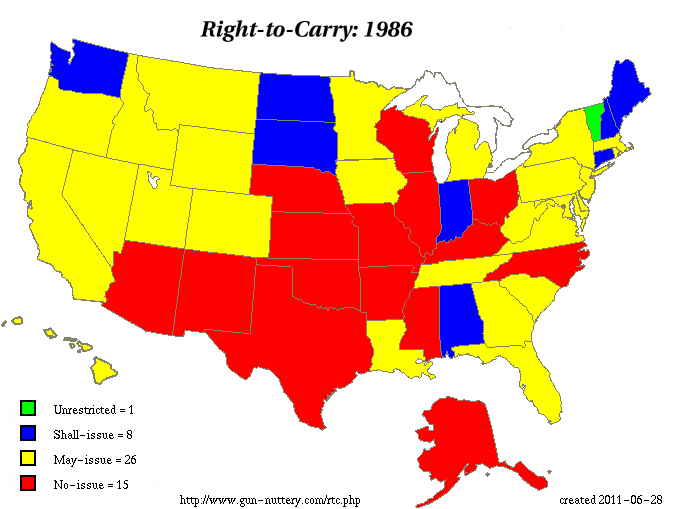
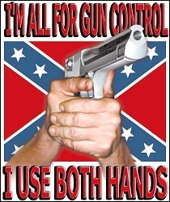

Фриц Морген: Почему в России необходимо легализовать огнестрельное оружие
http://fritzmorgen.livejournal.com/406362.html
Номад начал дискуссию о легализации огнестрельного оружия. Лично я его полностью поддерживаю.
Я считаю, что огнестрельное оружие, вплоть до автоматов и снайперских винтовок, должно продаваться в оружейных магазинах свободно, любому трезвому человеку, по предъявлении паспорта.
Сразу отмечу, что Фриц -- профессиональный провокатор, иногда -- в хорошем смысле слова, а иногда -- не особо. В данном случае тезис "продавать оружие всем свободно" -- некорректен, еще бы бесплатно раздать предложил. С чего бы это продавать оружие трезвым психам? Или тем, кто не знает, откуда пули вылетают, но уверен, что это происходит после нажатия пальцем на курок?
КС должен продаваться после успешного прохождения курсов, включающих практические навыки стрельбы и ухода за оружием, психологическую подготовку, разбор юридических аспектов применения. Лично мое мнение -- аналогично другому нарезному, после стажа владения гладкоствольным.
Но на комменты полезно посмотреть и здесь, т.к. отвечают не только "все правильно, но после обучения".
Да -- я тут почти не комментирую. И давно уже все объяснено в предыдущих частях, и континтгент у Фрица собрался такой, что no comments нередко.
Объясню почему.
Во-первых, оружие — это ответственность. Оружие дисциплинирует. Несколько лет назад я начал заниматься стрельбой, потом завёл себе травматический пистолет.
Прошло совсем немного времени и я внезапно понял, что больше не позволяю себе напиваться. Моё потребление этанола ограничилось до двух-трёх бутылок пива — дозы, после которой я чувствовал ещё себя адекватным человеком. А ещё через пару лет я и вовсе полностью отказался от этого наркотика. Последний раз я пил в прошлом десятилетии.
Верное наблюдение, кстати. Конечно, это не значит, что все владельцы КС бросают пить и проч., но что дисциплинирует -- это точно. Хотя бы ввести запрет на ношение КС в нетрезвом виде -- и уже имярек подумает, что важнее -- желание ужраться или безопасность.
При этом, если подходить адекватно, а не продавать каждому, первая первичная проверка на ответственность уже проходится -- отсутствие судимостей, изучение соотв. законов, сама процедура оформления... Те, кто купил бы "просто так", редко будут заморачиваться. Еще добавить ответственность за ношение в нетрезвом виде, а также лишать лицензии в случае уличения в использовании наркотиков (тут есть сложности -- могут подкинуть, но я о стратегии) -- и вообще замечательно.
И это ни разу не совпадение. Обратите внимание на российский Кавказ. С одной стороны, там наблюдается настоящий культ оружия. С другой стороны, там пьют гораздо меньше, чем в континентальной России. Конечно, вы скажете мне сейчас про ислам… однако ислам — это только часть объяснения. Я уверен, после легализации оружия россияне станут меньше пить.
Здесь -- демагогия. Причем косвенно одобряющая культ оружия среди кавказцев, у которых как раз с ответсвенностью очень большие напряги, я бы сказал. При этом пить меньше статистически не станут -- оружие приобретут далеко не все и не самые маргиналы. Но вот пьяных дебошей стенет меньше, по идее.
Кстати, в качестве аналогии можно сослаться на автомобили. Наличие автомобиля реально держит в узде многих этанолозависимых людей: они не пьют совсем или пьют меньше, так как знают, что в нетрезвом виде за рулём делать нечего.
Именно. По себе знаю. И давно понял, что куда логичнее ловить тачку (и найти постоянного водителя в своем районе), чем возиться с собственным автомобилем :-)
Дальше. Оружие — это свобода. Мне хочется верить, что я живу в свободной стране. А свободный человек должен иметь возможность купить — и носить с собой — оружие. В прикреплённом к посту пропагандистском ролике безоружные люди совершенно правильно изображены в виде овец.
Вспомним тот же теракт на Дубровке. Небольшая группа боевиков захватила почти тысячу безоружных человек, которые вынуждены были покорно подчиниться всем требованиям террористов.
Вообще, главная их проблема безоружных овец даже не в том, что они не могут при необходимости отстреляться от преступника, хотя иногда и это очень важно. Главная их проблема в том, что они ежедневно ощущают себя беззащитными овцами. Овцами, которые вынуждены, вжав голову в плечи, ежедневно ходить мимо вооружённых пастухов-полицейский и вооружённых волков-преступников.
Обратите внимание: я не говорю, что человек без оружия не может чувствовать себя свободным. Разумеется, может. Однако у свободного человека обязательно должна быть возможность это оружие купить.
Именно.
Часто хопловобы это передергивают на что-то типа "это вам хочется чувствовать себя крутыми" и проч. Не-а, просто возникает резонное желание повысить уровень безопасности наиболее эффективным способом для свободного человека. Вольный человек -- это (в частности) тот, кто берет на себя личную ответственность за свои поступки, а не ждет, когда кто-то его спасет.
Прим.: для любителей передергивать -- это НЕ означает призыва к самосуду во всех случаях и проч. Но если такое надо объяснять кому-то, то с имярек не имеет смысла общаться вообще.
Кстати, о свободе. Я довольно много общаюсь с эмигрантами. И — как это ни удивительно — доступность огнестрельного оружия является для многих очень важным плюсом жизни за рубежом.
Что удивительного-то :-)
Снова проведу аналогию с автомобилями. Представьте себе, что гражданским лицам запретили водить автомобили: только мотороллеры и только после унизительного сбора документов. Право водить автомобили есть только у полицейских, профессиональных военных и у прочих привилегированных лиц.
Как полагаете, будет подобная дискриминация влиять на мироощущение простых граждан?
Уверен, что будет. И даже те люди, которые не любят автомобили и в любом случае ходили бы пешком, всё равно будут чувствовать себя гражданами второго сорта. Или, точнее, инфантильными несмышлёнышами, которым взрослые люди не считают возможным доверить даже пистолет Макарова.
Именно.
Вы знаете, что в Швейцарии солдату после службы выдают с собой не только два комплекта формы, но и оружие?
Тем не менее, это так. И суть тут даже не в том, что хороший солдат должен регулярно тренироваться в стрельбе — хотя и это тоже важно. Суть в том, что владение оружием сильно меняет мироощущение человека.
Следующая причина полностью легализовать огнестрельное оружие. Спорт.
Стрельба — традиционное мужское развлечение. Огромное количество пузатых любителей пива никогда не сядет на велосипед и никогда не пойдёт прыгать на скакалке в секции бокса. Но вот заглянуть после работы с друзьями в тир и пострелять там в своё удовольствие — это совсем другое дело.
В США, для справки, спортивной стрельбой только официально занимаются около десяти миллионов человек. А сколько людей там просто стреляет время от времени в своё удовольствие?
Этот тезис, бывало, передергивают на "от стрельбы у вас пузо не уменьшится". Но этого никто и не заявляет -- подобная демагогия указывает лишь на озабоченность внешностью, что само по себе о многом говорит. Спорт -- это прежде всего борьба с самим собой, умение ставить цель, добиваться, улучшать результаты и т.д. И, кроме того, развлечение. Ну и, в конце концов, что лучше -- пострелять в тире и после этого слегка по пиву, или же весь вечер ужираться пивом?
И, наконец, ещё одна важная причина для легализации огнестрельного оружия — декриминализация связанного сейчас с запретом оружия «бизнеса».
Сотрудники полиции больше не смогут подкинуть патрон в карман человеку, которого надо посадить.
Есть такое. Вот, например, в марте 2011 было: "Суд Магнитогорска осудил 75-летнюю пенсионерку за то, что женщина хранила у себя дома... один патрон. сейчас она уже и сама не помнит, когда и при каких обстоятельствах нашла тот злосчастный боеприпас. Возможно, предполагает старушка, это было лет пять назад, когда она работала вахтером и ходила на стрельбище. Патрон она хранила в качестве сувенира в тумбочке рядом с кроватью. А летом прошлого года к пенсионерке пожаловали с обыском — скорее всего “склад боеприпасов” выдал кто-то из гостей четы пенсионеров. Елизавета Михайловна простодушно выдала: “Есть у меня один патрончик, маленький-маленький такой. Я его берегу на память...” На старушку завели дело по части 1 ст. 222 УК РФ — незаконное хранение боеприпасов. В обвинительном заключении следователи не преминули указать, что пенсионерка “посягает на общественную безопасность”."
Но аргумент так себе -- в конце концов, можно и героин подкинуть. Это же не значит, что надо разрешать свободную продажу наркотиков.
Подпольные торговцы оружием вынуждены будут резко сократить свои обороты.
Мимо. Для преступлений нужно именно нелегальное оружие, а не зарегистрированное в пулегильзотеке.
Занимающиеся выдачей разрешений оборотни в погонах перестанут собирать взятки, часами мариновать посетителей в очередях и бессмысленно прожирать бюджетные деньги.
Мимо. Как раз этот отдел МВД работает вполне адекватно, а давать оружие вообще всем подряд нельзя. Желающие такого могут переселяться в Сомали.
Более того. Наши оружейные магазины и оружейные заводы смогут значительно нарастить производство и продажу оружия. А ведь это — хорошая, полноценная отрасль бизнеса, которая даёт России налоги и рабочие места.
Именно. Плюс на складах законсервировано до фига оружия устаревших моделей, которые как раз и займут соответсвующию нишу "недорого без понтов".
В вопросе легализации наркотиков надо исходить из принципа «наименьшего зла»: запрет наркотиков приносит куда как больше вреда, чем сами наркотики.
Вранье. Но здесь -- оффтопик. Когда-нибудь напишу на эту тему статью, уже задолбал миф о том, что будет полезно легализовать наркотики.
В вопросе же легализации оружия выбирать между злом и злом даже не нужно. Само по себе оружие — это здорово и прекрасно. И только доставшееся нам по наследству от СССР отношение к гражданам как к рабам мешает оружие легализовать.
И тут СССРфобия и вранье, но не будем забираться в оффтопы. А то я читал и клинику вида "специально заботились о здоровье населения, как о рабах, а истинно свободный человек должен иметь право болеть и не лечиться".
Что же касается высосанных из пальца аргументов противников легализации — я не хочу тратить время, чтобы всерьёз разбирать это убожество. Все известные мне доводы сторонников запрета основаны на низкопробных эмоциях, густо перемешанных с невежеством. Опыт десятков других стран показывает, что ровно никаких отрицательных последствий легализация огнестрельного оружия не имеет.
Согласен. Но тут интересны комментарии...
smti: Вы чего сдурели??? Какая в жопу ответственность с русским менталитетом. А если еще и любой с СВД будет ходить тогда даже сесть пардон посрать нельзя будет. Вероятность встретить бандита и остаться живым после дубинки или биты намного выше чем после огнестрельного. А сколько у нас психов в стране? Вы задумывались над тем что будет будь у них оружие? Нет, вы не правы! А техномада вообще в жопу слать надо с его политикой.
crazy_daemon: В Молдавии сильно другой менталитет?
smti: Весьма интересный факт. Думаю тут стоит вопрос в деньгах, торговцы оружием хотят протолкнуть свой бизнес.
licvidator: Эстония, Латвия, Молдавия - оружие разрешено. Каждый второй там - русский. Количество преступлений после легалайза пошло вниз, на улицах не стреляют.
Болгария - тоже. Менталитет там похожий. Случаи стрельбы по прохожим чисто от скуки тоже не встречаются.
smti: Эстония вступила в Евросоюз, то что там оружие теперь разрешено нечему удивляться. По тому как дела обстоят в Латвии советую посмотреть фильм Зеро и Зеро 2. Молдавия так же как и Болгария, Латвия, Эстония, территориально маленькие страны. В России же если кого то пристрелят то об этом никто не узнает. Все знают какого мнения народ об полиции, то есть в случае какого то происшествия это самое оружие в ход и пойдет. Одно дело когда у кого то одного саморез под кроватью лежит, и другое дело закон толпы.
Anonymous: В америке вообще ад. "Бомж с дробовиком" посмотрите. Как там вообще люди живут - не понятно
Тут что интересно. Во-первых, аналоги СВД (не будем придираться к точным ТТХ) давным-давно продаются. При этом smti не жалуется на текущие проблемы с дефекацией. И, кстати, не очень понятно, а ГДЕ он собирается садиться срать, что предполагает -- в него за это будут стрелять?
Во-вторых, если имярек собирается сразу поднимать лапки -- то ему же лучше, если у грабителя будет КС. Его тогда достаточно показать, а вот битой придется бить. Если исходить из возможности применения оружия, то думать, что битой -- это однозначно лучше, чем получить огнестрельное ранение -- крайне наивно. Биты -- они, знаете ли, кости дробят часто, даже не просто ломают. Причем битой будут бить не один раз, как нетрудно догадаться. Дальше продолжать?
x_persona: в эстонии латвии - нормальные русские. ненормальных русских много в русской глубинке. полуголовники. там каждый второй сидевший.
licvidator: Сидевшим во-первых оружие не полагается по закону и сейчас, во-вторых у них либо нет на него денег (если вышел и решил исправиться), или есть нелегальное (если вышел и братки позвали обратно), в третьих - прошу не обижать коренных жителей моей страны. У меня и батя, и мать из Тамбовской области, гладкоствол в каждом втором доме, надо - сбегай да принеси. Пьют некисло, на дискотеках из-за девок дерутся, но стрельбы никогда не было.
MiKhail Seleznev: А вы в курсе, что нарезные снайперские винтовки продаются в России вполне свободно? И если в курсе, просыпаетесь ли вы ночами с криками?
smti: Нет к сожалению не в курсе.
MiKhail Seleznev: Так знайте же: уже сейчас любой поц, дав на лапу нескольким врачам и полицейским, может вполне легально купить гладкоствольный дробовик. А вы знаете, что такое гладкоствольный дробовик? Это ручная гаубица. Выстрел из него в упор в плечо приводит к ампутации конечности. А по прошествии пяти лет бескосячного владения оным дробовиком, тот же поц имеет право выправить лицензию на нарезное охотничье ружьё со снайперским прицелом. По статистике, сейчас в России что-то около пяти миллионов таких стволов на руках. Вам всё ещё не страшно жить в этой стране?
MiKhail Seleznev: И совершенно непонятно, почему в таких условиях скромные пистолеты считаются чем-то недопустимым.
x_persona: такого человека я не опасаюсь. если ему есть чем давать взятки, есть связи значит мозги у него более менее работают. я опасаюсь гопника из глубинки который вчера вышел из тюрьмы и приобретает ствол показав только паспорт
drnovikov: Вот неспроста о невежестве-то говорят.
1. Он вышел из тюрьмы. Он судимый, ему не дадут оружие.
2. Он вышел из тюрьмы, он гопник, у него нет денег на ствол.
3. Уже сегодня он может приобрести и без паспорта ствол на черном рынке. ПМ -- 300 баксов. Гуглите эксперимент девушки-журналистки, которая и без связей раздобыла ПМ за 2 недели.
4. Уже сегодня он может приобрести, как только судимость будет снята, тот же дробовик.
5. Чтобы совершить преступление из оружия, зарегистрированного на свое имя, гопник должен быть таким же идиотом, как и те тупые овцы, что выступают против оружия самообороны.
smti: Там речь шла о статистике про пять миллионов стволов на руках.
MiKhail Seleznev: Ну, допустим, Российская Газета (официальный печатный орган Правительства и всё такое) говорит нам, что в России на руках населения - свыше 5,8 миллиона единиц самого разного оружия.
Anonymous: Про 5,8 миллионов единиц "самого разнообразного" все ясно. Сюда включена травматика и газовое оружие. Вы же изначально говорили про гладкоствол. Относительно него цифра будет на порядок меньше
Anonymous 2: Говорит Г. В. Гудков, Заместитель председателя комитета ГД по безопасности: "Есть данные о том, сколько всего оружия находится на руках у наших охотников, это порядка пяти миллионов единиц. Из них примерно 10 процентов нарезного."
Наши охотники, стало быть, ходят на кабана и мишку с травматикой и газовым оружием? А чё не сразу с рогатиной, луком и стрелами?
]millionaire2222: "Какая в жопу ответственность с русским менталитетом." -- Дальше читать не стал.
uroidoshi: Вот просто "плюс сто мильёнав".
route_60: а вот и неправда ваша. У буржуев уважение к личности и ее правам - в крови. Чисто по культурным соображениям + принцип неотвратимости наказания. У нас - уважения к личности ноль. Любой гопник в любой момент развалит вам щщи, или банда бонхедов проломит череп - за просто так. И профессиональная полиция (тм) тупо не будет никого искать. Не то что не найдет - а даже не будет искать. А если всем этим гаврикам раздать стволы??
А синева? Наши же любят удаль молодецкую показать по синей лавочке. Его-то посадят (может быть), а у вас - дырка в голове и 2 квадрата родной земли на кладбище.
Не-не-не, Дэвид Блейн, нашим оружие раздавать - нельзя.
Ах, уж эти буржуи!
naganoff: Эти люди считают нас за животных, и не скрывают этого. Я одному тоже про Молдавию объяснял, спрашивал - а чем мы-то хуже? Мы что - животные? А он отвечает: "Да, мы - животные".
blazedance: Русские туристы за рубежом себя уже 20 лет показывают клоунами, свиньями, и не адекватными алкашами. Как нормальным людям реагировать то? Что заслужили такое отношение и получили.
Вы не сравнивайте ситуацию на Западе с оружием с ситуацией которая будет в РФ, будет всё совсем по-другому.
naganoff: То есть, мы всё-таки животные?
blazedance: Мы не животные, Россия другая страна. Бедность, алкоголизм, безответственность, коррупция все эти факторы вкупе с тем что оружие будет у всех начнёт захлопывать крышку гроба над этой страной, на радость Западу, на который вы пытаетесь равняться с оружием.
naganoff: В Молдавии (где оружие разрешено) разве лучше ситуация с бедностью, алкоголизмом, безответственностью, коррупцией? Захлопнуло ли разрешённое оружие там крышку гроба?
blazedance: Вы были в Молдавии? Или прочитали в ЖЖ что там плохо? Скорее второе. Да там лучше.
naganoff: Молдавия - самая бедная страна в Европе.
Уровень потребления алкоголя в Молдавии на душу населения - 13.2 литра, в России - 10,3 литра.
Параметр безответственности статистически не измеряется.
Индекс восприятия коррупции по данным Transparency International за 2010 г.: Молдавия занимает 105 место в мире, а Россия - 154. Да, коррупции у нас побольше.
И ещё. Много ли русских гастарбайтеров в Молдавии?
blazedance: 1) Да она действительно самая бедная страна в Европе. Трудно конкурировать с другими странами, нефига у них не осталось после СССР.
2) Да только прикол в том что это вино ))) Да они наливают детям вино, но и Греки так же поступают. Это лучше чем школьники 7-8 класса стоящие после уроков в магазине в очереди за водкой. И не забывайте гигантской разницы в плотности населения.
3) У них законы прозрачнее, индексация коррупции вещь не объективная. Сами понимаете.
4) Незнаю насчёт гастарбайтеров.
Если вы считаете что равняться на Молдавию нормально? То я считаю обратное.
naganoff: Да, надо равняться на Молдавию. В Молдавии у населения на законных основаниях находится 58335 единиц огнестрельного оружия. При этом количество убийств в Молдавии – 7,2 на 100 тыс. чел., а у нас - 13, что почти вдвое выше. Количество преступлений, совершенных с применением огнестрельного оружия по итогам 2010 г., в Молдавии составило 25 (двадцать пять!). Количество погибших от огнестрельного оружия - 1,9 чел. на 100 тыс. населения.
Кровавая бойня...
Обратили внимание, как оппонент ужом вертится? Мол, ничего не знаю, но все равно -- "другая страна", не то что Греки-с-большой-буквы!
Кстати. Я, конечно, не питаю иллюзий на тему современных школьников, но все же не припоминаю семиклассников, стоящих в очереди за водкой. Во-1, двенадцатилетнему фиг продадут -- слишком большое палево для продавщицы, мягко говоря. Во-2, где вы сейчас видели очереди за водкой?!
blazedance: Т.е дав в руки быдлу и детям оружие в руки вы научите их ответственности? И да - оружие попадёт им в руки, не важно как, украдут у родителей, купят через вторые руки. Как уже не однократно было тут подмечено - верх паранойи имбецилов. Полно случаев когда травматы пускают в дело когда заканчиваются аргументы у людей. И да - бывают смертельные случаи, даже с травматами. Во сколько раз должна возрасти смертность, чтобы вы в штанах цвета хаки должны осознать истинную природу вещей?
Держал, ответственности не прибавилось? Может я его как-то не так держал? К слову изволю вам намекнуть что подобный вопрос "Вы в ствол в руках держали вообще?" тянет так на 10-11 класс общеобразовательной школы, либо на провокацию толстого и зелёного троля. И вообще не предполагает даже попытку объяснить такому субъекту как вам что-либо.
slon63: Аккуратнее, пожалуйста. А то Вы меня всего слюнями забрызгали.
По существу: Управление автомобилем имбецилами (наркоманами, детьми) приводит к тяжелейшим ДТП. Свободная продажа имбецилам кодеиносодержащих препаратов приводит к тяжелейшим формам наркомании. Употребление имбецилами немеряных доз алкоголя приводит к насильственным преступлениям. Участие имбецилов в выборах приводит к власти различных мразей. Владение имбецилами травматическим оружием приводит к случаям его неправомерного применения. Владение имбецилами огнестрельным оружием приведет к случаям его неправомерного применения. С этими утверждениями Вы спорить будете?
Соответственно, так как имбецилов запретить не получиться при всем желании, исходя из Вашей логики необходимо запретить свободную продажу огнестрельного, травматического оружия,алкоголя, медикаментов, выборы, управление автомобилями и другими источниками повышенной опасности всем гражданам поголовно?
Что касаемо "ствола в руках". Как-то, в начале века, меня грабанули именно держа "под стволом". После этого, сгоряча, я приобрел нелегальный "макар" и всегда возил его в машине. Когда два года назад ситуация практически повторилась, я даже и не подумал хватать его и сопротивляться, хотя возможность была. Потому что для себя давно уже обдумывал такую ситуацию. Если стрелять не насмерть, то сидеть бы мне долго и без шансов. Если насмерть, то может быть и не найдут. Но если найдут... Короче, если бы ствол был легальный, стрелял бы не раздумывая. А не валялся как баран глядя в след своей машине и нелегальному стволу в ней.
Делайте выводы сами. Для себя я его сделал.
Вывод простой. Во-1, стрелять из нелегального оружия стремно, на это только преступник пойдет. Во-2, есть ситуации, в которых легальный КС очень бы помог.
13095: "Вероятность встретить бандита и остаться живым после дубинки или биты намного выше чем после огнестрельного"
вы правда не понимаете что удар битой наносит намного более тяжёлые повреждения чем пуля?
ешё не забываем про выброс адреналина. выстрелил-получил отдачу, а бита - это уже драка с соответсвуюшими физическими особенностями, типа очень медленного "остывания".
и последнее. вы знаете много гопников которые любят "мокрые" дела? я ни одного. а огнестрел не позволяет вырубить человека и при этом оставить его живым, и будьте уверены что большинство гопов это отлично понимают.
smti: Что станет с человеком если эта самая пуля попадет в кость?
13095: а вот что будет если битой попасть по кисти руки? или по стопе? там кости такие что их пальцами сломать можно.
akmel: Вы видели локти и колени после вашей биты? там пиздец, кагбе
smti: Локоть и колено это конечность, которое не задевает жизненно важные органы. А вот пуля может оставить хорошую воронку, и никакая перебинтовка не справится с потоком крови.
И я про то же выше писал. Такое ощущение, что ратующие за использование в отношении них бит никогда даже пару ударов кулаком не получали. И переломов у них не было...
adamantane1985: Морган и Номад рехнулись! Тоже не поддерживаю!
"Опыт десятков других стран показывает" - да хренли нужен этот опыт, если "умом Россию не понять"!!! Автор предлагает вариант, при котором, на практике, от шальных пуль психов будет гибнуть несмтное количество адекватных людей...
Ах, уж эти буржуи! Не то, что русские психи!
avryabov: "Какая в жопу ответственность с русским менталитетом" -- Русофоб детектед.
"А если еще и любой с СВД будет ходить тогда даже сесть пардон посрать нельзя будет" -- Эй, русофоб! У меня, у русского, гражданского, есть нарезная огнестрельная винтовка с оптическим прицелом. И даже две штуки. И я знаю кучу других таких же русских.
Ну что, сколько продержишся без дефекации?
smti: Это ваше дело сколько у вас там чего. С чего вы взяли что я русофоб, я отношу себя к тому же числу людей. И да, вы назвали себя русским а вы уверены что вы русский? Хорошо интересовались своими корнями? Не подпортило вам кровинушку Татаро-Монгольское иго? Не задавились вы вопросом почему никто не может точно сказать какие у него корни? Мне противны вообще разговоры на тему национальных розней.
Тут уже идет борьба за выживание, и стоит проблема в психологии и опять же повторяюсь в менталитете, быть может не в русском а как тогда его назвать если мы с вами живем в России?
avryabov: Точно, в менталитете. Овечьем. Как у вас. Только это, к сожалению, не только Российская беда, а всемирная.
Вы же очевидно решили для себя, что пусть вас грабят, убивают, насилуют, лишь бы вы ничего не делали против этого. Пацифизм такой. Ну это ваш выбор, когда с вами такое случится я расстраиваться не буду.
Оно еще и толераст, оказывается.
blazedance: Вы слышали о такой вещи как презумпция невиновности. Так вот уровень преступности РФ это своего рода доказательство, что ввод оружия только всё усугубит ещё больше.
Да-да. Эффективное средство противостояния преступникам усугубит все еще больше. По логике, это заявлено с точки зрения преступников.
naganoff: Я поддерживаю чуть менее, чем полностью. Не нравится мне конкретно та идея, что огнестрельное оружие, вплоть до автоматов и снайперских винтовок, должно продаваться в оружейных магазинах свободно, любому трезвому человеку, по предъявлению паспорта. Нужна более тщательная проверка (психическое здоровье, несудимость), а также система стрелковых организаций, обладающих правом рекомендации на выдачу лицензии на ношение оружия, владельцы которых будут сами заинтересованы отсеивать странных людей, и не будут рекомендовать к получению лицензий психопатов, купивших справки, - ведь эти стрелковые клубы будут давать ежемесячно крупные доходы от членских взносов тысяч людей, что исключит желание брать взятки от всяких дебилов, рискуя всем бизнесом.
Именно.
mmmiguel: Одумайтесь, Люди! По любому иго иудейское навязывает нам это!
Одумайтесь! Мы люди или дикие звери?! И так дегродируем готовы друг другу глотки перегрызть, а что будет когда у всех будет оружие??!!
drnovikov: Иудейское иго лишило его возможности грамотно писать. Изверги!
vukazoid: Ещё со времён Дикого Запада повелось - кто первым достал оружие, тот и победил.
скорость реакции и точность у трезвого человека намного лучше чем у пьяного - и вы готовы на это поставить свою жизнь?
kobelsky: Со времен Дикого Запада повелось также, что НАЧАВШИЙ первым вытаскивать оружие как правило ДОСТАВАЛ его вторым. С вытекающими. Объяснение крайне тривиально - достающий оружие первым совершает осознанное действие, достающий в ответ - рефлекторное, что гораздо быстрее. Так что пьяный, пытающийся первым достать ствол, обречен заранее.
Вообще-то это к делу особо не относится, но показывает уровень мышления прогибиционистов. Все "аргументы" -- исключительно вида "мне так кажется, а разбираться в предмете не обязательно".
drnovikov: Я, кстати, за запрет резинострелов -- они не защищают от нападающего толком, но при этом при использовании в качестве оружия нападения на пуле нет следов для идентификации.
malgrime: Это на Западе снижает, а у нас повысит. Кто первый получит огнестрельное оружие? Тот, кто сейчас ходит с травматикой. Значит, кавказцы. Нормальным русским этот геморрой нафиг не нужен, я, например, не хочу ходить как на Диком Западе с кобурой и револьвером за пазухой. Причем кавказоиды будут легальные стволы менять на нелегальные, им, главное, чтобы справка с разрешением была. А если задержут с нелегальным, то откупятся, не впервой. У вас есть сомнения?
На Западе проверяют людей перед тем, как дать им в руки оружие, и за это отвечают. Кто у нас будет проверять? Тот, кто техосмотры налево делает? Или его коллега. И не говорите мне, что тут будет по-другому, что все чудным образом перестроятся. Травматику на Кавказе дают любому психу за бабло, да и у нас не намного лучше, вы это знаете, так что скоро они будут разгуливать у нас во дворах полностью вооруженные. Мне это надо?
Конечно, по сравнению с ДТП смешно. А количество ДТП смешно по сравнению жертвами в Отечественной войне. Можно "смеяться" до посинения. Но Зиброву никто глаз не вернет, ребенка, случайно застрелившегося, не воскресит. А наши законы? Это в Штатах ты можешь убить любого, ворвавшегося к тебе в дом. У нас тебя посадят за то, что в твоем холодильнике лежит бутылка с метиловым спиртом, а грабитель, ворвавшийся в твой дом, выпьет из нее и умрет.
Так что не надо сваливать с больной головы на здоровую. Надо просто сделать нормальную полицию, тогда и оружие не понадобится.
drnovikov: Да откуда же вы все берете этот бред? Вы что -- фашисты, считающие наш народ недочеловеками и представителями низшей расы?
Почему в Молдавии все окей, стволы есть у населения, и преступность снижается, а у нас она вдруг должна повыситься? Что за бред?
У лиц 282-й национальности и так есть и стволы, и возможность откупиться. У вас нет. Зато, судя по всему, есть вазелиновые железы.
Какую "нормальную полицию", что за бред? Вы будете звонить в "нормальную полицию", когда вас с женой на улице начнут окружать гопники с ножами? Или сразу предложите собравшимся презервативы?
malgrime: В Молдавии нет кавказцев, да и люди там намного добрее и не пьют всякую гадость. Думаю, там и оружия среди населения всего ничего. А у нас начнется холодная война, каждый кавказец будет таскать с собой легальный ствол со справкой из Грозного, что он зарегистрирован. Ага, конечно! А это левый ствол еще с войны. Среди русских ствол будут носить максимум один из 10-20 человек. Не верите? Посмотрите статистику драк русских с кавказцами. У русских в драках нет травматов, они исключительно у кавказоидов. То же самое будет с короткостволом.
Если вас на улице будут окружать гопники, то у них обязательно будут свои короткостволы, а вы свой не успеете достать из кобуры и дослать патрон. В случае внезапного нападения (как это всегда бывает), пистолет вам тем более не понадобится. В остальных случаях надо уметь разговаривать с людьми, не лезть на рожон, не быковать, избегать разговоров с тревожными людьми.
Пистолет - не панацея, а статистика в других странах у нас не работает. Не верите? Подойдите к любому бизнесмену, он вам расскажет, как у нас все работает и как у них. Хотя с виду, вроде, все одинаково, одни и те же эффективные менеджеры. Но у них все работает, а у нас чахнет. Вот когда у нас все будет работать, тогда и о короткостволе можно будет подумать.
drnovikov: "Если вас на улице будут окружать гопники, то у них обязательно будут свои короткостволы" -- Ой, какое прелестное создание. Они, стало быть, пойдут регистрироваться, сдавать отпечатки и стрелять в вас из ствола, уже внесенного в базу? :))))
"Пистолет - не панацея, а статистика в других странах у нас не работает" -- Ну что за бред! В других странах, стало быть, преступники боятся пулю словить, а у нас -- нет?
У нас, кстати, работает. Когда разрешили длинноствол для обороны жилища -- на 80% сократилось количество ограблений загородных домов, а количество незаконного применения легального длинноствола за 20 лет выросло лишь на 0,1%.
Все у нас работает. Это только невежды и фашизоиды, считающие наш народ недочеловеками, считают иначе.
malgrime: Они и сейчас регистрируются и сдают отпечатки, чтобы получить травмат. Вот только делают они это в Грозном и Махачкале. Еще раз вам повторяю - половина кавказцев будет ходить с легальными стволами, остальные с нелегальными с липовыми справками УВД города-героя Грозного. Так что шмалять они будут не задумываясь, как сейчас делают с травматами. А в других странах своего Кавказа нет, они не знают такого. Да и полиция у них худо-бедно под контролем государства. А у нас? Вы с нашей милицией-полицией имели дела? Не дай бог...
А где ваши ссылки по загородным домам? Там факторов может быть миллион, причем тут длинноствол? И длинноствол - это одно, а короткоствол - кардинально другое. С длинностволом люди не ходят по улицам. А в доме масса вещей, которые могут быть при внезапном нападении даже эффективнее ружья, которое хранится под замком в железном ящике с патронами отдельно.
И, кстати, наши отморозки пуль не боятся. Вы забыли в какой стране вы живете. Где еще бросались на амбразуры дотов? Где таранили вражеские самолеты? Где взрывали себя вместе с врагами? У нас особый народ да еще с сильной примесью кавказцев, которые вообще отморозки по жизни.
drnovikov: Даже школьник может понять, "при чем тут длинноствол", когда на человека без него лезут убивать, а на человека с ним -- не лезут.
Никакие другие вещи не могут быть эффективнее оружия, а ружье в ящике хранится только для участкового. Для защиты своей жизни, своей жены и детей, своего дома оно хранится так, чтобы его можно было привести в боевую готовность до того, как преступник пролезет через окно или выломает дверь.
malgrime: Вы не доказали тезис, что без длинноствола все прямо-таки лезут убивать. Вы слишком много смотрите современных сериалов. У нас просто так убивать не полезут в чужой дом, разве что на "заказ". Так от заказа и ружье не поможет. А выбивать дверь, лезть через окно с ножом в зубах - это только в кино так происходит. В наше время убивают за совместным стаканом водки, поссорившись из-за цвета футболки сборной России. И убивают ножом, против которого и длинноствол, и короткоствол бесполезны.
drnovikov: Снова бред. Заказные убийства происходят не в домах, а вне их. В дома еще как лезут. И лезли еще больше -- грабить и убивать, чтобы свидетелей не было.
Если хранение оружия в ящике может помешать спасти свою жизнь -- это неадекватный закон, и ценой своей жизни (или жизни своей семьи) такой закон будет соблюдать только неадекватный человек.
"И убивают ножом, против которого и длинноствол, и короткоствол бесполезны" -- Хронический, махровый, бред. Бесполезно быть безоружным. Практика по всему миру наглядно доказывает, что там, где граждане вооружены, меньше насильственных преступлений, а вооруженные граждане становятся жертвами в 3-4 раза реже, чем безоружные при прочих равных.
malgrime: В загородные дома лезут не так часто как вам кажется. И всегда, когда нет хозяев, потому что кроме длинноствола в доме всегда есть миллион вещей, которыми можно убить намного эффективнее, например, ножи, топоры, инструменты. Если в доме есть хозяева, грабители стараются смыться побыстрее, потому что схватка даже с безоружным - всегда с неизвестным финалом. Если же грабитель отмороженный, то его и длинностволом не напугаешь, который, я подчеркиваю, всегда хранится в железном ящике на замке от детей и женщин. Если у вас нет загородного дома, то не придумывайте фантазий о том, что люди хранят оружие и патроны россыпью прямо на обеденном столе.
А насчет убийства ножами, вам следует запрячь ваш любимый гугл и вы найдете, что большинство убийств в нашей стране происходят не от грабителей, гопников, кавказцев, а от простой пьянки. И убивают собутыльников, отцов, матерей, сыновей, соседей обычными ножами, которыми только что резали хлеб, и это тоже статистика.
drnovikov: В загородные дома лезут не так, как "мне кажется", а так, как лезут. Так вот, до того, как закон перестал гарантировать преступникам безоружность жертв, лезли гораздо чаще. На 80% было больше ограблений.
"грабители стараются смыться побыстрее, потому что схватка даже с безоружным - всегда с неизвестным финалом" -- Cнова чушь. Когда вас трое, а хозяин один -- финал всегда известен на 99,9999%. Даже в городе на первые этажи залезают. Не так давно был случай -- полезли через окно в квартиру, где старик с женой жили. Старик одного убил на месте, второго ранил. Теперь подумайте, что было бы, если бы не было оружия у старика?
Ах да, в доме же есть инструменты! Можно было скоровродкой их! Или лобзиком! "Эффективнее" было бы!
На руках у населения более 5 миллионов легальных стволов. В деревнях, где бухают только так, обычно ствол -- это 10 минут ходьбы до дома. И где горы трупов?
malgrime: Трое на одного - это на улице почти всегда поражение. В своей квартире или доме, человек может быстро найти кучу оружия, пока они дверь ломают, а у этих троих его может не быть вообще. И кто тогда победит, человек с топором или трое без оружия? Да и не лезут воры просто так, когда есть люди, это абсурд. Тому старику достаточно было показать им столовый нож, они бы убежали. Кстати, вы напрасно не уважаете инструменты. Бензопила - хороший аргумент. Или вилы. Или топор. Или напильник заточенный. Стул - отличное оборонное средство. Да в хороших руках и карандаш оружие.
Мы говорим не просто об оружии - охотничьем, например. А о короткостволе. Ружья лежат дома в разобранном состоянии, их с собой не таскают по улицам, а пистолеты будут таскать. Вот такие как вы, неуверенные в себе люди. И меня это пугает. Потому что у меня пистолета не будет, и у женщин не будет, и у пенсионеров, и у детей с подростками. А у кавказцев, скинхедов, фанатов и таких как вы - будет. И зачем мне это надо?
drnovikov: Мда, я думал, такие тяжелые случаи бывают только в учебниках по психиатрии.
Показательно, не так ли? Ко всякой русофобии привык, но вот "Вы забыли в какой стране вы живете. Где еще бросались на амбразуры дотов? Где таранили вражеские самолеты? Где взрывали себя вместе с врагами? У нас особый народ" -- как аругмент "против русских"... Сильно, да.
kirguduev: "а вы свой не успеете достать из кобуры и дослать патрон" -- Револьверы Вы не рассматриваете по религиозным убеждениям?..
malgrime: Да сугубо по религиозным. Нашим людям револьверы не даст носить религиозная вера в то, что они слишком неудобны в носке - объемны очень. Ну и перезарядка его сложнее.
kirguduev: Пластинчатая обойма под пистолетный патрон вкупе с откидным барабаном спасут отца русской демократии. Что же до удобства в носке, - тот же Taurus LOM-13 несравнимо удобнее и компактнее по сравнению с, например, ПМом.
malgrime: Мы говорили про огнестрел, а вы подсовываете травмат. К тому же удобство ношения у него весьма условные, за пояс его не засунешь, остается только плечевая кобура, где он будет выглядеть очень эротично для окружающих.
kirguduev: Я говорил, вообще-то, про форм-фактор и габариты. Которые нифига не зависят от того, насколько диаметр ствола меньше номинального калибра. У Лома есть нарезные полные аналоги, - только они у нас легально не продаются.
Так вот для скрытого ношения удобнее Лома я вообще ни одного короткоствола еще в руках не держал. Я буду в обтягивающих джинсах и заправленной в них футболке, без поясных сумок и посторонних предметов в руках, - и Вы даже при личном обыске не сразу его обнаружите, - компания 5.11 Tactical шьет весьма практичную одежду.
kirguduev: Прошу прощения, а что мешает лично Вам тоже завести травматику? Вы имеете судимость? Привлекались за административные правонарушения в течение последнего года? Алкоголик? Наркоман? Страдаете психическими заболеваниями?..
malgrime: Судимостей нет, не пью, наркотики не пробовал, психически здоров. Именно поэтому мне не нужна ни травматика, ни короткоствол. Я не собираюсь мерятся с людьми длиной ствола. Я стараюсь решать конфликты мирным путем. Но, прежде всего, я не провоцирую конфликты никогда, я не конфликтный человек, тем более не общаюсь с людьми из зоны риска, точнее свожу общение до минимума. Я понимаю, что можно придумать миллион поводов, когда ствол может понадобится, но на практике я за свою жизнь видел только одну ситуацию, когда это теоретически могло пригодиться - в студенчестве на картошке, когда на нас жестко наехали местные. И то я разрулил, хоть нам немного досталось.
Все люди из моего окружения, кто приобрел травмат, в той или иной мере психически неустойчивы, все конфликтны, не раз попадали в переделки, причем по своей вине. Оружие провоцирует проблемы, я это точно знаю, оно дает ложную уверенность, но повышает градус конфликта, если тебе встретился такой же "джигит". Тогда вместо мирного исхода идут трупы, ранения и посадки.
Я за обязательное запрещение травматов и категорический противник любого оружия, кроме длинноствола, длинноствол никому не мешает, потому что применять в городских разборках его сложно, а для защиты сельских домов идеальное оружие. Кроме того, нужно запретить таскать с собой ножи с длиной лезвия больше 5 см. Тогда кавказцы перестанут быть опасными, они без ножей не рискуют нападать.
kirguduev: Я сам за все время после армии дрался только трижды, и то - будучи в состоянии, в котором приличные люди уже на нарах в вытрезвителе лежат. И конфликты всегда разруливал мирным путем, - у меня это получается. Ходил по родному городу по любым районам в любое время суток, если подвыпившая компания стреляла закурить, - угощал сигаретами, а они благодарили.
Тем не менее, существуют ситуации, когда ствол необходим. Например, - мне время от времени приходится ездить последней электричкой на дачу к семейству, - в ночь с пятницы на субботу, по Казанской дороге, до 95-го километра. У меня только лично мне знакомых людей двое так погибло, а знакомых знакомых - человек шесть: ночная электричка, пустой вагон, пьяная компания, "дай закурить". Голыми руками не отбиться, бежать некуда, помощи ждать неоткуда. И умение договариваться и разруливать нифига не канает.
malgrime: Ну видите, получается же у вас без оружия. А в вечернюю электричку эффективнее брать хороший нож, травмат только раззадорит пьяных гопников.
kirguduev: Часто ли Вам доводилось отмахиваться "хорошим ножом" от "компании пьяных гопников", возможно, также имеющих при себе ножи, - или Вы в данном случае выступаете в ипостаси клавиатурного ниндзя?
Насчет же "раззадорит", - сильно сомневаюсь, что словленные в грудину 150 джоулей из непонятно чего (на нем не написано, что он травматический) способны хоть кого-то раззадорить. Скорее, - наоборот.
malgrime: Мне не нужно часто отмахиваться, чтобы понять, что настоящее оружие - нож, гораздо эффективнее мнимого оружия травмата. Травмат действует только при стрельбе в голову, во всех остальных случаях он не работает. Его преимущество - удар на расстоянии, но в электричке оно априори будет минимальным. К тому же, у нас ограничили мощность патрона, кажется, 85 джоулями (могу ошибаться), а это мощность обычного удара. В общем, после того, как гопники поймут, что ваш пистолет оставляет только синяки, они вас просто зарежут. А вот пойти против ножа не факт, что пойдут, ножевой бой - сложное искусство, нужно иметь стальные яйца, чтобы принять его с человеком, зажатым в угол, гопники не спецназовцы, они отступят.
kirguduev: Просто у Вас, - как и у многих других, - понятие "травмат" ассоциируется с силуминовым "Макарычем", который даже при стрельбе 50-джоулевым техкримовским патроном имеет ресурс порядка 500 выстрелов.
Но есть нормальные стволы и нормальные патроны, - например, Tanfoglio INNA, Taurus LOM-13 или ПМ-Т, - и АКБСовский 150-джоулевый Магнум. В комбинации оно насквозь пробивает обшитую с двух сторон пластиком плиту ДСП. Если вместо ДСП будет живая тушка, - уверяю, синяками дело не обойдется.
Ножевой бой - сложное искусство, да. И абсолютное большинство граждан, которым Вы рекомендуете носить с собой в электричках ножи, - этим искусством не владеют.
По статистике, кстати, средняя дистанция применения травмата - полтора метра. Успешного применения, что характерно.
kolanikola: Сколько бы я людей уже убил, если бы у меня было огнестрельное... Хорошо, что у меня его не было и нет. А пить я и без пистолета перестал
chaoticgood_cat: сколько? поймают после первого же найденного трупа, пулегильзотека - это не шутки
kolanikola: и что? Это воскресит человека?
chaoticgood_cat: это, вероятно, заставит вас задуматься - а стоит ли оно того, убить человека и сесть на много-много лет?
kolanikola: вы думаете я не знаю, что убивать людей нехорошо? Знаю. Состояние аффекта ещё никто не отменял. Да и вообще преступники в момент совершения преступления не думают о той статье по которой ВОЗМОЖНО сядут в тюрьму. это два
chaoticgood_cat: вы сейчас точно так же можете убить человека ножом. или монтажкой по голове. или залить ему лицо перцем и делать всё что угодно. убивает не пистолет - убивает человек.
navarrah: Полагаю что важен размер страны. Есть вещи которые
плохо реализуемы в больших масштабах.
И последствия которых в этих масштабах непредсказуемы.
Например вооружение рядовых граждан.
Я против свободного доступа. Только "после унизительного сбора документов".
abutimur: Поддержу. Маленькая страна -- практически отсутствует миграция населения. Все друг-друга знают. Соответственно защита только от чужаков. В большой стране количество "чужаков" на порядок больше.
MiKhail Seleznev: И как только США всё еще держатся?..
abutimur: Разрешено там на сто 100% только на Аляске и в Вермонте. Думаю не ошибусь сказав что это довольно патриархальные штаты с низким уровнем миграции.
MiKhail Seleznev: http://armed-defence.livejournal.com/83740.html
На фоне общего спада насильственной преступности в США (2009 год был ниже на 5.2% чем по аналогичным данным за 2005, и на 7.5 ниже уровня 2000), есть одна графа которая наоборот - только росла. И эта графа - "Законное лишение жизни". Полиция и гражданские за 2009 год отправили на тот свет совместными усилиями 675 тушек преступников в ходе самообороны или пресечения противоправных действий (В пропорции 3:2). И это высшая цифра с 90-х.
В 94% этих случаев использовалось огнестрельное оружие.
В чем разница с 90-ми годами?

Красные -- это где совсем низзя. Желтые - как решит левая нога шерифа. Синие - где обязаны выдать лицензию на скрытое ношение, если нет явных противопоказаний - не судим, не псих и тыды. И зеленые - где если ты легально купил оружие - как ты его будешь носить не волнует вообще никого.
Учитывая, что летальность огнестрела в среднем (считая дробовики) порядка 30%, а до стрельбы доходит лишь в 2% случаев - общее количество случаев оправданной самообороны не менее 100.000 в год. Минимум. При том что количество продаваемых стволов только растет год от года.
Парадокс, СМИ вещали о неизбежном росте преступности стоит только разрешить ношение - мол всех постреляют. Они соврали. Они говорили что оружие не помогает? Они соврали. Они говорили что снятие запретов на ношение в национальных парках приведет как минимум к браконьерству, а как максимум - к стрельбе и хулиганству. Они соврали.
Сейчас нам СМИ рассказывают о том что "мы не готовы". Вывод?
big_lazy: самый большой риск, который никто не учитывает - это резкое возрастание браконьерства.
Я говорю о том, что очень многим захочется попробовать свой ствол по животинке, по людям нет, а по зверью можно. Это как проблема с электроудочками и китайскими сетями.
Офигеть. Самая большая проблема, оказывается,это если кто-то пойдет за зайцами с пистолетом гоняться. Или за медведями с револьвером.
А вот от возможного нападения агрессивной стаи собак КС как раз очень даже поможет. Заодно решит проблему "что делать с собаками в городе" -- агрессивных перестреляют, останутся, образно говоря, социализированные.
fanatick: мировоззренчески, легалайз оружия - это признание общества самому себе в том, что в этом обществе человек человеку волк, что в нем легитимно существуют насилие и жестокость. и вместо того, чтобы решать проблему путем поиска и устранения глубинных причин (создание систем воспитания, снижение социальной напряженности, уменьшение безработицы, повышение уровня жизни, оптимистичное отношение к будущему страны и т.п.), предлагается простой выход - а давайте раздадим всем оружие и больше ничего не потребуется менять. зачем нам заниматься профилактикой преступлений, зачем искоренять среду, в которой преступность взращивается? нафиг-нафиг.
точь-в-точь напоминает ситуацию с развалом СССР. зачем нам искать пути повышения эффективности плановой экономики и административно-командной системы? вот еще, думать-напрягаться, а ведь еще и делать что-то надо. лучше мы всем раздадим право заниматься чем бог/черт на душу положит - а там "невидимая рука рынка" всё нам замечательно отрегулирует сама! и ниче делать не придется! вот ведь как клево-то!
а на деле нихера она не регулирует. а то что на западе регулирует - так это совершенно другими процессами обеспечивается. такое же возможно и с легалайзом, оружия и тем более наркотиков. аргумент типа "у них так давно, и до сих пор друг друга не перестреляли" откровенно слаб. если у нас не работает "их" рынок, откуда уверенность что заработает "их" вооруженность?
nusut: Взрослые ответственные люди признают, что преступность существует, и готовы противопостоять ей, не ожидая, что это за него сделает кто-то другой.
Именно. Какая-то странная логика: если не признавать, что в мире существует насилие, то оно исчезнет, что ли?
fanatick: я в своем первом комментарии написал, КАК нужно уменьшать преступность. раздача оружия - это симптоматическое лечение, оно не лечит причину.
nusut: Нет, вы не написали КАК. Вы написали: надо сделать так, чтобы преступность не возникала, изменив среду. Но КАК надо изменить среду?
Гражданское оружие - это и есть ответ на последний вопрос.
fanatick: неправда ваша.
я написал дословно следующее: "создание систем воспитания, снижение социальной напряженности, уменьшение безработицы, повышение уровня жизни, оптимистичное отношение к будущему страны и т.п."
раздача всем оружия - это борьба с уже существующими, выросшими преступниками. для этого у нас есть милиполиция. если она не справляется, значит нужно с ней работать.
кроме того, не все из преступников являются матерыми и закоренелыми. я думаю, большинство из них предпочло бы мирные занятия, если бы для этого сложились определенные условия в жизни. и эти условия - вовсе не наличие оружия у других; наличие оружия у всех - это как тупой "запрет" без предоставления альтернативных вариантов. реакция на такой "запрет" может быть гораздо "интересней" эффекта от этого "запрета".
грубо говоря, если у такого преступника есть выбор - заработать одни и те же деньги несколькими способами мирно-законно и иметь от этого уважение в обществе; или преступно - скорее всего, он выберет законный способ. а если у него есть выбор - заработать мизер законно, или много преступно (пусть и с риском быть задетым) - он выберет преступный, но постарается свести риск к минимуму. например, гопники не будут подходить с просьбой позвонить, а будут просто со спины вырубать ударом по голове, чтобы человек за оружие не успел схватиться.
nusut: Да вы, батенька, идеалист.
Не бывает настолько хороших условий в стране для всех, чтобы не нашлись люди, которые бы захотели ещё больше улучшить условия для себя лично за счёт других. Преступность будет всегда.
И по полицейскому к каждому гражданину не приставишь. На месте преступления всегда есть только двое: преступник и жертва. И у жертвы должен быть шанс быть с преступником на равных, даже если жертва - это девушка в 40 кг весом.
А про то, что "реакция может быть гораздо интересней", тут гадать не надо. Есть куча стран, где гражданское оружие разрешено, включая некоторые бывшие республики СССР. Нигде проблем не возникло, а преступность упала.
Борис Горшков: Легализация это хорошо, но не кажется ли Вам, что избыток оружия у населения повышает вероятность развития какой-нибудь оранжевой гнуси по ливийскому сценарию?
fritzmorgen: Это не связано, я считаю. Там война в головах идёт основная.
nusut: То-то Муаммар всему населению сейчас оружие раздал. Да поздно. Раздал бы раньше, может, всё бы и закончилось раньше бомбардировок.
keinkeinkein: Самолет волыной не собьешь. А сотни мирных демонстрантов для оправдания бомбардировок можно выдумать. Западные телеканалы - мастера своего дела.
nusut: Раздуть из мухи слона они могут, но для этого нужна хотя бы муха. Если муху прихлопнуть раньше, чем прибежит демократическое телевидение, то и проблем с бомбардировками по защите мух не будет.
sjdunker: Тут главное помнить, что сегодня тебя обхамили, а завтра взяли и выстрелили в затылок. Потому что овца с пистолетом - овца. И поведение соответствующее. Максимум - как у бешенной овцы.
Ну и вот все выжившие через два года будут действительно меньше пить, внимательнее следить за слоами и ценить своих близких. Своих выживших близких. Все выжившие.
Ну и немножко чаще ездить на кладбища.
А некоторые там поселятся. Ни за что. Просто потому что водитель машины, который ты помял бок - немножко психанул. Или психанула. Или твой ребёнок в школе не дал себя в обиду, а "гордый мужчЫна" решил "поставить себя в коллективе" и подстерёг его в туалете. Но не как сейчас на мужской разговор пятеро на одного, а честно - один на один.
Потому что бить морду, или тыкать ножом нужно существенно больше смелости чем достать пистолет и один раз нажать на крючочек.
petro777: Вы, я вижу, Дмитрия Пучкова очень любите читать? :) Читайте поменьше - он хуйню пишет :))
Ну вот есть у меня ствол. Буду ли я психовать, если предполагаю, что у владельца машины, которая мою машину помяла, тоже есть ствол? Скорее я буду очччень вежлив. Чтобы он не психанул :)
А от детей надо оружие подальше держать, да. Как и ключи от автомобиля. А то вдруг мой ребенок возомнит себя "мужчЫной" и поедет на машине кататься - собьет ведь кого-нибудь в итоге полюбасу.
Хотя, возможность у ребенка взять ключи от машины взрослого - отличный повод автомобили запретить. Вы не находите?
eqq: Зачем оружие людям которые не умеют себя защитить?
С начало надо пересмотреть законодательства.А потом ввести смертную казнь.После этого разрешение на оружие.
Ох каким боком выдет нам это разрешение...
Те кто требует оружие,свинью хоть раз резали?
znour: Резал. Служил в армии. Тренировался с автоматом. Стрелял на стрельбище. Проходил психологическую подготовку.
"За" оружие. Не считаю наш народ за баранов.
eqq: Оружие не сплотит народ.Не научит любить друг друга.
Что даст оружие?Большинство преступлений совершается не думающими людьми.Преступники будут осторожней и более жестокими.
znour: Когда Вас будут убивать, или Ваших детей, или Ваших родителей, ножем/битой, я пройду мимо. Если Вы мне, добропорядочному, несудимому, прошедшему армию с боевым оружием, не доверяете, почему я должен рисковать своей шкурой спасая Вас, Ваших детей или Ваших родителей голыми руками против ножа/биты? Это будет глупо! А я разумный.
Это не дело трусости или морали. Это дело принципа. Тому, кто мне не доверяет, руку помощи не протягивают.
gospodibozhe: Отвлеченные мысли: самооборона это дело важное и нужное. Только вот ведь какое дело - в памяти всплывают несколько случаев. Поздний вечер, обычный офисный работник поставил машину на стоянку и идет домой. В кобуре - травматика. Тут ему навстречу из темноты вылезает классический урка и начинает свою "программу минимум" по отъему ценностей. Офисный работник бледнеет, потеет, трясущимися руками тянется за пистолетом. Ему кажется, что он действует молниеносно, но со стороны он выглядит и движется, как пьяный в хлам школьник. В сухом остатке наш герой расстается с мобильником, бумажником и пистолетом, из которого под занавес получает пулю в жопу. И это при том, что у злодея не было при себе даже ножа.
Лично мне в подобной ситуации точно так же не помог бы ни пистолет, ни штурмовая винтовка, ни зенитно-ракетный комплекс.
MiKhail Seleznev: Ну так и не покупайте ничего. Чего вы нам-то запрещаете, нормальным людям?
gospodibozhe: Позвольте, где же это я вам запрещаю? Ни в коем случае. Это просто мое личное мнение относительно поставленного вопроса
MiKhail Seleznev: В данном случае я не имею в виду лично вас, жж-юзер gospodibozhe. А имею я в виду всю ту толпу хоплофобов и прогибиционистов, один из "аргументов" которых вы только что привели.
empyricus: По этой логике: "всё равно изнасилуют", я предлагаю бабам ходить без трусов. Так оно быстрее и не надо тратиться на новые трусы.
А, главное, ни разу не понятно -- ежели кто-то понимает, что будет бледнеть и т.д., то почему это часто идет как аргумент именно для всех?
a2otea: ага, сейчас, власть раздаст оружие народу, который, в половине своей, её ненавидит - это подписать себе приговор. А саму идею и действия поддерживаю.
MiKhail Seleznev: И как это современная россиянская власть рискнула допустить в свободную продажу тактические дробовики и штурмовые винтовки с оптическими прицелами? Совсем чувства жопы не имеют, наверно.
a2otea: скорее, речь о короткоствольном оружии, которое более приемлемо в городских условиях, с вышеперечисленным слишком громоздко.
MiKhail Seleznev: Положим, когда речь пойдет о свержении "прештупной влашти" - некомпактность стволов уже никого волновать не будет.
a2otea: не скажите, при наличии оружия и передвижении в городских условиях - компактность играет значительную роль. Вы же взяли ситуацию, когда уже "все в куче и идут на Кремль", но при отлове на "подступах" - компактность - значительный всё же момент.
MiKhail Seleznev: Друг мой, позвольте поинтересоваться: вы в курсе, какова прицельная дальность у Макарова?
a2otea: вроде метров 30/35, если реально, только какое это отношение имеет к сути проблемы?
MiKhail Seleznev: А такое, что прицельная дальность Макарова - 25 метров по документам и 10-15 фактически, а прицельная дальность АКМ президентского полка - 600 м по документам, около 400 фактически. То есть короткоствол - наихудшее оружие для бунтов и мятежей. Но именно он у нас запрещен. А Сайги продаются вполне легально. Где разум, где логика?
Anonymous: Есть один большой минус легалайза. Вы забываете о так называемых слабых людях с неустойчивой нервной системой. Можете называть их как угодно - церебротоники, меланхолики, эктоморфы - но они есть, их хватает.
Если сейчас нормальному человеку нахамят или двинут, он ругнется или двинет рукой в ответ. После чего забудет. Бытовуха на улице встречается часто - кто-то с кем-то поцапался, подрались. Устойчивые люди после этого обычно мирятся и идут на попятную, а "эктоморфы" затаят обиду и подкараулят обидчика с огнестрелом. Или же применят его сразу в дело на месте.
Чтобы кому-то надавать по роже, нужна смелость и устойчивость нервной системы. Это по-мужски. Даже ножом кого-то порезать - смелый поступок, хотя и нехороший. Угрохать человека из огнестрела из-за того, что ты с ним поругался или подрался - это свинство. Нажать на курок и ранить/убить человека с 10 метров сможет любой придурок с любой нервной системой.
fritzmorgen: Много людей убил уже, анон? Действительно ничего не чувствовал, нажимая на спусковой крючок? Или это ТЫ ДУМАЕШЬ, что ничего не почувствуешь перед этим
И вообще не пойму, на каком основании заявляется, что любители поскандалить (выражаясь толерантно -- "слабые люди с неустойчивой нервной системой") одновременно еще и без мозгов? Одно дело -- поскандалить, другое дело -- причинить физический вред. Сейчас такие ножами каждый раз не размахивают, не так ли? Из дробовиков по соседям все время не стреляют? А именно КС -- вот тогда ка-а-ак начнется!
nikgrek: В ночь с 21 на 22 июня в пригородной электричке, следовавшей до станции Конаково, произошел жуткий инцидент. В кабину к машинисту, остановившему электропоезд для пропуска «Сапсана» в районе станции Решетниково ворвался пьяный мужчина. Незнакомец потребовал, чтобы поезд отправился немедленно и не отнимал его драгоценного времени. Не найдя понимания у машиниста, мужчина достал травматический пистолет и выстрелил ему в голову. На звуки выстрела в кабину подоспели пассажиры, которые скрутили буяна и вызвали скорую и милицию.
Машиниста Евгения Романова с рваной травмой головы доставили в близлежащую больницу, где позже прооперировали. В настоящий момент врачи оценивают его положение как средней тяжести.
Читать полностью: http://www.rbcdaily.ru/2011/06/23/focus/562949980488301
MiKhail Seleznev: Вот именно. Почему машинист поезда не смог ответить оному незнакомцу асимметрично - взяв ствол и, направив его на подвыпившего гражданина, с железно-свинцовыми аргументами в руках разъяснить ему всю несообразность его поведения? А потому что оружия у машиниста НЕ БЫЛО. Оно, видите ли, запрещено. Вот поэтому-то легалайз совершенно необходим.
nikgrek: А машинист знал, что ему в голову стрелять будут, когда пьяному идиоту отказал, он ведь думал, что просто приперся кретин пьяный, а тот ему в голову выстрелил, после этого машинист конечно уже не в состоянии ответить, хоть "калаш" у него за пазухой. Получается, что если кто то на вас посмотрел, пускай случайно нужно пистолет доставать, мало ли чего, но это же не война. Идешь вечером домой, вдруг смех где то рядом, достал ствол и снял с предохранителя, все же легализовано и у весельчаков тоже стволы, а то что они анекдоты на ходу травят - это никого не волнует, вдруг шмалять начнут.
MiKhail Seleznev: Почему вы думаете, что после поступления в продажу огнестрельных пистолетов увеличится общий удельный вес дуэльных ситуаций?
nikgrek: Потому что общество не готово, психология раба так устроена, владение оружием в таком обществе дисциплинирует лишь единицы людей, остальных это сделает еще агрессивнее, свободой нужно уметь пользоваться, не каждый может совладать с собой и не сказать, что мол теперь то мне все можно, я крутой.
MiKhail Seleznev: Вашу русофобию я готов понять и отчасти разделить, однако позвольте всё же поинтересоваться - тезис "россиянскому быдлу нельзя давать оружие" основан на каких-либо статистических данных или чисто умозрителен?
nikgrek: Психология раба не имеет отношение к фразе россиянскому быдлу нельзя давать оружие, после Советской власти прошло мало времени, чтобы говорить что общество стало демократическим и полностью независимо, кризис это полностью доказал, когда Путин ездил по убыточным и не конкурентным предприятия и обещал людям, что они будут сюда ходить каждый день по привычке, а им за это будут платить деньги.
MiKhail Seleznev: Хорошо, я изменю формулировку вопроса. Тезис "российскому народу нельзя давать оружие" основан на каких-либо статистических данных или чисто умозрителен?
nikgrek: Зрителен двумя зрительными нервами, агрессия у людей зашкаливает, понаблюдайте сами, малейшая глупость или мелочь - шанс для большого конфликта, причем до последней капли крови. Везде, в транспорте, на улице, в магазине, а уж в пробках можно диссертации катать на эту тему, перестреляют ведь друг друга, ей Богу.
MiKhail Seleznev: Вы говорите так, как будто никогда не слышали о таком понятии, как "барьер безопасности". За барьером-то все мы дАртаньяны, да. А что если посмотреть на россиянцев, этот барьер перешагнувший?
nikgrek: Я действительно о таком понятии, понятия не имею, простите за тавтологию, но словесная перебранка сейчас отличный повод применить на деле то, что кажется делает тебя крутым. Так устроен человек, купив себе ствол, 90% рано или поздно захотят попробовать его в деле, найти бы повод, станет для них навязчивой идеей, и только 10% скажут, что слава Богу, что мне так и не приходится применять эту штуку, но с ней я себя чувствую уверенно в этом, полном опасностей, мире.
MiKhail Seleznev: Таких людей с нетерпением будут ожидать в специально созданных для этого тирах. Ну в крайнем случае, дело ограничится убитыми воронами и кошками, да и то ненадолго - за такие дела оружия лишают. Или вы полагаете, что вас прямо-таки окружают (90%) убийцы и лишь сущая малость - отсутствие пистолета - до сих пор мешает им убить вас?
nikgrek: Почему только меня, они окружают всех, отсутствие пистолета мешает им довести свою скрытую, а иногда открытую, агрессию до конца, пистолет, как минимум уравнивает их шанс, а в большинстве повышает, ведь в драке всегда хочется победить, такая психология, но большинство боится получить удар в ответ, поэтому и не бьет первым и все заканчивается - а ты сам такой, а обида остается, и накапливается, ну я так примитивно, но думаю понятно.
MiKhail Seleznev: Все правильно - пистолет, уравнивая-повышая шансы, способствует остужению горячих мозгов и привносит умиротворение. Такова функция оружия - хранить мир, для того оно и создано было.
nikgrek: Оружие хранит мир мирных людей, т.к. априори они не собираются его использовать для нападения, но к сожалению большинству оно нужно для проявления агрессии, и современное общество сейчас находится ( в большинстве своем) именно в таком состоянии, когда у нас будет как в Европе, тишь, да гладь, да благодать, гарантии государства, адекватные зарплаты, нулевая инфляция, и реалистичный завтрашний день, Вы к примеру знаете, что вашу пенсию уже потратили, на сдерживание социальной напряженности в обществе в предыдущие два года, но может у вас достаток и вы делаете накопления, а большинство этого себе позволить не могут, живут от зарплаты до зарплаты и тоже понимают, что на пенсии будут голодать, представьте как такой человек относится ко всему на свете, вы его только заденьте и он как сжатая пружина выплеснет энергию, а с пистолетом то вообще пар выпустит по полной, т.к. знает что ему морду уже не набьют ко всем его невзгодам, бах и все, это потом он будет сидеть в КПЗ и умываться горькими слезами, что же я наделал-натворил.
MiKhail Seleznev: Вы полагаете, у нас в плане состояния общества хуже, чем в Молдавии, Израиле и США?
nikgrek: Молдавия спивается, причем оптом, в Израиле и США граждане более дисциплинированны, защищены со стороны государства социальными гарантиями и льготами и у граждан этих стран есть и будет завтрашний день не смотря на кризис, а у наших граждан могут обнулить накопления на сберегательных счетах, провести денежную реформу за один день, просто извинится и сказать что пенсионный фонд разорился, никто не знает к чему готовиться. Израильтяне вообще живут в окружении внешних врагов это отдельная тема.
MiKhail Seleznev: То есть иных аргументов, кроме русофобии, у вас нет?
nikgrek: Как я могу быть русофобом если я здесь живу. Я говорю о наследственном подсознании наших граждан, не готовы мы еще к таким свободам, да и пользоваться ими не умеем все в анархию превращается.
MiKhail Seleznev: Как будто для того чтобы быть русофобом, обязательно жить в городе Париже! Типично же русофобский посыл "...наследственном подсознании наших граждан, не готовы мы еще к таким свободам..."
nikgrek: Вы понимаете, у Вас нет сто процентного аргумента для легализации оружия, если бы был то его давно бы легализовали, так ведь, и у меня нет сто процентного аргумента почему его нельзя разрешать, иначе все бы ссылались на меня и говорили, вот типа мужик знает и надо к нему прислушиваться, но мое мнение, что мы друг друга, почем зря, просто на эмоциях - перестреляем. Ну а русофобия, это так придумали злые люди, чтобы не думать головой почему человек против того, чтобы русские люди стреляли в русских людей.
Очень показательный разговор, не так ли?
kovanova: у нас разрешена пневматика. Совершенно запросто человек идет и покупает в магазине.
Итог: обстрелянные детские сады. Еще итог: лично я видела, как
у нас во дворе придурок застрелил белку.
Вывод: придурков слишком много, чтобы разрешить огнестрельное оружие. И, что
касается примера с выпиванием, то... сколько людей у нас перестает выпивать,
когда покупают машину? А сколько продолжают? А?
fritzmorgen: Давайте тогда уж и кухонные ножи запретим. И палки. И непрозрачную одежду. И людей, которые могут поднять больше тридцати килограмм — они ведь руками убить могут…
maxle: Кухонный нож предназначен для другого, пистолет только для стрельбы. Человек взявший в руки пистолет, и даже просто хранящий его дома, намерен стрелять в другого человека. Кроме того огнестрельное оружие вещь более опасная, чем кухонный нож. Таким образом разрешая продажу огнестрельного оружия, мы повышаем уровень угрозы. Причем БЕЗОСНОВАТЕЛЬНО. В последнее время не произошло ничего такого что создавало бы необходимость вооружения граждан.
Даже если исходить из "а просто хочется" -- вопрос-то иначе ставить надо: какие аргументы "против"? Или по умолчанию "этому быдлу надо все запретить, и только кое-что разрешить иногда"?
Anonymous: Как раз аргументы сторонников высосаны. И даже не из пальца. А именно:
- За наличие автомобилей мы платим 20000 трупов и 50000 травм ежегодно. Об этом забывают сторонники "свободы".
- Водить танк могут только военные. Разница между танком и автомобилем такая же, как между авто и мотороллером. Почему-то никого не ущемляет запрет на приобретение и вождение танка.
- Преступники бывают разные. Тех, которые вооруженные волки - единицы, основная масса - безоружные или вооруженные ножами шакалята, которым можно оказать сопротивление или сбежать. От пули не убежишь. А если кто-то надеется оказать вооруженное сопротивление волкам - мир праху этого идиота.
- Спорт не имеет ценности сам по себе, а имеет ценность лишь в контексте поддержки здоровья. От того, что жиртрест высадит 2-3 обоймы в тире - здоровее он не станет. К тому же, в тирах и сейчас можно пострелять из огнестрела. Но сторонники легализации об этом не знают, им же не возможность пострелять нужна, а возможность повозмущаться.
- Рынок "черного" оружия не уменьшится, а резко вырастет - будут продавать "чистое" оружие, на один раз.
Но самое главное, к преступникам добавятся:
- Всевозможные психопаты.
- Истеричные идиотки, готовые видеть насильника в любом крупном мужчине, заходящем в лифт с ними - и объясняй потом в морге, что живешь в том же доме.
При этом сторонники легализации забывают, что охотничье оружие иметь дома разрешено. Та же "Сайга" подойдет для обороны жилища много лучше, чем любой пистолет. Но вот если спросить этих "сторонников", есть у них сейчас охотничье оружие или нет - большая часть скажет, что нет. Потому как им не безопасность нужна, а понты. Охотничье ружье понтов не добавляет.
ОК, 20000 трупов в ДТП. И где призыв запретить авто?
Запрет на вождение танков не ущемляет, но аналогия-то не та. Как раз мощное оружие в РФ разрешено, а КС -- нет. Типа запретили мотороллеры как раз.
С "преступники -- волки, а все остальные -- овцы" -- к Фрейду, лечить психику, чтобы глюкавые проекции другим жить не мешали.
"Спорт не имеет ценности сам по себе, а имеет ценность лишь в контексте поддержки здоровья" -- имярек явно не в курсе, что шахматы -- это тоже спорт. А есть еще спортивный бридж...
А уж откуда взялось "если спросить этих "сторонников", есть у них сейчас охотничье оружие или нет -- большая часть скажет, что нет" -- я и не представляю.
sapere_aude777: Вот читаю я весь этот бред о необходимости легализации оружия, пространные рассуждения о его пользе и становится интересен один вопрос, парни, а скажите мне кто из вас реально стрелял в человека? Ибо, могу вам сказать с полной уверенностью, что пиздеть тут языком и реально применить оружие, это две большие разницы.
Оправдания типа, ну хулюганы будут знать, что у всех оружие будет и сразу хулюганить перестанут, что за бред. Первое, на войне все знают, что у всех есть оружие и что, кого то это останавливает? Второе, хулюганы теперь не спереди будут подходить и ножичком пугать, а бить сзади и наверняка, если сейчас люди могут лишиться только лопатника и мобилы, то после легализации, люди жизни и здоровья в придачу будут лишаться.
Да, и насчёт статистики, к которой так рьяно взывают сторонники вооружения страны, где эта статистика, где, одни слова, а вот у меня например есть другая информация. В большинстве западных стран, к опыту которых часто апеллируют сторонники свободного хождения оружия, в последние 10 лет идёт целенаправленное ужесточение законодательства. Строже становится порядок продажи оружия гражданам, сокращается число моделей, разрешённых к свободному обороту. Это связано с многочисленными случаями применения оружия с трагическими последствиями в школах и других общественных местах, в частности в США и Великобритании.
Плюс к этому, после официального разрешения использования травматического оружия его стали использовать всё чаще, что уже не первый раз травматикой «наказывают» за ДТП и что «от этих самых резиновых пуль умирают» по-настоящему.
chaoticgood_cat: вы очень правильно заметили, что травматика воспринимается как всего лишь игрушка с небоевыми патронами. отсюда и легкость его применения в неадекватной тому ситуации.
sapere_aude777: ..ну так, а где гарантия, что боевое оружие будут воспринимать правильно, если для многих травматика, способная убить, является игрушкой?..
chaoticgood_cat: а разницу хотя бы в названии вы не видите? травматический пистолет и боевой огнестрельный пистолет. травматический, по логике языка, просто травмирует.
sapere_aude777: Я не на название смотрю, а на результат, и могу вас удивить, из травматики убить человека очень даже можно и тому масса примеров, без всякой логики языка….
Я вам еще раз повторяю, разбирать тут логику языка – это одно, а быть на месте человека, которому нужно это оружие применить или человека против которого его могут применить, это другое….
chaoticgood_cat: вы меня или не хотите, или не можете услышать. убить и гвоздём можно, и тоже без всякой логики языка. а если бы травматические пистолеты изначально назывались огнестрельным оружием ограниченного поражения, а не только после недавнего закона, то всё могло быть несколько иначе.
sapere_aude777: …да я как бы и не пытаюсь с вами обсуждать функционал травматики. Гвоздём убить можно, можно и карандашём, но из травматики проще, а из огнестрела, ещё проще…..
… если такую динамику прироста увечий и даже смертей, дала легализация травматики, то чего ждать от огнестрела…..
P.S.:…для ясности, я не против огнестрела в целом, но наша действительность и то что мне приходится по долгу.. и т.п. видеть вокруг, меня лишний раз убеждает, что наша страна, к этому не готова…….. я бы сказал, очень сильно не готова……..
MiKhail Seleznev: http://armed-defence.livejournal.com/84510.html
"Зачем нужно оружие: Уличные ограбления. Один из сценариев.
Тот самый - "Да к тебе подойдут сзади, стукнут в лоб, и все". Но есть нюансы и тут.
Товарищи уже написали и про "быстрые ноги", и про "пилочки для ногтей". Итак - двое орлов в хорошей физической форме, 19 и 21 года, с приличным списком подобных нападений. И жертва - 61 летний старик Эдвард Кёртис.
Сценарий тот самый - походя мимо, нападение без предупреждения - серия из 3-4 ударов, которыми у деда был сломан нос и были нанесены еще кое-какие повреждения лицевых костей.
Только вот Кёртис оказался хоть и старым, но довольно бодрым - трижды выстрелил в нападавших, улепетывавших вовсю. И как минимум он один раз попал. Но легко, оппоненты покинули место действия своим ходом.
Впрочем, вскорости они были задержаны и предстанут перед судом с обвинением в грабеже" Source.
sapere_aude777: .. и что?..а вот если бы парни знали о том, что у деда может быть оружие, его бы сразу добили и всё... вы бы когда информацию читаете, пытались бы её осмысливать...
MiKhail Seleznev: И навесили бы на себя вместо ограбления - убийство. Электрический стул, да. Сразу видно, батенька, вы никогда на дело не ходили и даже не общались с теми, кто ходил.
Я уж не говорю о том, что, как правило, знание о наличии у оппонента оружия оказывает влияние на поведение, да. Но строго в обратную сторону:
http://edition.cnn.com/2011/CRIME/03/08/oregon.intruder.911/index.html?hpt=C1
sapere_aude777: Когда мне начинают детские блатные качели качать, про «дело», про «ходил», и делать это всё фуфлыжным языком ботаника, мне чаще всего и отвечать не охота. Но исключительно для вас – не трогайте темы в которых не в теме, ибо за язык могут подтянуть, и обосновать, отчего в сыре дырочки и отчего редиска под землёй краснеет……..
……..я донёс до сознания?
MiKhail Seleznev: Ой я весь такой напуганный, такой напуганный, что, если позволите, аж жопа съёжилась. Хотя по сути, нельзя не признать вашу правоту - где уж мне, сраному ботану, чьё знакомство с преступным миром ограничивается парой солдат в собственном взводе, имевших на гражданке какие-то мелкоуголовные ходки, о сём рассуждать? Иное дело, наверно, вы. У вас, очевидно, есть более репрезентативная статистика о том, сколько процентов плохих парней готовы разменять ограбление на убийство, а сколько - совсем наоборот. И вы, верно, не поленитесь просветить меня в частности и весь мир в целом этой статистикой?
sapere_aude777: Если вы о предыдущем вопросе судите столь поверхностно, то о том, что преступников страшит не строгость наказания, а его неотвратимость, вы наверное да же и не слышали. И если вы что либо, где то, краем уха, от своей другой пары, тройки страдальцев солдат из «собственного» взвода, кстати поздравляю с удачным приобретением собственности, так вот, если вдруг, вы слышали, то существует цивилизованное общество, где самосуд, и расстрел на улице беспризорников ворующих у пенсионеров сумки, не приветствуется. Хотя я так понял, вы с собственными солдатами и за суд Линча проголосуете, с таким виденьем «нормального» общества.
MiKhail Seleznev: То есть такой статистики у вас нет?
sapere_aude777: .. а с какой стати, я должен вам приводить какую либо статистику, вы оспариваете моё мнение, так и оспаривайте его аргументированно, а то как попугай выучивший одну фразу мечетесь по клетке своего разума. И вообще, пока напоминаете закомплексованного человека, которого когда то обидели, или делают это постоянно, и вас колбасит, от того, что нет ствола, тогда бы вы всем, тогда бы да, а так нИчто……
MiKhail Seleznev: Так, например, американские преступники с вами не согласны. На эту тему криминологи Райт и Росси проводили социологическое исследование среди заключенных в американских тюрьмах. Выяснилось, что 57% из них опасались того, что их жертва окажется вооружена даже больше чем столкновения с полицией. 40% сообщили, что у них была, по крайней мере, одна ситуация, когда они отказались от совершения преступления потому, что знали или предполагали(!), что их жертва может оказаться вооружена.
На закуску вкусное, если конечно вы знакомы с английским:
http://edition.cnn.com/2011/CRIME/03/08/oregon.intruder.911/index.html?hpt=C1
sapere_aude777: ... вам самому не смешно, первое – исследование в тюрьме, да вам там таких сказок расскажут, все ваши психологи, будут нервно курить в стороне…. второе – преступники, которые ужасно боятся вооружённых обывателей, а в тюрьме они от них спрятались, или попали туда за переход улиц на красный свет?... то есть они опасались, но это их не остановило?...
MiKhail Seleznev: Проблема в том, что это исследование опубликовано в реферируемых журналах и всё такое прочее. А ваш аргумент "мне с этих психологов смешно" не опубликован нигде, кроме как в этом сраче. Слишком уж не равны сущности, понимаете?
sapere_aude777: Проблема в том, что не вы, не я, не являетесь психологами, и вырывать из контекста и кидаться тут выгрызками психологических трудов глупо, если только не ваша основная цель, блеснуть отличным знанием пары английских слов, и пары строк из научных монографий.
Я вам задал прямой вопрос – почему же в результате, это их не остановило и они все в тюрьме?.. вместо ответа сплошная демагогия………
…. если уж так плющит вас от изучения отрывков из трудов психологов, то настоятельно рекомендую, исследования о природе человеческой агрессии…..
Агрессивность человека проявляется как в животно-биологической форме на уровне индивида (убийства) или коллектива (конфликты, войны), так и в социализированной форме, проявляясь в социально-психологических и других взаимоотношениях людей (притеснения, давления, ограничения, угрозы, пренебрежение и т.д.). Человек, как было отмечено выше, уничтожает и убивает себе подобных (конечно, имеется в виду не только чисто физическое уничтожение) несравненно больше, чем это необходимо, но ровно столько, сколько нужно для полного устранения и подчинения основной массы для реализации своих внутренних побуждений и инстинктов. Агрессивность человека требует объекта приложения, в противном случае она не может проявиться, что чревато деструктивными проявлениями для индивида.
Одна из точек зрения в современной психологии рассматривает агрессивность как относительно устойчивую черту личности. Уровень агрессивности, будучи биологически детерминированным, в человеческой среде подвергается определенным видоизменениям и определяется как степенью социализации, так и этнокультуральными нормами, требованиями, установками. Однако, как бы долго не плавал кит в морских глубинах, он все равно рыбой не стал и не станет. Поэтому, в конце концов, он всплывает на поверхность воды для совершения спасительного глотка воздуха. Точно так же, насколько бы не социализировался человек, уйти от своей биологической природы он не может, поскольку она (природа) наделила его огромной и устойчивой силой агрессии!
Имярек истерит так, как будто бы любая агрессия -- это плохо. Не надо забывать, что разговор идет о реализации права на самозащиту. Настоящий агрессор -- это преступник. Обороняющийся же проявляет здоровую агрессию.
А то сначала отказываются самообороняться лично, затем доходят и до того, что Родину защищать не надо.
dead_zeppelin: Ну и что ? Были овцы без оружия, станут овцами с оружием. Вооруженные твари дрожащие - зло. Или всё равно стрелять не смогут когда надо, или станут стрелять когда не надо. И так, и так останутся в минусах. Только трупов будет больше и на улицах станет страшно ходить не только ночью, а и всегда.
MiKhail Seleznev: Имеется два загона. В первом овцы без оружия. Во втором овцы с оружием. Вопрос: в какой газон направится овцеёб?
dead_zeppelin: Ответ зависит от того, есть ли у овцееба пистолет. Если есть - то без разницы в какой загон, если нет - то сперва к вооруженным овцам, отобрать пистолет у какой-нибудь, а потом - см. пункт 1
MiKhail Seleznev: Вы когда-нибудь пробовали отобрать пистолет у вооруженного им человека?
dead_zeppelin: Идёт вооружённый человек из магазина с покупками, по улице. Один из встречных прохожих внезапно разворачивается, бьёт вооруженного человека кастетом в висок, вынимает у того пистолет и спокойно уходит. Дело-то нехитрое. Таких случаев сотни будут.
MiKhail Seleznev: Однако странно. Уже сейчас по улицам городов России расхаживают тысячи (и даже как бы не десятки тысяч) вооруженных людей. И добро бы они просто расхаживали, не выделяясь из толпы - чтобы злодеи дополнительно мучались, выявляя стволоносителя. Но нет - весь их внешний вид просто-таки кричит о том, что у этих людей есть оружие. И что, нападают ли на них злодеи с целью оное оружие отобрать? Нападают. Примерно один случай в два-три года. Отчего же это происходит столь редко? Я полагаю, оттого, что преступники не горят желанием идти на риск быть слегка убитым в процессе добычи драгоценного ствола. А вы как думаете?
Дополнительно: это что же, преступники прямо в толпе с разворота бьют кастетом? А если вечером на пустыной улице некто подпускает к себе незнакомого вплотную -- таки да, такому КС не поможет. Но не все же такие, правда ведь?
funzuy: Читаю блог Фрица уже почти год и, наверное, впервые кардинально не согласен с его мнением. Итак, основные аргументы Фрица – это декриминализация, воскрешение мужской гордости российских мужчин и дезалкоголизация населения. Если честно, у меня возникло ощущение, что пост писал не хозяин блога.
Говорить об отказе от алкоголя лиц, приобретших огнестрельное оружие наивно, стоит только вспомнить об ужасающем количестве автокатастроф, причиной которых являются пьяные водители.
Тот же самый алкоголь, чуть было не выведенный за рамки «сухого» закона Хрущёвым, сегодня, хоть и продаётся свободно, не перестал приносить доход криминальным структурам. Та же участь может постигнуть и оружие. Его «незаконный законный» оборот, как и в случае с раздутыми госпошлинами на спирт всё также будет наполнять чей то карман, разве что выиграют от этого персоны, более приближённые к власти.
Ну и мужская гордость. Та самая пресловутая «большая толстая писька», дефицит которой так силён в современной России. Фриц, к сожалению, те же автомобилисты, которых вы приводите несколько раз в качестве примера, отнюдь не все чувствуют себя равными на дорогое. Только три слова развенчивают Ваше предположение: мигалка, Porshe Cayen, личный водитель. Вы предлагаете легализовать оружие вплоть до оптических винтовок, чем уже предполагаете огромное неравенство. Всё же спорить с соседом по поводу парковочного места, зная, что у тебя в кармане «Макаров», а у него в сейфе винтовка – всё равно, что биться головой о стену. Вроде бы и шанс пробить бетон есть, но всё же…
Единственно верное решение в этом случае видится мне в подходе, при котором оружие получит частичную легализацию для стабильных слоёв населения, как то работающих в любых государственных учреждениях либо учреждениях, аккредитованных государством. Проще говоря, я не хотел бы, чтобы пробавляющийся случайными халтурами и наркотиками асоциальный упырь имел возможность махать перед моим носом стволом.
Жаль, но пока в нашей с вами стране невозможно не замечать того самого пресловутого рабского мировоззрения, навязанного союзом. И пока мы не выдавим его из себя, сравнивать себя с европейскими государствами, в которых «так, как нужно», к сожалению, не имеет смысла.
melbu: Ужас. Вы хотите запретить автомобили?
funzuy: Ну нет, автомобили запрещать смысла нет, а вот контроль в этой сфере наладить - дело, как мне кажется, необходимое. Так, шаг за шагом, глядишь, и придём к самоконтролю. Мы же, по сути, всё ещё дети, которым всё ещё нужно по пальцам бить линейкой, потому что по-другому мы не понимаем. А там научимся и добрые слова понимать, и сами себя контролировать.
melbu: Как нет? А 25000 трупов в год?
funzuy: Тогда уж поставить вне закона ноги и закрепить их колодкой) Уж бесконтрольная ходьба по улицам убивает гораздо больше людей, чем автомобили)
melbu: Ноги, это сильно конечно. Я хотел предложить электричество запретить. Но это скромно как-то на фоне вашего предложения.
funzuy: О каком электричестве может идти речь, если необходимо запретить во избежание потерь людского населения любые изделия из металла весом больше 50 грамм.
melbu: Вы слишком либеральны. 8,9 грамм, вот придел массы металлического предмета в безопасном обществе, где все только и делают, что любят друг друга.
nanodirigible: Отписался у Номада и здесь отпишусь: если Вам недостаточно того оружия, которое уже разрешено сегодня, значит, Вам не поможет и АК. Без обид.
Парень состоятельный может нанять себе охрану, в том числе и вневедомственную - пожалуйста, будут с автоматами Вас круглосуточно охранять.
Категорически нельзя разрешать больше, чем разрешено сейчас.
vova_maltsev: Идеальный раб.
nanodirigible: Да, идеальный раб. Но согласитесь - это не конструктивное замечание.
Зато показательное. nanodirigible не просто схавал диагноз, но и добровольно подтвердил. Рабам оружие нельзя, согласен. А вольным людям -- можно.
Anonymous: Поскольку аргументы обеих сторон особо не изменились, попробую предложить некоторый конструктив.
Предположим, что оружие будет разрешено, тогда:
- Алкоголь и оружие должны стать категорически несовместимыми, вне зависимости от наличия оружия при себе. Выпил - на год лишен разрешения на оружие. Оружие - только трезвенникам.
- Необходимо ужесточить законы о самообороне. Выстрел в спину - это преднамеренное убийство, и не волнует, что ты стрелял в грабителя. Стрелять можно только защищая свою жизнь и здоровье и никак иначе. Любое неправомерное использование оружия влечет за собой пожизненное лишение права на оружие.
- Оборот незаконного оружия должен преследоваться намного жестче.
Пример дурака с инициативой -- хочется что-то придумать, но мозгов нет. Да, за ношение оружия в нетрезвом состоянии должны быть санкции. Но при чем тут просто "выпил"? Без оружия, в баре кружку пива, например?
С выстрелом в спину -- не все так просто: одно дело -- если на расстоянии некто убегает, а другое -- когда вокруг толпа вертится, и кто-то обернулся поднять дубину поувесистее.
Но главное -- это непонятно откуда берущееся "нельзя защищать собственность". Т.е. идешь по улице, тебя взяли "в коробочку", обчистили карманы, вежливо поясняя, что это лишь ограбление -- и все. Даже тот самый КС отберут, т.к. типа нельзя применять -- угрозы для жизни и здоровья нет ведь.
Все просто: социопаты должны удаляться из общества, желательно -- навсегда.
morsello: Я категорически против оружия. Это не для цивилизованного мира.
1) Не всякий, кто достанет оружие, решиться выстрелить. Это непросто. Зато у тебя могут отнять это оружие и в тебя выстрелить.
2) Фриц, аргумент про дисциплину меня удивил. Ты по себе судишь. Тебя оружие дисциплинирует. А какое-нибудь пьяное быдло нет. Оно возьмет и выстрелит.
3) На худой конец, если так хочется - хватит и травмата. Лупит он дай боже.
4) В меня целились из огнестрела. Человек в состоянии алкогольного опьянения. И ни хера его не дисциплинировало оружие. И такие будут всегда.
5) Спорт в качестве стрельбы особо жир не поможет сбросить.
Не могу понять, зачем нужно оружие. Если его будет больше, значит и стрелять из него будут больше, в том числе и в людей
tim_timych: По пункту 4 - ну дык о чем и речь. Кто-то с привилегией носить оружие в вас целился. А вам целиться нечем, только стоять и ссать в штаны остается. У отморозков оружие давно есть, а у нормальных граждан - нет, поэтому отморозки борзеют и беспредельничают.
klimov1973: Я 100%"ЗА" легализацию оружия,несколько лет имел ПМ на постоянном ношениии.Говорю как специалист - сам вид оружия и предупредительный выстрел в воздух не образумят только идиота.Под наведенным стволом самый агрессивный брутал обсирается мгновенно! Но у этой темы есть ОГРОМНЫЙ МИНУС, который перевешивает все плюсы - черножопые кавказоидные мартышки как бы это не было омерзительно и глупо "де-юре" тоже граждане моей страны, и этим мразям тоже разрешить покупать оружие? Да ну нах...
У них и так есть обычно.
vaaleriyaa: представляю, что будет на наших дорогах, когда "пробки"! Как только стемнеет начнется пальба - это точно! Женщины тоже накупят и на малейшее напоминание насилия - пулю в лоб, особенно ночью. Ищи, потом,свищи!А уж "кавказцем" бы точно досталось!Да и нам от них!Сейчас подростки берут без спроса авто родительские и гоняют, сбивая прохожих, потом будут папашкин пулемет таскать, расстреливая все и вся! Похоронные агентства процветали бы! Самосознание должно быть у народа и культура! А его у большинства нет! Странно, что это вообще обсуждается....
seawolf_533: 1. Уже сейчас на руках россиян официально и легально числится порядка 6 млн. стволов. Вы часто слышыте стрельбу по вечерам, как стемнеет?
2. Мадам, Вы бы пошли на обострение конфликта с человеком, у которого потенциально может быть оружие, а, значит, какая-то вероятность того, что он его применит?
(Anonymous): 1. Охотничьи ружья-то? Их разве удобно на пивные тусняки за собою таскать? Это не моделирует ситуацию с короткостволом. Травматы моделируют, но чо-то как-то, глядя на ситуацию с травматами, разрешать короткоствол не хочется совсем.
2. Вот именно что... Я недавно сделал замечание быдлогану, ссущему в детскую песочницу. Дошло до разговора "по понятиям". Но всё обошлось без драки. Возможно, в следующий раз он и подумает, что в песочницу ссать не надо. Зная, что у него может быть пистолет, я бы на обострение ни за что бы не пошёл - и в итоге грех уринации в песочнице не был бы поруган. :) Ибо российскому быдлогану выстрелить - как не фиг делать. Он пяток лет и посидит - жизни поучится. Тюрьма ведь школа жизни у них. Каждый мужик должен пройти. и т.д.
seawolf_533: Почему это не моделирует? К тому же вопросу "напьются и перестреляют друг друга". Те же охотники, пьют немало. Но стреляются при этом намного реже, чем можно было бы себе представить.
Травматы и полноценные боевые пистолеты - это две большие разницы. И отношение к ним тоже несколько разное. Тех же травматов, порядка миллиона(точно не помню). При этом опять же, просто так выхватывают "пошмалять" проценты от общего числа. "А чо, никого не убью, как будто пизды дал" - возможное отношение к травматам в запущенных случаях, но отнюдь не к полноценным пистолетам, "шалости"(нарушения) с которыми приведут к намного большим проблемам для горе-стрелка, вплоть до срока.
Плюс опять же, вопрос об идентифицируемости пули и гильзы.
2. Отлично, а теперь подумайте с позиции этого "быдлогана". Стоит ли ему самому идти на обострение и провоцировать конфликт, рискуя получить пулю от "терпилы"?
Добавлю: это каким дебилом надо быть, чтобы, начиная разговор о недопустимости орошения песочницы быдлоганом, НЕ приготовиться выхватить свой КС в случае чего?
eu_petrov: Легализация оружия - начало гибели кремлядской банды. Они это прекрасно понимают, поэтому у нас скорее будет разрешено все, что не опасно для власти: дешевое бухло, легкие наркотики, проститутки, гомосеки, свободный интернет и пр. Именно наличие оружия в руках населения позволило быть успешными в Российской империи трем революциям. Этот урок банда прекрасно выучила, поэтому все разговоры про легализацию оружия - пустая трата времени.
realpapapit: Чем плохи дешевое бухло, легкие наркотики и свободный интернет?
А вообще, доля правды в ваших словах есть: если дать оружие тем слабоумным, что на каждом сайте подходящей тематики призывают убивать чюрок и жыдов, то они, не дай бог, могут начать приводить свои слова в действие.
Тут несколько оффтопично, но зато показательно получилось: realpapapit против оружия, зато за дешевое бухло, "легкие" наркотики, чурок и жидов.
theluckyduck_m:
короче обезьянкам нужна палка -что бы "быть" человеком. Оружие это удел слабаков, по -большому счету, оно нужно тем кто не умеет сам ничего и не имеет мышц.
a_makarsky: Да. Слабеньким девушкам, например. Как насчёт них? Им тоже предложите пяток пьяных кавказцев в подворотне через бедро кидануть?
theluckyduck_m: я знаю некоторые девушки и не такое могут) Сладеньких девушек должны защищать не слабые мужчины. А пистолет не панацея. Если будут знать что у тебя может быть пистолет то будут стрелять первыми и издалека. Сообразить ничего не успеешь как трупом станешь
a_makarsky: Блять, ну вот кто говорил, что пистолет - панацея? Зачем передёргивать? Про "издалека" - потешил. Такого ещё не слыхал. Представил - смешно.
logizmo:
1) Регистрируем широко распространенный ствол
2) Похищаем такой же (можно снять с тела)
3) Перебиваем номер на похищеном
4) Светим похищеный, не опасаясь за результаты экспертизы
5) ??????????
6) PROFIT
MiKhail Seleznev: необходимость пунктов 1 и 3 не раскрыта.
logizmo: Извиняюсь. Привык, что меня окружают люди, которым не нужно разжевывать.
Перебиваем номер похищенного ствола на наш собственный номер. Теперь по картотеке имеем одни баллистические данные, на руках другие. При этом, при проверке документов на оружие, нас не могут задержать за незаконное ношение.
MiKhail Seleznev: Ну, положим, незаконное ношение - это последнее, за что нас в таких условиях можно будет задержать.
Вот такие логомыслы, считающие, что перебитие номера никак не определяется экспертизой. Напомнило: когда только вводили в криминалистическую практику опознание по отпечаткам пальцев, некий преступник демонстративно бросил на месте преступления свои резиновые перчатки -- мол, теперь фиг опознаете!
int_4: выдавать оружие всем кроме кавказцев - тогда ок.
а так... нахер этих трусливых скотов. я лично знаю, что мой удар как минимум свалит с ног здорового взрослого мужчину. удар поставлен и проверен не раз.
кавказцы, в силу природной трусости, не могут решить ни один серьезный, мужской вопрос без применения травматики или ножа. тоесть в своих силах они не уверены настолько, что возводят оружие в культ.
жалкие, трусливые мудаки, что еще сказать...
а теперь представьте что будет, дай этому сброду оружие. легальное, огнестрельное.
нет уж, нахер. пока кавказ в составе моей страны и пока закон работает только в одну сторону - русский избивший кавказца это экстремист, а кавказец убивший русского это хулиган - нафиг надо легализовывать огнестрел.
я кулаками справляюсь. и против хачёвского ножа в том числе. чего и всем желаю от души.
a_makarsky: Пожелайте этого девчонкам двадцатилетним, которые по-вечерам с работы возвращаются через дворы.
tekila_man: Они и так вооружены, им разрешение не нужно.
Такое ощущение, что люди вообще не в состоянии осознавать действительность -- равняют по себе. То "я не выстрелю, поэтому всем запретить", то "я лично сильнее многих, так что всем желаю уметь кулаками отбиться".
alex_rosenberg: Если ко мне попадает какая-нибуть интересная вещь (типа оружия) я нанинаю с ней играть. Поэтому, если дать мне оружие, это может трагически закончится для меня или для других.
MiKhail Seleznev: Интересно, вас мама в кухню пускает ли - там такие блестящие ножи, любопытная газовая плита...
crazy_daemon: И розетки с электричеством!
legat32: Ну возьму к примеру себя. Травматику, как и холодное оружие не имею, боевыми искуствами не владею, не сидел, живу в одном из криминальных районов своего города, но почему то "беззацитной овцой себя не ощущаю. Странно?
Это я к тому, что с почти любым человеком можно договориться. Да есть конечно настоящие неадыкваты, но их количество ничтожно мало.
ivan115: Достаточно всего одного неадеквата, встретившегося на вашем жизненном пути, чтобы жизнь совершила абсолютно непредсказуемый поворот ;)
Я Вам этого искренне НЕ желаю.
Наличие оружия не означает то, что оно обязательно должно использоваться направо и налево.
Но лучше у меня будет пистолет, и я им никогда не воспользуюсь, чем у меня его не будет, а он мне реально пригодится хотя бы один раз в жизни.
legat32: Согласен. Ну если этого неадыквата будет пистолет, а не нож, согласитесь шансы на благополучный исход значительно выше)))
Поймите есть такая примета: если на стене висит ружьё то когда нибудь оно выстрелит. А одна пуля это чья-то жизнь(Сдесь я не имею ввиду Вас, я говрю в общем случае).
ivan115: Ну вообще-то фраза про "ружьё, которое обязательно выстрелит", изначально относилась не к оружию, а исключительно к особенностям драматургии ))
Просто уж очень она красивая и многозначительная, поэтому все её вставляют куда ни поподя. Если следовать этой логике, то в странах, где оружие легализовано, уже давно должно было закончиться население.
Касаемо неадекватов с оружием - могу с уверенностью 10000% сказать: кому надо - уже обзавелись оружием. Знаю это не по слухами или рассказам, а лично имел возможность в этом убедиться ;) Более того, при наличии нужной суммы купить ствол и сегодня не проблема.
Что касается "неадеквата с ножом" - если это полный отморозок - то остановить его можно только обездвижив. Лично мне проще это сделать это при помощи пистолета, т.к. в силу волшебного кунг-фу не верю, а давать ему шанс нанести мне удар первым что-то не хочется.
А если "неадекват с ножом" ещё что-то соображает, то он десять раз подумает прежде чем лезть на рожон, зная о потенциальной возможности получить пулю в ответ.
Касаемо "одна пуля - одна жизнь" - всё верно. И пускай это будет его жизнь, а не моя или Ваша.
legat32: То же из личного опыта: знаю таких людей, если разрешат свободную продажу огнестрела, которые могут пойти и действительно стрелять направо и налево.
И проблемма сдесь идёт не в сумме. Сдесь идут другие вопросы: как достать? как достать чтобы не подставили? как хронить? Да и по улице с пистолетом сейчас свободно не погуляеш.
ivan115: Вы и сами прекрасно понимаете, что обычный псих с обычным топором запросто нарубит из дошкольников фарша.
И при этом оборот топоров, ножей, вил, палок итп у нас в стране никак не регулируется.
В случае с огнестрельным оружием - да - часть его попадёт в руки неадекватам.
Но будет чёткий механизм, позволяющий отследить историю "ствола".
И уж - поверьте - если предусмотреть ответственность продавцов оружия за возможные последствия его незаконного оборота - продавцы сами будут заинтересованны в том, чтобы их "ствол" лишний раз нигде не засветился.
mmmiguel: Нация деградирует! В СМИ пропаганда насилия 24 часа в сутки, алкоголь рекой, наркоманов несколько миллионов, народ озлоблен! Травматика больше оружием нападения является чем оружием самообороны! Что будет когда легализуют огнестрел ? Вам мало преступности, мало трупов? Тогда их будет еще больше, плюс жертвы от шальных пуль!
Культуру развивать надо в людях! А тема с легализацией огнестрела это еще один способ нас быстрей уничтожить как и алкоголь, табак, наркотики, гей парады, пропоганда насилия и всех самых низменных человеческих чувств, подмена истинных человеческих ценностей на фальшивые по СМИ!
Обратите внимание: даже такой экземпляр понимает, что травматика -- это оружие нападения, а не самозащиты.
truecastle: Вы не волки, господа. Вы обычные той-терьеры. Вы осознаете это, когда повстречаете настоящих волков. И я от всей души желаю вам выйти из этой встречи живыми и здоровыми.
a_makarsky: Пиздуйте обратно в тупичок.
faker2013: Тем не менее, той-терьер со стволом лучше, чем без ствола.
(Anonymous): Мне уже давали условный срок за ношение огнестрела и хулиганство с его применением. Когда я имел оружие, я чувствовал себя выше других и я не удержался от того, чтобы спровоцировать общественность моего двора стрельбой в воздух днём. Если бы меня тогда не арестовали, дело бы могло дойти до стрлельбы в людей. Мало кто может удержаться от преступлений, имея оружие.
Но почему-то именно КС! А ведь во дворе стрелять из дробовика -- без проблем. Или с балкона из карабина.
olbany_rick: Извини, но еще раз. Большуший минус тебе за этот пост. Он перечеркнул все разумные посты твои написанные раньше, потому что ношение оружия равносильно началу гражданской войны...
gepard12: Что мешает сейчас владельцам охотничьего оружия начать гражданскую войну?
olbany_rick: то что их сотни, может тысячи, а не миллионы.
Это к вопросу "вещать о том, о чем понятия не имеешь". Именно что несколько миллионов. А ведь заявлено даже не "сотни тысяч", и даже не "десятки", а именно "тысячи".
nep_man: 1. Многие ли здесь, из тех кто "за", реально убивал человека?
2. Многие ли реально знают законы(об оружии) и степень наказаний в тех странах, где оружие разрешено?
3. Алкашей за рулём немеренно, никого этот руль не останавливает нигде в мире.
4. В Швейцарии ребята служат два месяца рядом с домом - дембельнёшься и получишь , если что. В Израиле тоже в увалы с винтовками ходят. Но там ещё, увидев солдата едущего домой, ему просто водилы предлагают подбросить, если по пути. Бесплатно.
5. Штаты: разрешено приобретение, хранение, но не НОШЕНИЕ оружия без спецразрешений.
6. Молодой человек только недавно купил травматику. Имея возможность сделать это ещё в 90м году, мы с ребятами задумались: темно, к тебе пристают, ты вытаскивешь пистолет(травму), из-за угла случайно выходит мент, видит твой ствол... по кому он палить будет в первую очередь?
7. Расстрелы в амер. школах ничему не учат? А ведь это только самые громкие случаи до нас доходят.
8. А вы знаете, что в Штатах есть большие любители пустить в вас пулю, если вы некорректно(по его мнению) обогнали его на дороге. Автор, замени популистскую фотку сверху на такую, из разборок.
Напоследок: слова "опыт... стран" не имеют под собой никаких оснований, т.к. я не верю, что автор реально этот опыт изучал.
Кстати, не забывайте, сколько у нас уже погибло от травматики или стали инвалидами. ведь правила испоьзования травмы всем похеру, что говорить об огнестреле. Сначала научитесь не парковаться на автобусных остановках и бычки в окно не выкидывать, свободные, б...ть, люди.
lozhkamyoda_73:
1.Ваш вопрос не корректен.Не каждый,к примеру,сам захочет спрыгнуть с парашютом,но если жизнь заставит,то прыгнет любой и ещё благодарить будет Бога,что спасся.
2.Ничего сверх сложного там нет.
3.Есть у меня и машина.Останавливает,ещё как.
4.Ну,молодцы евреи и израильтяне.А мы будем ровняться на кого?
5.Спец.разрешение есть и у нас,называется "охотничий билет".Он разрешает ношение,транспортировку,участие в спортивных соревнованиях и собственно в охоте.
6.А если мент не выйдет? Не нужно думать,что все менты наглухо тупорые и не понимают,преступник перед ними или жертва нападения.
7.Расстрелы в школах безусловно учат.Но,во-первых школы должны быть оборудованы защитными рамками,во-вторых оружие школьникам никто не продаёт,а то что берётся "у папы",так это надо папу наказывать.Мало ли у нас детей катается на папиных машинах и попадает в аварии?Это веский аргумент в пользу контроля и наведения порядка в области владения оружием,но не аргумент в пользу запрета вообще.
8.У нас таких полно на МКАДе.Это тоже не аргумент. Оружие в России вообще не запрещено.Но я не видел чтобы водители массово стреляли друг в друга,хотя у многих дальнобойщиков есь стволы.
От кухонных ножей погибло больше,чем от травматики и стреляют часто как раз те,кто официально оформил оружие,но имеет крышу и верит в свою безнаказанность.Если десяток раз опубликовать статьи о том,как такой стрелок нарвался на реальный ствол и ещё и сел,если выжил,то желающих попонтоваться резко убавится.
nep_man: На Кавказе говорят, что вытащенный из ножен кинжал нельзя убрать, пока он не обагрён кровью. Это вековые традиции и очень заставлют думать, прежде чем вытащить (не говоря уж о том, что это контактный бой, а не doom).
Если же ты, голосующий "за", думаешь, что вытащив огнестрел, ты только попугаешь и всё обойдётся, то это 50/50. можно из своего же ствола схлопотать, горячих точек много было и ребята оттуда ещё очень крепки физически и морально готовы среагировать. Разбирайся потом, что он был не прав; ты прав, но мёртв.
evgtiryanov: а сейчас ты будешь сразу мертв и у тебя не будет никакого шанс против вооруженного человека, а при должном обучении и пистолете он у тебя появляется.
lozhkamyoda_73: Если человек имеет моральное право защитить себя и своих близких с оружием в руках,то почему на это моральное право можно наплевать и запретить?
Да,будут уроды стреляющие по пьяни.Но они и так есть(еслибы их небыло то и тема владения оружием не получала бы такой поддержки у адекватных людей,которые по сути оказались беззащитны,ибо власть не очень то заботится о защите людей),и это не аргумент которым можно оправдать моё право на защиту.
shebnik: писал много, но стёр. я не против права защищать себя. но нужно быть готовым к тому что и случайных жертв будет много, и что защитившись, можно легко стать обвиняемым.
lozhkamyoda_73: А если не защищать то нужно быть готовым к
тому,что самого убъют,а жену изнасилуют.
Помоему выбор очевиден.
shebnik: нет, не очевиден. Вы считаете что живете среди убийц и насильников? Что придя в театр, сидите рядом с убийцами? Но Вы ведь понимаете, что если ночью в подъезде будут кричать "помогите, убивают", а у каждого будет ствол, но с вероятностью 99% никто не пошевелится, ни сам не выйдет, не позвонит в полицию (те, кстати, как правило ен спешат приехать, я слушал разговоры патрулей). Наличие стволов не изменит ментолитет забитости серой массы.
И, кстати, большинство терактов у нас произошло не потому что у людей не оказалось чем защититься (попробуйте от бомбы смертника отбиться), а потому что милиция за деньги закрывает глаза на все.
Готовым быть к тому что самого убьют? Но ведь "народ" смирился с тем что чиновники воруют. Многие знают про это в деталях, имеют совершенно легальный механизм подать заявление в прокуратуру. Делают? Как правило нет, спокойно смотрят на преступление, потому что это не лично в его кармане (хотя часто и лично в его). Платят за техосмотр, за садики, еще много за что.. И кстати, стыдливо отворачиваются от гопоты, зажимающей кого-то (не меня ведь? не мою жену?).
P.S. Вы, кстати, доджны быть готовы к смерти (завещание, страховка, чтобы жена и дети не пошли по миру). К тому что придурок вылетит на встречку, и на его пути окажетесь Вы. К тому что врач, получающий на уровне дворника, просто не примет Вас в тяжелом состоянии в пятницу вечером. Или ошибется. К тому что перекрытие упадет на голову, просто потому что делал его неуч, предварительно украв половину материалов. Очень мало смертей (из общей статистики России) можно предотвратить оружием. Профилактика (тот же запрет на распивание на улице) работает лучше. Ствол в первую очередь пригодится в малонаселенных местах, где помощи ждать неоткуда.
еще раз говорю, я не против владения оружием, но не оно решит проблем ыобщества. Нормальное общество выдавливает криминал, и сдает его органам. Наше - просто отворачивается, авось пронесет. (да и органы, честно говоря, херней занимаются зачастую).
 lozhkamyoda_73: Я умирал уже шесть раз и, поверьте, это не самое
страшное, на том свете хорошо и возвращаться не хочется :)) И оружие у меня
есть, легальное.
lozhkamyoda_73: Я умирал уже шесть раз и, поверьте, это не самое
страшное, на том свете хорошо и возвращаться не хочется :)) И оружие у меня
есть, легальное.
Страшно, повторюсь, не смочь защитить свою семью и детей.
Можно сколько угодно предполагать гипотетические варианты, приплетать террористов и прочие "кирпич на голову", но в большинстве случаев при реальной опасности средство защиты вполне может защитить.
Вот какие надо мозги иметь, чтобы одновременно жаловаться на то, что не помогают, и заявлять, что "ствол в первую очередь пригодится в малонаселенных местах, где помощи ждать неоткуда"? Тогда уж "везде пригодится", знаете ли. Да и вероятность того, что помогут, резко возрастет, если у желающего помочь будет интрумент для оказания помощи.
vitalyvv: Пока в нашей стране настолько развита коррупция - лицензию на многое можно приобрести чуть ли не в переходе, легалайз приведёт исключительно к массовому беспределу. Вместе с мобилами начнут отжимать и стволы.
licvidator: Как вы себе это представляете?
thorward: мобила не стреляет. Есть риск вместо ствола отжать оливу в брюхо.
vitalyvv: Нападения - это не дуэль. Они часто происходят со спины\в подъезде\в темноте. К тому же в стрессовой ситуации применить оружие смогут далеко не все, это же не тир. Стоит пистолет недёшево, значит нападающие помимо денег и мобилы смогут забрать и его. А потом кого-нибудь из него убить,например.
licvidator: Часто, но не всегда. И когда это не происходит со спины - у человека появляется дополнительный шанс, согласны?
По поводу забрать пистолет: конвертировать мобилу в деньги можно быстро и безпалевно - киосков, торгующих электроникой полно, там возьмут как б/у. Конвертировать в деньги пистолет - гораздо более геморно.
Найти человека, который купит нелегальный ствол, довольно непросто. А ходить с нелегальным стволом на кармане - 4 года минимум сходу, без всяких расследований.
]vitalyvv: Не спорю - появляется. Просто отъём оружия у неподготовленного человека не представляет особого труда для агрессора. Выстрелить смогут не все, а тех, кто всё же выстрелил могут затаскать по судам: самооборона\превышение и.т.п. Не стоит забывать, что у отбирателей\вымогателей и прочих отморозков есть специфические связи для сбыта чего угодно. А у кого ещё нет - заведут после легалайза.
licvidator: Нет у них никаких связей. С отжатой мобилой идут на горбуху/савелово и там продают палаточникам за 500+ рублей. Купля-продажа мобил - она не наказуема уголовно. А те люди, которые занимаются оружием и наркотой, с такими долбо.бами работать ни в коем случае не станут. Ибо с легкостью можно налететь на полицейскую подставу.
koningsegg: Больше всего бесит в таких вот темах,что их авторы мериют всех по себе.Т.е. если он стал меньше пить и он считает что оружие его дисциплинировало,то подобная участь ждет всех кто купит себе ствол. Я не пойму одного,читая подобные темы.Неужели авторы этих тем не видят того что происходит на дорогах? Из-за какой-то херни народ достает травматику и начинают польбу и потом с чистой совестью уезжают.А когда стреляют по детским площадкам,потому что видители какому-то долбоебу мешает детский крик на площадке!Да о какой дисциплине может идти речь? Вы что совсем чтоль в наглухо розовых очках?Смотрите реальности в глаза,не через призму вашего мировозрения,а реально.Что вы-это вы, другие-это другие.У нас нет уважения на дороге, у нас нет культуры вождения авто, у нас нет культуры отдыха и питья. Любой отдых превращается в пьянку до упада. У нас банально народ плюют на всех с кем он рядом.Наш человек это полнейший пофигист и срал он на ваши чувства и еще что-то. И такому человеку давать еще ствол? И потом.А где вы собираетесь приминять оружие? Вот я всегда задаю таким стрелкам вопрос.Где?Вы не хотите понимать простой истины,что если будет легализация оружия,то теперь при ограблении не будут цацкаться. Вы идете с сумкой,я побдегаю херачу в прыжке ногой по спине, вы падаете,я добиваю ногами,отнимаю сумку и убегаю.Ваши действия? Откроете польбу в людном месте?Ну тогда вам на нарах мотать срок.Вы даже сами не понимаете где и зачем вам ствол. И вы также наивно думаете что наш человек будет покупайть сейф для пистолета и честно его там хранить? Я вас умоляю,не будьте столь наивны.В большинстве это до первой пьянки,когда начнется выпендрежы со стволом, потом стовол оставят на столе..подойдет ребенок..ну а итог я думаю можно уже додумать самому.Так что будьте реальны и не переоценивайте наш народ и никогда не меряйте всех по себе.Я тоже уверен что мне доверить ствол можно.Я законопослушный гражданин и отвественный.Но мне ствол не нужен.У меня была когда-о газовая пуколка.Я его сдал. Стовл штука опасная.Тем более что убить человека не так-то просто.Просто не все защитники продажи осознают это.Что одно нажатие и вы лишите человека жизни,а его семью кормильца.... Это первое что нужно понимать. А если достали ствол,то нужно стрелять.Любое замешательство или сомнения и вы труп.И это тоже никто не понимает.Главный закон который,это душевный и нравственный.По пьяни его легко нарушить,а отвечать потом по всей строгости.P.S. да и еще немаловажный факт. У нас полно блатных,всяких сынков и т.д. КОторые при раскладе,о котором говорит автор,будет,онив сегда отмажутся,даже если застрелили только потмоу что вы случайно цепанули им зеркало на машине. ВОт они будут на свободе, а сидеть будут те у кого нет связий и влиятельных покровителей.
salomon9: все это есть и сейчас. и сейчас "Сынка" отмажут.
Так что этому противопоставить? Только разборку "на месте". Когда "сынок" будет понимать, что ему сейчас в этот момент могут прострелить голову, не разобравшись из какой он семьи - он будет вести себя с уважением к обществу. Хамский человек на дороге будет себя вести с уважением к окружающим, если жопой будет чувствовать возможность прилета пули сразу и в эту минуту, а не потом через суд или по постановлению родного дяди-прокурора.
Если у вас в кармане есть ствол - срать на вас будет чрезвычайно затруднительно. Просто по причине чувства самосохранения.
koningsegg: Охринеть.А простите ,а с какой такой стати вы будете в него пулять? На каком основании?Хамский человек,как вы говорите будет чувствовать пулю..А вы? МОжет вы для него таким же хамом кажитесь? Вы об этом не думали? Все доводы что здесь приводятся.Я выйду и пульну ему в глаз суке такой,чтоб знал.А на основании чего вы ему пульнете? То что он вам не понравился? Так вас также грохнут и не моргнув глазом,потмоу что вы не понравились кому-то .Вы согласны постоянно жить с таким ощущением? Ждать когда кто-то сорвется и вы устроите польбу? Вы тоже фильмов пересмотрели..типа как вчера Рэмбо.Фильм хороший,но это фильм.А вы хотите фильм внести в жизнь.Не будет так.Вы вобще тут пропогандируете банальное убийство.Вы все защитники говорите что я ему стрельну.ВО-первых кишка тонка будет,а во вторых.Раз вы так рассуждаете,вам первым кому оружие давать нельзя.
salomon9: Вы опять невнимательны.
Помните "Москва слезам не верит"?
- Теперь эти мальчишки будут думать, что прав тот, кто сильнее.
- Теперь эти мальчишки будут думать, что против силы может найтись другая сила.
С этим трудно поспорить?
Да и разве сейчас по другому? Если Вам встретится хам, то Вам следует вызвать мили... простите, полицию и сидеть дрожать. И вот офицер приедет и он имеет права стрелять или нет. Чем это он лучше меня разбирается в вопросах моей защиты? Другими словами, не стоит забывать, что оружие в стране есть и есть люди, которые могут его применять. А вот мне нельзя. В чем причина то?
Кишку надо тренировать. Действительно, авчарка дома при не правильном воспитании принесет владельцу больше хлопот, чем защитит нерадивого владельца. То же и спистолетом: учится им обращаться надо. Но это условие легалайза. а не причина запрета на владение. В армии оружия много, хотя мы не слышим каждый день о массовых убийствах в частях и полках.
koningsegg: Кстати о власти и вооруженном народе.Чечня,Дагестан,Ингушетия.Типичный пример когда у населения есть оружие.А население это в своей массе беграмотное и бестолковое. Как итог,там постоянно мочат федералов.И своих же милиционеров.Вы хотите чтобы у нас вопросы к власти решались таким способом? Я нет! Какая бы власть ни была! И потом.А защитники легализации,сами не боятся стать жертвой того что они так рьяно защищают и проталкивают?
Ну почему, почему "получить огнестрельное ранение" заявляется ариори лучшим выхолом, чем быть избитым битой и т.д.? Даже насмерть -- куда приятнее.
Страх КС настолько иррационален, что мозг попросту отметает аргумент о том, что кол-во многих опасных преступлений станет меньше.
krokozaber: бред и вздор
много ли было "дисциплинированных" в лихие 90-е?
оружие не дает ничего, кроме возможности его использовать. А у очень многих по пьяной лавочке просыпается желание пальнуть по кому-нибудь из тёмной подворотни - не со зла, а потому что так приспичило. Этой зимой,например, какой то ворошиловский стрелок ни с того ни с сего расстрелял из травматика автобус, в котором я ехал, несколько зарядов расхлобучили в крошево стекло напротив места, где я сидел."А если у него бы был короткоствол - все было бы совсем по другому."
Увеличится количество грабежей и изнасилований - под угрозой ствола люди будут отдавать всё и отдаваться сами, даже не задаваясь мыслью "а заряжен ли пистолет?".
и вот возникает такой вопрос - стоит ли легализация огнестрела этих жертв?
А тут отметается аргумент о том, что преступники применяют нелегальное оружие.
kostik950: Я бы свой ствол иметь хотел бы. Но отвечаю я только за себя :)
Поэтому легализации побаиваюсь. Безответственных людей полно, стоит вспомнить серию Топ Гира про путешествие по Америке, когда они заехали в Алабаму по-моему. Ну, в общем туда, где разрешено оружие. Ну так вот, этим людям разрешение сносит башню. А если еще приплюсовать их религиозный фанатизм и вообще общую неадекватность и малообразованность, то мы получаем самосуд. Стоит еще вспомнить фильмы "Беспечный ездок" и "Горбатая гора", где от "необычных людей" просто-напросто физически избавлялись.
Для тех, кто не в курсе: "Горбатая гора" -- это про двух ковбоев-пидорасов. Очень показательно. Вообще было бы интересно провести исследование темы "сколько толерастов среди хоплофобов". Ну и, раз уж про Америку, то напомню классику:
Вопрос: Как определить разницу между Демократом, Республиканцем и Южанином?
Ответ: Предложите им следующую ситуацию:
Вы со своей женой и детьми идете по пустынной улице. Внезапно из-за угла появляется опасного вида мужчина со здоровым ножом, и, выкрикивая ругательства, бросается на вас. Вы имеете при себе Glock 40 и вы прекрасно стреляете. У вас есть несколько секунд до того, как нападающий добежит до вас и вашей семьи. Ваши действия?
Ответ Демократа: Нну, здесь недостаточно информации для того, чтоб я мог ответить!
Человек выглядит бедным или угнетенным? Может, я сделал что-либо, что спровоцировало его напасть? Можем ли мы спастись бегством? Что думает моя жена? А дети? Может, я могу взять пистолет за дуло и выбить нож из его руки?
Что говорит закон об этой ситуации? Есть ли Glock в appropriate safety built? В любом случае, почему я ношу с собой заряженное оружие, и какой пример это подает обществу и моим детям?
Будет ли он счастлив, только убив меня? Он желает именно убить меня, или его устроит если я буду только ранен?
Если я схвачу его за ноги и буду держать, успеет ли моя семья сбежать, пока он будет наносить мне удары ножом? Должен ли я позвонить 911? Почему улица так пустынна? Мы должны повысить налоги, покрасить и озеленить эту улицу и сделать ее счастливой и здоровой, чтоб предотвратить такое поведение.
Все это очень запутанно. Я должен обсудить это с друзьями и за несколько дней мы попробуем найти консенсус.
Ответ Республиканца: BANG!
Ответ Южанина: BANG! BANG! BANG! BANG! BANG! BANG! BANG! BANG!
BANG! щелк….(звук перезарядки). BANG! BANG! BANG! BANG! BANG! BANG! BANG!
BANG!
BANG! щелк.
Дочь: “Хорошая кучность, Пап! Это были Winchester Silver Tips??
Прим.: да, Glock имеет куда больше 9 патронов в обойме; но, может, южанин только что стрелял еще в кого-то :-) И модели Глок 40 не существует-- иногда так называют варианты пистолета под патрон .40 Smith & Wesson. Девять патронов, если ничего не путаю, у сверкомпакта G27, который выпускается и в таком калибре, но почему у южанина пластиковый сверхкомпакт основным стволом? :-)
Пояснение: стрелять надо до тех пор, пока противник стоит на ногах, вероятность убить 1-й пулей такого калибра -- не выше 20%.
zhukel_y: Многие здесь пишут про рабов, быдло, плебеев и так далее...., а что это не так?
Легализация оружия? Да вы что??? Нас и так уничтожают всеми способами доступными и не доступными и вся наша "великая нация" покорно этому способствует. Теперь не на долго представьте себе что оружие легализовали. Возьмем например футбольный матч. В беднягу Карлоса не банан кинут а просто пальнут и дело с концом. Или возьмем митинг каких нибудь идущих или не согласных. Знаете что будет.... стенка на стенку с ОМОН.
В нашей стране к сожалению чувство ответственности очень и очень призрачно. О какой ответственности можно говорить если наш народ слишком хорошо податлив на всякую чушь которую нам говорят по ящику...
Вы видимо не очень хорошо помните историю нашей страны. Прежде чем легализовать орудие надо очень и очень долго воспитывать сознание людей,а этим заниматься никто не будет в нашей стране...
Сравнение с европейскими странами излишне. Мы не они, они не Мы.
В общем НИ ЗА ЧТО я на такое не соглашусь и считаю полной глупостью статью автора.
Снимите розовые очки уважаемый.
licvidator: 1. Вы бы выстрелили в беднягу Карлоса?
2. А почему в беднягу Карлоса ножом не бросили?
realpapapit: Не нашлось человека, который бы посчитал, что бедняга Карлос питается ножами. Асса!
olbany_rick: на ноже будут отпечатки, и можно не попасть, а выстрел в шуме толпы не услышат, и исполнителя не найдут, потому что замах банана и ножа очевиден, а выстрел исподтишка- нет.
licvidator: Ебануться!!! На ноже отпечатки значит остаются, а на пуле баллистических следов не останется что ли? Зря что ли криминалисты пулегильзотеки ведут?
Замах ножа, кстати, менее секунды.
Но всё же ответьте на вопрос: лично вы выстрелили бы в беднягу Карлоса?
И опять все сводится к русофобии и к тому, что для совершения преступлений нужен именно КС. Вот из травматмка -- пуля которого не идентифицируется -- ведь не выстрелили же?
nemez_06: Нахрена цивилисту оружие? От бандитов защищаться? Бред. Если человек психологически не готов его применить он его и не применит. Если дурака носит по злачным местам то нехрен плакаться что ему там репу начистили.
Травматики, или так называемое нелетальное оружие, нафиг запретить в свободной продаже, оставить ТОЛЬКО специалистам, просто потому что уже давно ДОКАЗАНО что имено своей нелетальностью это барахло вызывает у людей снимает ограничитель его использовать. Професионал изначально психологически ЗНАЕТ как им пользоваться, а всякие бараны насмотревшись "Рембо" стреляют лишь бы стрельнуть показать свою крутизну. Вспомните как убили пацана из травматика. Баран стрелял имено потому что считал что ничего не случится.
Оружие должно быть ТОЛЬКО у тех кому по должности положено. У человека с НОРМАЛЬНОЙ ПСИХИКОЙ ношение оружия вызывает только насмешку и презрение к тем кто таскает железо.
Умение ПОЛЬЗОВАТЬСЯ оружием должно быть у всех. Со школьной скамьи.
MiKhail Seleznev: А зачем "всем" умение пользоваться чем-то в условиях тотального запрета этого "чего-то"?
nemez_06: Чтоб элементарно понимать причину запрета. Чтоб понимать что делать если придётся столкнуться. Знания Сила.
Возмите статистику и посмотрите сколько сегодня молодёжи круто поплёвывая через губу кроют незлым русским матом Президента и госчиновников. Почему? Да просто ребяткам никто компетентно не объяснил что за возможностью пользоваться интернетом стоит работа сотен чиновников, точно так же как и за тем светом что они вытаскивают из розетки и за водой в кране на которой они варят вкусный кофеЮ и за тем чтоб автобус регулярно ездил тоже стоит РАБОТА сотен чинуш. И за тем чтобы во дворе "таджик" убирал мусор тоже стоит РАБОТА чиновников. И за тем чтоб различные хитропопые алигархи не высовывались за границы разумного как они делали в 90-х тоже стоит РАБОТА чинуш.
Да-да, сейчас олигархи типа восстанавливают промышленность в России, ага. Тут куда не ткни -- все прелестно и иллюстрирующе: имярек склонен верить лапше на ушах. Вот и в вопросе опасности КС - ровно то же самое.
Ну и заявить нормальной психикой неприятие оружия -- это таки да.
koningsegg: Был у меня один раз случай.... С тремя пидарами пьянами не разъехался на дороге. Вышел из машины,а мне херак и по ебалу сразу.Я конечно газовый ствол потом достал,но стрелять не стал.Я хотел лупануть газом в салон машины.Но там,как мне показалось могли быть и женщина и ребенок.Тонировка была и я не видел кто сидел на заднем сиденье.Хотя хз..сейчас не помню.Ну так вот.Я не смог вытсрелить.У меня сразу столько комбинаций пролетело в голове все ЗА и ПРОТИВ выстрела.ЧТо я не выстрелил.Да и потмо за результаты я не мог ответить.А если бы всть ситуацию с огнестрелом.Если я достал ствол,и не стрельнул,то меня грохнут.
nafis_efendi: Да, иной раз самому тоже хотелось так обидчикам стрельнуть и тоже в голове ЗА и ПРОТИВ промелькнули. Нас так воспитали. Потом остыл, конечно.
Самое ужасное-это не выстрел. Ужасно-последствия, даже если и без жертв: Полиция, откуда, куда, зачем, почему стрелял, где взял? Затаскают и не разберутся ведь в причинах то. Это пугает.
Счастья Вам
Какое единение! Пугает даже не то, что отморозок может пострадать, но даже просто "придется объяснительную писать" и т.д.
Умиляет ужас от вопроса "где взял" -- речь-то о легальном оружии.
trader_becks: первыми кто накупить оружия будет всякая мразота и кавказ. Сейчас они с ножами и травматиками ходят, так будут с огнестрелом. Не дал сигарету/мелочь/позвонить получи пулю. Все конфликты на дорогах, да где угодно, будут решаться оружием. А всё почему? Потому что сначала надо чтобы народ меньше пил, ПОУМНЕЛ!!!!!, принять адекватное ЖЕСТКОЕ законодательство, чтобы стрелять лишний раз не хотелось и вот тогда можно продавать оружие.
smoke_13: У кавказа с оружием уже давно все ровно! А гопота кстати еще пару раз подумает.. А то достанет "этот ботаник УЗИ" и оттянет душу за свое тяжелое детство и обиды))
tonkiy_led: издеваетесь??давайте еще все на танки пересядем и будем спокойно по улицам рулить
только не в этой стране
сознательность наших граждан оставляет желать лучшего
..90% населения до сих пор и сами относятся к себе как к рабам)
ну нет у нас гражданского общества
оружие - как вы правильно заметили - огромная ответственность
способны ли простые обыватели такую ответственность взять на себя?способно ли наше законодательство разруливать возникшие в связи с этим проблемы
ведь даже в штатах периодически кто-нибудь расстреливает в школах учеников
представьте как может "нагреться" у нас и без того нестабильная политико-экономическая обстановка
alek_aaz: Против.
1. Опасаясь что могут получить ответ из огнестрела преступники будут валить сразу без предупреждения и демонстрации оружия.
2. Любой конфликт может перетечь в куликовскую битву.
3. От того, что какой-то трезвый шизофреник получивший ствол по паспорту застрелит моего ребенка/родственника и будет ответно застрелен\посажен мне легче не станет. Я в состоянии аффекта пойду и пристрелю того кто выдал ему это оружие. Я серьезно.
4. Увеличится число смертей от шальных пуль/неумелого обращения. Закон пропорциональности. Больше плюющихся стволов больше вероятность схлопотать пулю.
5. Не забываем, численность населения Швейцарии около 8 млн. человек. Чем меньше народа, тем больше порядка. Когда МСК отделится от России вот тогда пусть и разрешают.
6. Любое идиотское сепаратистское движение за отделение какого-нибудь бобруйска, при значительной поддержке активного местного населения приведет к отделению этого региона или к геноциду.
Мое предложение.
1. Против подбрасывания патронов - либерализация закона. Один раз не пид... преступник, за поимку с патронами в первый раз - срок условный. За последующие случаи реальный по нарастающей.
2. Спортивная стрельба - любой человек по предьявлении паспорта может прийти в тир/клуб и от души настрелятся любым видом оружия. Хоть из танка.
3. Учимся разрешать конфликты без применения оружия и силы. Разработать госпрограмму поддержки клубов самообороны и спортивных секций. Пропаганда разрешения конфликтов спортивным (или любым не вооруженным) путем.
"Учимся разрешать конфликты без применения оружия и силы" мне особенно понравилось. Вот из сегодняшней фредленты:
Шестнадцатилетний Джозеф Вагнер проснулся рано утром в субботу от криков отца и незнакомца, проникшего в их дом. Секундой спустя - грохнул выстрел и мужчина, позднее опознанный как 19-летний Джеймс Фриц - был мертв. Отец Джозефа - нет. Вломившись через стеклянную заднюю дверь на кухню, Фриц вооружился парой кухонных ножей. Столкнувшись со старшим Вагнером - он немедля напал на него.
- У нас есть оружие для самозащиты. И теперь то я знаю зачем именно. - говорит Джозеф. Source.
zlob2k: Кто мешает купить травматику и не быть овцой ???
... Травматика сделана чтобы Вы не убили человека, но остановили нападение. Это компромисс, оттуда и цена. Меня полностью устраивает этот компромисс. А Вы хотите непременно убивать? Может к доктору?...
Травматики достаточно, чтобы не было Дубровки и Евсюкова. Там везде ближний бой был. И одной пули Евсюкову хватило бы.
seven_arrows_is: И одной резиновой пулей разгоняете террористов и Евсюкова...
zlob2k: Давайте посчитаем, на дубровке из 916 человек зрителей треть имели бы по "одной резиновой пуле" . Итого 305 пуль. А допустим у Осы четыре пули. Итого = 1220.
Для честности: потом имярек все же согласился, что "допустим, действительно против Калаша Оса не спасет". Но сначала-то всерьез такое предлагал!
alina_bagasova: Если есть ружье - оно обязательно выстрелит и необязательно в воздух. Я против. Незачем притягивать к себе такую ситуацию. Лучше её не создавать, чем защищаться.
alina_bagasova: и, кстати, почитав комменты, поняла, что действительно нельзя в нашей стране такое допустить.
vova_maltsev: Погодите, а сейчас защищаться не от чего? Честные люди должны голыми руками себя защищать, да?
alina_bagasova: ну это уже зависит от того, какую реальность себе выстроил человек. Если есть опасность - надо подумать: ПОЧЕМУ она возникла, не переполняют ли голову мысли о том, что мир вокруг страшен и агрессивен? Само понимание того, что снаружи отображается то, что у нас внутри, дает возможность навести порядок у себя в голове. Случайностей не бывает и дело не в честности/нечестности, а в отношении к миру.
vova_maltsev: При чем тут голова и внутренний мир? Я вам про реальный мир говорю, а не про выдумки.
alina_bagasova: реальный мир - это именно то, что мы выдумали. Потому у каждого из нас разная реальность. Кто-то пройдет мимо агрессора незамеченным им, а на кого-то тот нападет - от чего это зависит?
vova_maltsev: От агрессора. Больше - ни от чего. Не пытайтесь мне рассказать о "создании намерений" и прочей психологической лабуде. Отморозок нападает не от ваших намерений, а от того, что ему на дозу не хватает.
alina_bagasova: ну тогда и говорить не о чем, у нас слишком разный взгляд на вещи:)
...и если факты противоречат теории -- тем хуже для фактов, ага.
alina_bagasova: знаете, есть такая замечательная притча (иногда её, как анекдот воспринимают), когда мастер кунг-фу встретился с чемпионом и тот говорит, что умеет всё и мастеру уже нечему научить его такому, чтоб он мог справиться с возможной опасностью ещё эффективнее. И тогда мастер сказал, что научит того НЕ СОЗДАВАТЬ себе опасностей.
vova_maltsev: Вы не хотите понять. Если пьяный сосед ломится с топором к вам в дверь, или ночью в переходе ВАС лично волокут насиловать - притчи не помогают. А пистолет в ВАШЕЙ сумочке - может и помочь.
alina_bagasova: а Вы так и не поняли смысл притчи...
НЕ СОЗДАВАТЬ таких ситуаций- это в наших силах.
И я считаю верхом безответственности хранить дома оружие, которое создаст непременно.
nikolsktrader: я бы тебя ради эксперимента, нет не тебя а твою семью замочил и посмотрел бы как ты .... бла-бла-бла несла бы эту ахинею
alina_bagasova: обращение к автору блога: "Фриц, и вот таким людям-экспериментаторам Вы хотите открыть доступ к оружию?" По-моему, яркая иллюстрация.
Ничего у тебя не вышло бы, а мозг иногда надо включать, чтоб не нести подобную ахинею.
drnovikov: Алина, вы настолько невежественны, что несете всякий бред про "притчи" и про "не создавать ситуации".
Видите ли, на людей иногда нападают, чтобы ограбить, изнасиловать, убить, искалечить просто ради забавы.
И ситуации эти создают не те, на кого нападают, а другие.
Когда в нашей стране разрешили дробовики для самообороны, то количество ограблений загородных домов снизилось на 80%. А ограбление загородного дома -- это когда к людям вламывается банда выродков, которые грабят, насилуют, а потом убивают, чтобы свидетелей не было.
Так вот, лишь наличие оружия самообороны позволило спасти многие тысячи жизней наших сограждан.
К сожалению, невежественные клуши, вроде вас, игнорируют факты, засоряя эфир бестолковым балабольством про "притчи" и "не создавать ситуации".
Оружие не "создает ситуации", оно их предотвращает.
В США ежегодно именно оружие предотвращает порядка 200 тысяч изнасилований. Женщина достает оружие -- насильник отстает. Иногда приходится стрелять, но редко.
Вы против оружия для самообороны -- значит, вы за насильников, убийц, грабителей.
alina_bagasova: это ваш выбор.
drnovikov: Ну да, а ваш -- быть пособником убийц, насильников, грабителей, хулиганов, мародеров -- всех тех, кто очень против, чтобы у законопослушных граждан тоже было оружие.
Эти люди были очень расстроены, когда фермеры и дачники стали вооружаться дробовиками. И теперь очень не хотят, чтобы и на улице у людей тоже было, чем защититься.
seven_arrows_is: Эту ситуацию создадут за вас.
alina_bagasova: заблуждение. За меня её никто не создаст, если я сама несу ответственность за свою жизнь. Если же человек живет в общем потоке и ведется на пугалки и зомбирование (что я и вижу выше буйным цветом) - тогда да, тогда он живет в том, что за него создают.
seven_arrows_is: Вас могут избить, изнасиловать и убить, это реальность, предотвратить вы это не можете, противостоять без огнестрельного оружия - тоже.
alina_bagasova: могу только посочувствовать Вам - Вы создали для себя страшную реальность... Но не я.
seven_arrows_is: Тетя, в это страшной реальности живут 24 часа в сутки все россияне и никто от нее не защищен.
pingvin_1: Давайте разрешим оружие,но будте готовы к тому что вероятность вашей смерти увеличится в разы, по стравнению с "теперь". Я выбираю чуствовать себя менее свободным, но более живым. Я отвечаю не только за себя в этой жизни.
marusino29: друг расскал что в абхазии в каждом доме автомат
а пистолет там за оружие не считается.
и беспредела нет.
самое интересное что туристы из москвы туда охотно едут отдыхать!
winto_rub: там как бы немного другой мир, это друг не рассказывал?
marusino29: нет.об этом он упорно молчит до сих пор!
или ничего об этом не знает.
psy_park: Сколько уже было подобных дискуссий и по ТВ, и по радио, и в сети. Иногда они инициируются оружейным лобби, иногда - нет. Я думаю, что Вы - честный, неангажированный и умный человек и высказываете свою личную позицию. Там есть разумные аргументы. Но, дело в том, что очень часто сторонники разрешения доказывают не обоснованность легализации оружия в России в целом, а обоснованность ЛИЧНОГО владения. Я согласен, что Вы ЛИЧНО способны контролировать себя, но далеко не все люди, которые могут купить оружие. Пример с автомобилями - справки и права покупаются, огромное количество безответсвенных водителей, бардак и агрессия на дорогах. А ведь кто-то когда-то говорил много лет назад, что система сдачи на права и медкомиссии отсеют неадекватных людей, наоборот, даже повысят отвественность. А что на деле? Бардак и всё покупается и более 25 тысяч людей ежегодно гибнет и сотни тысяч раненых. А ведь все эти люди, выезжая утром, не собирались никого специально давить. Представьте, сколько мальчишек вытащят ключи от оружейных сейфов у своих отцов или даже мам современных и к чему это может привести в будущем, хотя и сейчас уже трагедий немало - поговорите со специалистами.
Если сейчас пьяные супруги, забыв про всё на свете, про ответственность и про детей, разбираются друг с другом кухонными ножами и сководродками, то что может быть в будущем, если начнут хвататься за пистолеты?
Если сейчас футбольные фанаты месят друг друга, то в будущем они будут собираться с пистолетами и короткостволами.
Да, Вы привели хороший пример со швейцарскими резервистами, но ведь у нас далеко не у всех такой склад характера. Кстати, в бывшей Югославии накануне распада и тотальной гражданской войны тоже довольно легко продавалось оружие.
Статистика по США последних лет - оружие в 23 раза чаще применяется по отношению к родственникам и близким, чем по отношению к преступникам.
Возьмите нашу статистику по травматам - сколько горя они принесли людям, а ведь несколько лет назад многие кричали про наступление эры порядка. Невротичный мужик с проблемной самооценкой просто пьянеет, когда держит в руках рифлёную рукоятку - зачастую он не способен себя контролировать - в этот момент он царь.
Аргументы против в конечном итоге перевешивают аргументы за.
Вы очень неглупый человек - вспомните фразу Аристотеля: "Сомнение - начало мудрости". Иначе нас ждёт либо пьяный самосуд, либо самосуд испуганных людей, в частности, истеричных женщин, которые потом будут говорить: а я подумала, что он преступник, откуда мне было знать (вы видели, как они иногда "ответственно" водят машины), либо хладнокровное циничное использование оружия с имитацией самообороны. Трезвых, спокойных и разумных людей, да ещё и умеющих хорошо стрелять (по ногам) из современных мощных пистолетов очень мало.
Вот только одно не понятно: почему это везде, где разрешали КС, кол-во убийств из-за этого не увеличивалось? Как такие деятели умудряются приравнивать ситуации "замахнулась сковородкой" к стрельбе -- я не могу понять вообще. Из ружей-то почему массово не убивают при таком домашнем раскладе? Рифленость рукоятки недостаточна или еще что?
MiKhail Seleznev: Вопрос: "Вы не забываете об особенностях российского менталитета? Мы не США, у нас другой исторический опыт, другие традиции. Личное оружие подразумевает высокую ответственность за свои решения, уравновешенность, правовую культуру. Где Вы их у нас видели? Не может ли то, что хорошо работает в США, привести у нас к прямо противоположным последствиям? "
Ответ: Менталитет, конечно, шибко умное слово. Но от его употребления мифы о нашей национальной неполноценности, к счастью, не становятся явью. Начнем с того, что до прихода к власти большевиков, легальное владение личным оружием в Российской империи имело самое широкое распространение. Причем в самых разных социальных группах, включая и крестьянство. Во многих регионах (север Европейской России, Сибирь, казачьи поселения) оно было практически всеобщим.
Практика показывает, что 70 лет советской власти не лишили нас способности ответственно владеть оружием. Более четырех с половиной миллионов легальных стволов практически не стреляют зря. По-прежнему, у нас в стране остаются зоны массового владения оружием (север, Сибирь, Северный Кавказ). При этом речь частично идет об оружии хотя и нелегальном формально, но в то же время по большей части некриминальном, на существование которого местные власти разумно предпочитают закрывать глаза.
Владение и ношение короткоствольного оружия уже давно легализовано в Эстонии с ее огромным и, в значительной степени, компактно проживающим на северо-востоке русскоязычном населением. По свидетельству эстонской полиции, поведение русскоязычных владельцев легального оружия ничем не отличается от их эстонских сограждан.
Население Израиля уже на четверть состоит из выходцев из СССР, но это не мешает солдатам (а там ими ежегодно оказывается каждый мужчина призывного возраста) в обязательном порядке ходить в увольнительную с автоматами.
За последние 15 лет это не первый раз, когда ссылаясь на «менталитет» нам предлагается смириться с разного рода дрянью. Многие прекрасно помнят, как на заре Закона о кооперации ученые мужи всерьез толковали о том, что предпринимательство в России возродить невозможно. По крайней мере, сейчас. Может лет через пятьдесят, говорили они, и удастся вывести нового российского предпринимателя. (Очевидно в пробирке путем скрещивания.) Многие помнят, как то же самое говорилось о свободной прессе, о хамском поведении продавцов, о суде присяжных. И много о чем другом.
Если же попытаться оценить то, как введение права на ношение короткоствольного оружия скажется на уровне преступности в России, исходя из объективных различий в ситуации, а не из мифов о собственной ущербности, то вывод будет прямо противоположный. Положительный эффект от легализации у нас оказаться гораздо сильнее, чем в США.
Этому есть несколько причин. В США штаты, принимавшие законы, гарантирующие право несудимых граждан получить лицензию на скрытое ношение оружие и до того, в большинстве случаев, такие лицензии выдавали. Только полиции предоставлялось право самой решать, кому выдать лицензию, а кому нет. Самые благонадежные и законопослушные, самые нуждающиеся в оружии в силу своей профессии оружие могли получить раньше. Соответственно некоторое положительное влияние на уровень преступности они уже оказывали и статистический эффект от введения право на ношения для всех остальных оказывался меньше.
В большинстве штатов США выдается лицензия именно на право ношения. Само оружие не регистрируется и не отстреливается. Соответственно и возможности идентифицировать стрелка по гильзе и пуле там обычно нет. Даже при этом оказывается, что владельцы лицензий на право ношения крайне редко совершают правонарушения, связанные с применением оружия. В России же с нашим законом, требующим всеобщей регистрации и отстрела легального нарезного оружия, возможность его использования для совершения преступлений оказывается еще на порядок меньше.
psy_park: 1.Про то что в США преступники отвечали, что боялись, что потенциальная жертва может быть вооружена. Да, они преступники, а не слабоумные. Они боялись, но это не помешало им оставаться преступниками и попасть в тюрьму и стать объектом психологов.
2. Про Российскую империю - оружие у казаков. Но казаки - это профессиональные потомственные военные. Дореволюционная Россия - оружие могло быть только у высшего и среднего класса - это в сумме примерно 5% населения. (не верно -- не было таких ограничений)
3.Про Север - это профессиональные охотники-промысловики, то есть, люди с устойчивой психикой. Поо Сибирь - знаю мало, но то, что знаю - это про 90-е, а это было очень страшно в Сибири. Да и сейчас водители, перегоняющие машины из Японии, сбиваются в караваны на особо опасных местах. Про Кавказ - без комментариев.
4. Про Эстонию - аргумент сильный. Если Вы хоть раз были в Прибалтике сейчас или в советское время, то, наверное, видели, как разительно отличаются огороды там и у нас, как отличается чистота улиц. Говорю об этом с горечью, а не со злопыхателством. И тогда, и сейчас в маленькой стране с населением около 2,5 млн. ч. контроль и со стороны общества, и со стороны соседей весьма высок.
5. Про Израиль - там много лет идёт непрекращающаяся война, которая поневоле дисциплинирует людей. Отношение к военной службе у них и у нас - разница огромная ( к сожалению).
6.Да, ВЫ правы, надо не на мифы опираться, а на реальность. Разрешение несколько лет назад носить травматическое оружие вызвало огромное количество проблем и несчастий. Вспомните артиста Галкина, или конфликт во Владивостоке, или когда полковник милиции убил снегоуборщика, царапнувшего его машину с беременной женой, а стрелял по ноге - попал в вену и т.п.
7.про США - там несколько иная полиция (по крайней мере, сейчас) чем у нас. США - в тройке стран по количеству преступников. Наличие оружия проблем не решает, а у них более 100 млн. стволов легальных.
Моя позиция - ни в одной стране мира оружия у населения быть не должно.
Если государственный аппарат и полиция хорошие, то они решат проблему, если плохие - то они не смогут контролировать применение оружия и страна идёт по латиноамериканскому варианту.
Вы же умный человек и понимаете, что преступность - комплексная социальная проблема и оружием не решается.
Я согласен, что в некоторых ситуациях оружие у гражданского человека может спасти жизнь. Но количество минусов перевешивает количество плюсов. Возможно, Вы в состоянии контролировать себя, Вы не "заведетесь" в бытовом конфликте или межнациональном и не достанете без серьёзного повода ствол, но НЕ ВСЕ ЛЮДИ такие! ВЫ не сядете за руль не трезвым, но ТЫСЯЧИ садятся! Я, будучи психологом, специально занимался в 90-х проблемой того, каким людям можно доверить руль, а каким - нет. Подобные исследования проводятся по всему миру, но на деле за руль садятся миллионы либо невротиков, либо слишком агрессивных людей и только у нас в стране гибнет ежегодно 25 тыс. чел. А системы научного отсева нет! И если даже она появится, то некоторые люди начнут покупать психологическую экспертизу как сейчас права. Так же будет и с оружием. Оружие - вещь недешёвая плюс кобура плюс обязательные недешевые курсы, плюс патроны для тира и для "жизни", плюс обязательный сейф - в результате оружие окажется только у богатых (оно у них уже есть), а у студентки из бедной семьи его не будет. А если ей подарят, то я сильно сомневаюсь в её способности принять правильное решение и применить оружие. Ведь преступник не будет действовать по дуэльному кодексу 19 века. Он применит оружие внезапно и без предупреждения и пистолет в сумочке будет бесполезен.
Кстати, про отстрел оружия. Вы знаете, что если использовать свинцовую пулю (типа мелкашки) или картечь, то идентификация невозможна из-за деформации.
Когда американский школьник идёт убивать одноклассников или плохо уволенный чиновник идёт убивать начальство, то они не думают о последствиях - они перешагнули черту. Когда наркоману нужна доза, то он легче достанет оружие, если оно будет распространено. Даже в профессиональной армии часто бывают несчастные случаи.
Я служил в армии и неплохо стреляю из АК и плохо из Макарова.
Моя позиция - оружие должно быть только у проверенных профессионалов. Мы с Вами хотим одного - чтобы в России было хорошо и спокойно, но оружием этого не сделать.
MiKhail Seleznev: 1. Вопрос следует рассматривать не с точки зрения преступников, но с точки зрения законопослушных людей. Спросим себя: повышает ли владение оружием Вашу способность дать отпор преступнику? Нетрудно видеть (и приведенная статистика подтверждает это), что да. Так почему же мы должны отказываться от него? Почему мы должны равняться на невротиков, а не на нормальных людей?
2. Про казаков - не мне вам объяснять, что секрет владения берданкой - не тот секрет, который передается из поколения в поколение в узком кругу. Про классовый состав вооруженных людей в РИ - см, например.
3, 4, 5 - все эти люди точно такие же люди, как и мы. Выделять их в особую касту нет оснований.
6. Нельзя с вами не согласиться, травматы - зло. Выглядя как оружие, они на деле оружием не являются. Соответственно, в деле самообороны они как правило бесполезны, но рефлексы вырабатываются соответствующие. Это очень легко понять. Представьте себе - стал бы тот полковник милиции стрелять в дворника из Макарова? Нет - ведь он не хотел его убивать.
7. 17000 убийств на 310000000 человек у них против 45000 убийств на 150000000 человек у нас - цифры говорят сами за себя.
8. А никто и не говорит, что легалайз будет выглядеть как бесплатная раздача стволов на перекрёстках с мантрой "вы теперь гражданское общество, и помогай нам всем Бог".
9. В вопросе "оружие будет только у богачей" полезно опираться на молдавский опыт.
10. Вы плохо думаете о наших студентках.
11. armed-defence.livejournal.com/84510.html
12. Неидентифицируемое оружие (резинострелы всякие и прочее) не должно продаваться.
13. Почему никто не может остановить школьника, чиновника и наркомана? Потому что Законы, запрещающие ношения оружия ... разоружают только тех, кто не намерен совершать преступления (Чезаре Беккариа).
14. У таких, как КГБ, Гестапо, Штази - им же лучше знать, верно?
В целом, хочу отметить, что тезис "этим русским нельзя давать оружия, а то перестреляют же друг друга) - типично русофобский. Не надо расписываться в скотстве за весь свой народ, это выглядит неприятно.
hnovckiy: О легализации огнестрельного оружия в России и речи не может быть, наоборот усилить уголовную ответственность за незаконный оборот оружия. Смешно , как может оружие дисциплинировать алкоголиков, наркоманов,семейных и иных дебоширов и у вполне законопослушных граждан в нашей стране часто "крыша едет". Некий фонд провел исследование и 50% населения готовы перестрелять всех, а вы тут о легализации оружия речи ведете.
a_makarsky: Можно хоть смертную казнь. Почитайте Маркса, раз вы такой социалист: нет такого сдерживающего фактора, который бы удержал криминальный элемент от совершения сделки, сулящей 300% прибыли. Оборот оружия - это как раз то. Ограбление - тоже.
hnovckiy: Ребята, я высказал свое мнение, повторяю, что с таким менталитетом нашего населения нельзя бряцать оружием.
a_makarsky: Русофобия не является аргументом против легализации.
hnovckiy: Не надо скатываться в ходе дискуссии на всякого рода фобии, к предмету спора не имеющих отношение, тем более не являюсь русофобом.Кто из известных ученых- криминалистов поддерживает легализацию оружия? нет таких.
Не надо скатываться в демагогию: мол, факты пофиг, главное -- чьи-то там слова, типа авторитетные! И не понял: а почему это усиление уголовной ответственности за незаконный оборот оружия -- это "наоборот", а не "в дополнение", что было бы логично?
lumpenoid: глупость просто несусветная!!! мне кажется, что за огнестрел выступают либо абсолютные маньяки, которые вечно ходят в штанах цвета хакки и в перчатках с обрезанными пальцами, либо, которые никогда в жизни не занимались спортом...И перестаньте нести чушь относительно Америки: там законодательная и исполнительная система как никак, а лучше нашей...и почему вы не вспоминаете просто UK, где даже полицейский без оружия, а преступность там ниже чем в Америке, или про Скандинавские страны? А вытравливать алкоголизм с помощью оружия, это вообще гипертрофированный имбецилизм! Может давайте еще позволим каждому двору самоорганизовываться в армии местечковые - у нас олигархи есть, так что до феодализма рукой подать!!!
Если у нас на дорогах стреляются из травмата за царапину, то представьте что будет с огнестрелом?
Если гопота пиздить из дома пузырь на похмел, то ствол сташить на раз-два-три..а там,- Привет, я Саша Белый!!!
И не все любят оружие, поэтому у кого оно окажется, тот и будет прав! (интересное решение проблем)
для самообороны вашего дома хватит и охотничьего...
Дома -- да. А вот на улице? И не только себя лично?
inking555: гипертрофированный имбецилизм...хорошо сказал
гопота и Саша Белый - и станут основной массой покупателей огнестрела. И не дай бог ты на этих "Белых" нарвешься когда им хуёво или надо бабла...а какая трупомяска будет в пробках...в праздники....
lumpenoid: а самое ужасное то, что они грабят и насилуют не здоровых молодых парней, а пенсионеров, женщин и детей...
Раз так все ужасно, начиная с изнасилования пенсионеров, то зачем отказывать им в возможности самообороны?!
gila_sh: А как насчет Молдовы? Там что, тоже закон всесилен, как в Америке? Или пьют меньше, чем в России? Однако легализовали, и уровень преступности резко упал.
lumpenoid: за Молдову говорить не буду, не знаю, но где Молдова с населением спального района Москвы, и одной из самых высоких уровней эмиграции молодого и рабочего населения, и где только одна Москва, не считая других городов России, с разношерстными этническими культурами и стереотипами, где с травматов палят как в тире...Думаю, если сравнить уровень агрессии в среднем по России с любой другой республикой СНГ, то Россия явно будет на первом месте...
gila_sh: Нет не одного примера страны, где бы после легализации уровень преступности повысился.
lumpenoid: а разве много стран последнее время приняли закон об оружии? и зачем вам оружие, вы уверены, что успеет выстрелить быстрее, чем хулиган? или вы думаете оружие будет только у хороших, а у плохих будут ножики, биты и кулаки? и вы не задумывались о том что, если сейчас при нападении могут просто избить и шанс выжить больше, чем после принятия закона об оружии, когда будут стрелять на поражение? а ребенку своему, жене своей, маме, бабушке вы тоже дадите оружие, что бы они защищались от хулиганов на улице? Те, кому нужно от вас что-то и они настроены на это, то они в любой случае у вас это заберут, перешагнув через труп и предупреждать вас об этом не будут - это психология преступников, которые идут за добычей - им пох, пистолет у вас или нож, они будут сразу херачить на поражение..поэтому, не зря говорят, что если у вас с ножом просят деньги отдайте их,ведь вы потеряете только деньги..но если вы достанете пистолет, против пистолета, то результат будет плачевным..
gila_sh: Вы задаете столько вопросов, что и 100 мудрецов на них не ответят.На некоторые попробую.
В недавнем прошлом оружие было легализовано Молдовой, Прибалтийскими странами, несколькими штатами Америки.
Я в себе уверен, что смогу выстрелить когда потребуется.
Оружие будет у вменяемых, законопослушных граждан.
Выжить как раз сейчас и нет шанса. Если нападающих больше двух, они и ногами смогут вас забить. Против вооруженного преступника, также шансов мало.
Преступник за свою жизнь опасается. Как показали исследования в США среди заключенных, более половины отказывались от преступления, если узнавали что потенциальная жертва вооружена.
lumpenoid: то, что Латвия и Эстония легализовала, думаю была причина не для борьбы с преступностью, которой там и так не всегда много было, а скорее политическим маневром.
дело не в том, что вы сможете выстрелить, а в том - успеете ли...вы может и умеете и хотите стрелять, но вот как бы с теми, кто не хочет, как быть с женщинами и детьми?
и как определить вменяемость человека? маньяки и преступники, готовые на убийство, обычно самые лучшие соседи))
в США очень сильное оружейное лобби, поэтому там любая статистика делается во благо разных халли бертон и других военных корпораций..а вот в Канаде, как раз идет ограничение на свободу владения оружием, хотя уровень преступности там в разы меньше чем в США. Может быть дело не в оружии?
gila_sh: Мне все равно на мотивацию, почему они легализовали. Факт остается фактом, после легализации уровень уличной преступности резко снизился.
В США прослеживается закономерность, в штатах, где легализовано оружие, уровень преступности ниже, чем в тех где оружие под запретом.
Успеете ли или нет? Что за немужские вопросы? Если на карте стоит жизнь и здоровье твоя и твоих близких, я обязан буду успеть.
Про маньяков. А вы не боитесь, что какой нибудь ваш сосед имеет дробовик, оружие, которое используют для зачистки зданий. А вдруг он маньяк?
lumpenoid: чес говоря, не боюсь..мне спокойней спится, когда я знаю, что ствол есть не у каждого в доме. и возвращаясь вечером через двор, мне спокойней, что малолетние "богатыри" с пивасом могут быть с кулаками и ножами, а не со стволами...
и есть разница в том, когда тебе тычут в спину ствол или нож, и здесь нет вопроса мужчина ты или не мужчина, здесь просто не успеть..
и наше законодательство не имеет четкой формулировки о самообороне, так как там тонкая грань между защитой и причинением тяжких телесных повреждений или убийством...
Проблема в законе, а не в оружии, имея четкую формулировку,вы могли бы защищаться и обороняться без проблем в плане уголовной ответственности, и вам для этого не нужно было бы оружие...
а еще, мы платим налоги, за то, что бы нас охраняли, а не живем на диком западе, поэтому требовать нужно исполнение обязательств по закону и конституции, а не ношением оружия...
Достаточно стандартно, но в конце мужик жжот.
"и есть разница в том, когда тебе тычут в спину ствол или нож" -- таки да, ствол можно просто издали показать -- а вот нож нужно уже к горлу приставить и т.п., чтобы было эффективно. При этом КС населению не позволим, чтобы нельзя было от нескольких человек оборониться.
Ну и "если бы был хороший закон, то для самообороны оружие было бы вообще не нужно" -- это шедевр.
roobit: Оружие в России надо легализовать, то есть его свободную (с небольшими оговорками) продажу, ношение и, с оговорками, использование, но в России, а не в Россиянии.
Исторически, в России (а не в Эрэфии и не в Совке, хотя при Сталине и при Хрущевщине владение гладкоствольным охотничьим оружием было практически не ограничено, моему отцу родители подарили ружьё на 14-летие) любой мог купить револьвер, винтовку любой марки и в любое время. После реформ Александра II было естественно, что привилегия дворянства (иметь оружие и им пользоваться) распространяется на остальных русских подданных, потому что владение оружием и есть то, что отличает свободного человека от несвободного.
Я провожу часть года в Южной Моравии, сейчас часть Чешской Республики, и законы о владении оружием тут достаточно либеральные, получить оружие может любой,кроме сумасшедших и разрешение дает местая община, орган самоуправления.
Примером за оружие будет и Советская Эстония. Треть населения там русские, уровень алкоголизма высокий, народ боевой, однако в Эстонии любой, даже не гражданин, может купить пистолет если объяснит зачем он ему нужен и пройдет краткий курс (стрельбы и безопасности). Есть ограничение на количество патронов на ствол (на пистолет, кажется, 100). В Эстонии произошел обвал насильственной преступности после либерализации правил - то есть по сути отпуска оружия в свободную продажу.
В условиях когда Россияния является государством антирусским, я бы все равно был за ослабление правил (fear the government that fears your gun), но в идеале либерализацию ношения и приобретения оружия нужно провести при реформированном государстве, в России без РФ, в России с демократией, то есть народовластием и местным самоуправлением.
1) Иметь и носить оружие может только русский (в Америке, в большинстве штатов только американец может иметь оружие).
2) Разрешение на оружие дает местное самоуправление (которого в Эрэфии пока нет).
3) Разрешение территориально ограничено - владелец пистолета в Новгороде и новгородское области (губернии) может им пользоваться только там, а не возить по стране - если перевозка пистолета нужна, то на него нужно разрешнеие - скажем курьером в случае продажи.
4) Города могут иметь ограничение на владение огнестрельным оружием (за исключением собраний антиквариата, но это другая "точка", пункт) - скажем в Москве и Петербурге (Маскве и Путинбурге) должен быть запрет на свободное владение огнестрельным оружием - там никому не нужен пистолет или, скажем, джип.
5) Покупающий огнестрельное оружие, его владелец, должен иметь недвижимость в виде земли (не квартира в госдоме), которая могла бы также давать иммунитет владельцу в случае, когда, увы, оружие было использована - пристрелил злодея у себя на участке.
6) Согласие на покупку оружия должны дать соседи, согласие или несогласие может быть анонимно - (см. 2). Я бы распространил, с народным согласием, такой же критерий и на покупку любой недвижимости. Он существует, например, в Австрии.
7) Владелец должен быть психически здоров - независимая, то есть непокупная справка после психиатрической проверки.
8) Владелец должен пройти непокупной курс безопастности.
9) Оружие, когда не при владельце, должно хранится в оружейном сейфе, русского производства.
10) Оружие должно быть сконструировано и произведено в России (кр. 11).
и
11) Ограничений на коллекционирование / собирание антикварного огнестрельного оружие нет, возьмем возрастом в 70 лет и более (можно сделать 100, но это должен народ решать) - то есть любой пистолет, винтовка, пулемет, может быть частью собрания, если это собрание bona fide, то есть на деле, а не под предлогом, находится в безопасном месте - в бронированной комнане под современным замком и у собирателя/коллекционера уже 20 предметов, а не один Маузер под подушкой), владелец намеревается и дальше собирать, то он получает музейное разрешение, и может даже периодически стрелять (в безопастном месте), с подобным немецкой регистрации антикварных автомобилей старше 30 лет (H-Kennzeichen), можно пользоваться, но с оговорками. Естественно, коллекционировать антикварное огнестрельное оружие может только русский, в отдельном здании и с разрешения самоуправление.
jackie_n: Я против свободной продажи оружия. Считаю что сейчас не время легализовывать его.
Я не понимаю, кому и для чего понадобилось вооружать наше общество.
Да, оружие будет у обычных граждан, и они смогут «теоретически» себя защитить.
Но подумаем дальше, что бы его использовать надо уметь с ним обращаться, постоянно практиковаться в стрельбе, быстром его извлечении и приведении в боевую готовность.
Для преступников, и фанатов оружия – это, конечно же будет приоритетом.
Преступники этим зарабатывают, они несомненно будут больше и чаще обычных граждан тренировать свои навыки. Мирным гражданам – надо работать, растить детей, заниматься хозяйством. Тратить постоянно столько же времени на развитие своих навыков обращения с оружием – как бандиты они всё равно не смогут. Мне есть на что потратить своё рабочее и свободное время.
Бандиты будут готовы, что им могут дать вооруженный отпор, и нападать будут так что бы возможности защитится у жертвы не стало. Кого защитит легализация?
Конечно, всегда найдётся группа мужчин, готовых постоянно практиковаться в применении оружия, если они к тому же честные и готовы себя защитить себя и других с его помощью – пускай идут в полицию и армию. Ради бога.
Кто то, всерьёз думает, что нашим детям в вооруженном обществе будет безопаснее?
Их и сейчас страшно вечером отпускать на улицу, а ведь им оружие не раздашь. А у их «трудных» сверстников – пистолет всегда найдётся и не дай бог что. Мальчишки подерутся до крови, поломанных рёбер и разбегутся. А не дай бог кто пистолет из дома припрячет?
И женщин наших не защитит. Кому хочется, что бы жены вместо
воспитания детей и приготовления еды ходили в стрелковые клубы практиковаться?
Им в своих сумочках больше носить нечего кроме пистолетов?
Я обезопасить (просто от дурака с пистолетом или выстрела случайного) себя
захочу, мне придётся в бронежилете по городу ходить? Детей и жён тоже в бронники
оденем, на всякий случай, мало ли где и кто перестрелку затеет по пьянке или
обиде? Я иногда вижу в городе как двое мужиков из-за царапины на машине драку
устраивают посреди улицы, а будь у них оружие?
И гуляя с детьми, не хочу брать оружие. И ходя в кино и театр, брать его не хочу.
Но я живу сейчас в Москве и вижу, что каждый сотый на автостраде ведёт себя неадеквтно, спешит, подрезает, моргает фарами (не уступают, начинает сигналить, ругаться) и неважно почему, спешит или хулиганит или наслаждается мастерством вождения. Таких «шумахеров» много. Но когда они получат доступ к оружию – без пистолета и бронника я сам на улицу не выйду и жену с детьми не выпущу. Просто из соображений безопасности.
Слышал на охотничье оружие ссылаются, но его носят в разобранном виде и зачехленным. Кто так будет носить пистолеты?
Полицейские будут подходить к гражданам (подозреваемым) с наведёнными стволами, не дай бог действительно бандит. А если меня заподозрят, вот в мае за террориста приняли за фотографирование ОВД «Покровское-Стрешнего», а не дай бог бы пальнули (мало ли что им покажется).
Сколько людей, погибло в США, пока культура обращения с оружием не укоренилась? А сколько гибнет сейчас? Я не хочу, что бы и моя страна прошла через это. Я не хочу что бы я или моя семья стали одними из жертв такого приобретения культуры обращения с оружием.
Я готов рассмотреть этот вопрос позже. Когда у нас будет нормальная правоохранительная и судебная система. Когда общество будет готово подчинятся законам а не обходить или игнорировать их.
koningsegg: Полностью согласен.Я так полагаю что у большинства сторонников легилазицаа огнестрела,нет ни семьи,ни жены.У них одна подруга,это 9 мм пистолет. Я не хочу,да и многие тоже,чтобы они или кто-то из их семьи,жены,дети,пали жертвами становления дисциплинированного и отвественного общества. Никогда и ни при каких условиях оружие не наведет порядок в стране. А по мнению защитников,мы все как камикадзе должны будем пожертвовать жизнями своих и близких, ради страны.
"Кому хочется, чтобы жены вместо воспитания детей и приготовления еды ходили в стрелковые клубы практиковаться?" -- а почему бы вместе не сходить на стрельбище, а потом вместе еду приготовить? :) Воспитание детей -- что, только на жене должно быть?
Остальное комментировать смысла нет. Скажем, почему это сейчас, когда у милиции/полиции есть оружие, автора за фотографирование не пристрелили бы, но если разрешить КС гражданам -- то пальнули бы?!
apavlovskiy: Вы ебнутые, лечитесь. Вместо того, что бы отслеживать кому давать, а кому нахуй не надо, при проверке не отставать от носителя незаконного ствола за 5к рублей, а пресекать и задерживать, проще конечно легализовать. Это логика слабого человека.
У ментов есть стволы - как бухали так и бухают.
Омон имеет доступ к оружию - как бухали так и бухают (под окном городок омоновский).
В Канзасе, Техасе, Дакоте в 1800 года была легализация. Меньше бухали?
Если человек умен, у него и так есть ствол. Если человек идиот, ему легализация не поможет.
Если человек умен -- то он либо богат настолько, что купил себе наградное оружие, либо преступник -- получается так. Мило, ничего не скажешь.
Кстати, "как бухали так и бухают" -- а стреляют как часто по пьяни? Было бы интересно стравать парочку хоплофобов со взаимно исключающими аргументами, типа "русским нельзя, потому что пьют".
martinimax: глупость говорите - оружие массам раздать? а гос переворота не боитесь? или вооруженного бунта и погрома с отстрелом более мирных граждан..также эта легализация хороша для преступников и уж они то спуску не дадут тогда гражданам))вам тир уже не поможет
Да-да, КС тут же приобретут исключительно не-мирные граждане и пойдут отстреливать всех мирных подряд.
thoughts_for: я представляю сколько детей покалечится от разгильдяйства взрослых
10_4: В штатах именно что от оружейного разгильдяйства гибнет около 50-ти детей в год. На 300 миллионов стволов на руках - капля в море. Эти стволы спасают за тот же год десятки, если не сотни тысяч жизней.
kolanikola: Можно на примерах. Когда в каком случае наличие огнестрельного оружия у родителей спасло ребёнку жизнь?
10_4: За год в штатах граждане валят около 250-ти преступников. С учетом того, что гибелью бандита заканчивается 0.1% применений оружия (в подавляющем большинстве случаев стрелять вообще не приходится), речь идет самый минимум - о четверти миллионов спасенных жизней. Это если предположить, что за спиной защищавшегося не было его семьи.
Я не совсем понимаю, чем спасенная с оружием жизнь ребенка важнее спасенной с оружием жизни взрослого, но пожалуйста, вот тебе пара примеров (с источниками):
Женщина усаживала своего маленького ребенка в детское сиденье в машине, когда на нее набросились два питбуля (которых уже собирался забрать контроль за животными). Один прокусил ей ногу сквозь обувь, но онна все-таки сумела захлопнуть дверь. питбули начали рыскать вокруг в поиске новой жертвы. Тем временем мимо вел в школу своего ребенка Gary Buch (специально оригинал имени даю, чтообы погуглить можно было). Собаки рванулись в их сторону, но Буч схватил винтовку .22 калибра и в общей сложности девятью выстрелами обоих собак завалил. Источник: The Daytona Beach News Journal, 24 Ноября 2010.
Еще:
Cresencio Briones сидел дома с детьми, когда вкходная дверь вылетела к едрене фене и в дом ввалилось четверо бандитов, вооруженных ножами. Один из бандитов сказал, что он только что вышел из тюрьмы и не боится вернутся обратно. Когда бандиты рванулись в сторону своей жертвы, гражданин достал револьвер .38 калибра, застрелил одного бандита на месте, а другого ранил, после чего сгрееб детей, выбежал на улицу и просигналил ближайшей патрульной машине. Выжившие преступники были арестованы. Источник: San-Antonio express-news, 4 Ноября 2010
kolanikola: Только что по радио рассказывали как один мальчик выбил себе глаз травматикой (нашёл папин пистолет), а другой мальчик случайно застрелил брата. 2:2 я считаю)
10_4: Естественный отбор. Я это переживу. Оружие спасает сильно больше жизней, чем отнимает. Неважно, о детях или нет идет речь. К автомобилям это, кстати, тоже относится. Почему бы их не запретить?
kolanikola: Машины существуют для того, что бы люди быстрее попадали из точки А в точку Б. Оружие существует для того, что бы делать дырки в человеческих существах (с) Ну это же очевидно... ну какой естественный отбор? Расскажите это матерям этих детей, а не мне
10_4: Это можно повернуть диаметрально противоположно. Оружие существует для самозащиты а машины - для того, чтобы убивать людей.
Мое личное оружие ни в ком кроме бумаги дырок пока не наделало за многие годы. И не планирует. Я спрашивал :)
kolanikola: Бывший военный? Сотрудник МВД?
10_4: Полиция. Сейчас - инструктор по стрельбе и преподаватель (криминальная психология).
kolanikola: вот заметил, что за легализацию оружия выступают обычно сотрудники МВД, отставные военные... т.е. все те кто привык к оружию и умеют с ним обращаться. Думаю, тут дело в привычке к оружию... И ещё небольшой процент мужчин страдающих "детским милитаризмом". Тех кто думает, что оружие превратит их из лохов в героев. Думается мне это не очень здоровая фигня.
В вашей адекватности в обращении с оружием не сомневаюсь, но вот вижу такую зависимость
10_4: Хм... я как раз вижу обратное. К моему стыду (за службу) большинство моих бывших коллег как раз не поддерживает легализацию. Они привыкли к тому, что они круче всех и оружие есть только у них. И менять им это - не с руки.
Ты прав, и детский милитаризм кое-где фактор, а то и короткий член, местами. Но даже эти факторы не превращают законопослушного владельца оружия в преступника.
kolanikola: Наличие оружие разве превращает человека в законопослушного? Вы все тут правильно рассуждаете про самозащиту, про то что оружие само не убивает и т.д. Но это все хорошо в идеальном мире. Люди не идеальны. Пусть оружие будет у кшатриев, а вайшьявы и брамины занимаются своими делами, а не играют в ковбоев
10_4: А это тут при чем? У преступников оружие УЖЕ есть. И с лигалайзом дополнительное оружие им раздавать не будут. оружия нет только у законопослушного человека.
У преступников оружие останется. И когда брамина прижмут в подворотне и счет пойдет на секунды - кшатрий будет всего в 5-ти минутах езды.
kolanikola: да вот как раз наоборот. у кого его не было оно появится, а у тех у кого оно есть появится шанс носить его легально не опасаясь никаких кшатриев пр обыске. Я повторюсь, вы как будите на этапе выдачи лицензии определять кто перед вами? На основании справки из психдеспансера и характеристики с работы?
Вы крайние какие то случаи рассказываете (хотя если вы сотрудник МВД, то вы их видите чаще чем я). У меня в жизни разные случае были, но ни разу не было ситуации, когда бы оружие реально решило проблему.
10_4: Преступник не имеет права ношения оружия. Точка. Следует все же различать отца семейства, обедающего с семьей в ресторанчике и чувака в темной подворотне, переходящему дорогу в твою сторону.
После ухода из органов мне ни разу даже достать пистолет в голову не пришло, не говоря уже о том, чтобы применить. То же, кстати, относится и к огнетушителю. Тем не менее огнетушители я имею на всякий случай. И оружие.
sapere_aude777: Тут вот многие в захлёб, ратуя за легализацию оружия, приводят в пример Молдову, при этом даже не пытаясь разобраться в сути вопроса. Во первых, оружие в стране не было особой редкостью. После приднестровского конфликта на руках у населения осталось немало пистолетов, винтовок и автоматов. "Черный рынок", естественно, особого дефицита в этом специфическом товаре не испытывал. Возможно, невозможность хоть как-то нанести вред легализацией и послужило одной из причин внесения изменения в закон об оружии.
Во вторых, в 90е, когда у населения было оружия не так уж много, но достать его точно не было проблемой т.к. под боком шлам война в ПМР и еще ввозили контрабандой кучу из других стран. Это был беспредел. Купить Калашников было не проблема. Стреляли часто по ночам (ну, не так, чтоб боевые действия), но этим уже никого нельзя было удивить. От того, что было много оружия (но опять же, в основном, у тех кто из ПМР привозил или кому удавалось символически поменять на пару ведер вина, покупали очень мало — народ тогда еще беднее был) бандитизма никак меньше не стало — наоборот полный расцвет.
Статистика правонарушений резко (ну, просто кардинально резко) сократилась когда к власти пришли коммунисты с бывшим министром МВД. Коммунистами они оказались на словах, но за порядок взялись круто — срезали всю верхушку бандитских авторитетов (кого просто убрали, кого просто посадили — в общем шороху навели по всей стране) и стало все по–другому.
Вывод — проблема правонарушений зависит от силы властей, а не от наличия оружия у населения. Каждый ствол это потенциальная череда новых правонарушений.
Я специально спросил у товарища из Кишинева:
С чем я согласен - с тем, что спад уровня преступности - заслуга властей в 2000-2008гг, тогда у власти были ПКРМ (коммунисты по названию, де-факто это социал-демократы), при них был принят комплекс мер по борьбе с оргпреступностью и коррупцией, в 2002г создано нечто вроде координационного центра по борьбе с экономическими преступлениями и оргпреступностью, который объединил соответствующие отделы силовых органов и подчинялся тогда непосредственно президенту республики. Как таковой, в результате, оргпреступности в Молдове практически не осталось - кто сел в тюрьму, а кто сбежал в Россию или Украину. В конце 1990-х-начале 2000-х был наведен порядок в сфере его продажи и оно стало относительно доступным. До этого приобрести оружие (тем более - АК) человеку, не связанному с силовыми структурами или криминалом было не так-то просто, хотя криминалитет, ясное дело, имел доступ к оружию (включая не только АК, но и гранаты/взрывчатку) из ПМР.... Приднестровский конфликт не был полномасштабной войной и длился недолго (несколько месяцев), и оружие, которое с ним связано - это не столько то оружие, которым спешно вооружились граждане по оба берега Днестра, сколько нелегальное оружие со складов советской/российской армии в Приднестровье. Разгул бандитизма в Молдове 1990-х не доходил до такого масштаба, как в России, и я бы не сказал что стрельба была типичным явлением на улицах, но время было неспокойное, и криминальные разборки имели место быть.
Короче говоря, разрешение КС не было панацеей от преступности -- но об этом никто и не заявляет. А вот факт "в Молдове КС разрешен и никакого разгула преступности, перестрелок и проч. нет" остается фактом. А ведь по логике хоплофобов после того, как КС разрешили, должны были начаться пьяные перестрелки и т.д.
drel_matador: всегда нравились ваши посты, правильно мыслите. но в этот раз вы дали маху
понимаете, кроме нормальных людей, много всяких идиотов. которые просто принимают наркотики, пьют, насилуют детей, сумасшедшие. так вот, я не хочу, чтобы какой-нибудь идиот из снайперской винтовки ребенка моего убил.
10_4: У бандитов и сумасшедших (кому надо) оружие уже есть. Оружия нет у тебя, чтобы ребенка своего защитить. "Легализация" отнюдь не подразумевает:
1) раздачу оружия;
2) всем подряд.
Люди с криминальным или даже хулиганским (админка) послужным списком остаются за бортом. То же и люди с проблемами с головой. Им и сейчас ничего не мешает бросится на тебя или ребенка с ножом. ТОлько сейчас у тебя нет и быть не можеет легального пистолета, из которого ты сможешь защитить себя и ребенка с максимальной эффективностью при минимальных телодвижениях.
drel_matador: у нас людоеды из психушки через 1,5 года выходят
о каких "за бортом" может идти речь, если страна так коррумпирована?
ну и - как можно защитить ребенка от снайперской винтовки?
а еще - как ребенок может спокойно идти по улице в школу? не все ходят в школы в центре. возить его на машине, и плюнув на работу сопровождать в школу?
10_4: Отличный аргуммент за легализацию. Людоед-преступник вооружается ножом, который в любом сельпо можно купить безо всяких ограничений и идет в парк, тебя поджидать. Даже если у тебя будет нож - ты достаточно владеешь приемами ножхевого боя, чтобы ему адекватно противостоять? Или все таки предпочтешь не испытывать шансы и не играть по навязанным тебе людоедом правилах и использовать против него огнестрельное оружие?
skrudge82: нельзя в этой стране разрешать оружие любое в принципе. потому что у нас люди без мозгов. Мало психопатов на дорогах вам? У нас принято не бежать в Полицию в случае чего, а мерятся письками. Т.е. самим разбираться. Надо понимать чем все это закончится. Дибилов очень много. Поубивают друг друга и лет через 20 обстановка нормализуется только, в случае разрешения оружия. Просто покатайтесь с патрулем чтобы понять насколько у нас неадекватны люди.
10_4: Я не буду плакать, если дебилы друг друга поубивают :)
energal: А если пристрелят кого-нибудь из твоих близких?
10_4: Чтобы быть пристреленым законопослушным владельцем оружия нужно обладать редкостным дебилизмом. Например - нажраться и ввязаться в драку на ровном месте. К моим близким это не применимо.
idiota_absoluto: нажираться и ввязываться совсем не обязательно. пацанчиков, которым нужно мобилу позвонить и семками поделиться еще никто не отменял. попробуйте с ними интеллигентно договориться, если у них еще и оружие за пазухой будет для полного комплекта с идеально ровными извилинами.
10_4: А откуда у них будет легальное оружие, при наличии послужного списка толщиной в войну и мир? А нелегальное они и сейчас могут достать без проблем.
kirguduev: Вот благодаря экстремистам, вроде Вас, нарезной короткоствол никак и не легализуют.
"Всем гражданам свободно по предъявлении паспорта" - это пять. И психам с диагнозом. И алкоголикам с наркоманами. И ранее судимым за насильственные преступления. И шпане, которая за хулиганство в ментуру не реже раза в месяц гремит. Спасибо, - до свидания.
Нынешняя разрешительная система практически идеальна, - лицензию получают люди, не имеющие судимости, не привлекавшиеся в течение последнего года за административные правонарушения, не страдающие психическими заболеваниями, наркоманией и алкоголизмом, и притом создавшие дома условия для безопасного хранения, исключающего попадание оружия в посторонние руки.
На таких условиях продается длиноствольное оружие и короткоствольное и бесствольное оружие самообороны.
Все, что надо сделать, - внести в перечень гражданского оружия самообороны нарезные пистолеты и револьверы.
Как вариант, - их можно продавать тем, кто в течение пяти лет владел оружием самообороны и не совершил за это время связанных с ним противоправных деяний (как нарезные карабины продают сейчас тем, кто благополучно владеет гладкостволом более пяти лет).
И все.
А Ваш наброс - не более, чем провокация, призванная устроить холивар в комментах.
Очень верное замечание.
skrudge82: Вы что правда настолько альтернативно одаренны что думаете что в подъезде ночью к вам подойдет человек и скажет- Позвольте я вас ограблю, если у вас есть оружие достаньте и спугните меня у вас полминуты, а я пока постою покурю? Вы что серьезно так думаете? Мозг включите, если он есть.
Вы зашли вам нож или пистолет в живот и все. Все такие ограбления очень быстро совершаются. Если выпендриваться будете может не повезти. Смотря какой преступник будет. Некоторые убить могут. Чтобы не спалиться. Попробуйте взять банан положить его в сумку или в пакет под плечем. И посчитайте за сколько вы его достанете. Но и это еще не все. Учитывайте что в данный момент стоит человек который уже решил вас грабить когда еще дверь на подъезде хлопнула...Т.е. он по факту готов ко всему, а вы нет. Для вас это шок, для него стабильная ситуация.
kajibtep_l: Вы не поверите... Но я всегда готов ко всему. А для того, чтобы утверждать, как происходят ограбления, надо иметь какие-то исходные данные для этого. У вас их нет.
И ещё... Если вы не знаете, как быстро достать пистолет и как его максимально быстро и эффективно использовать - то это не значит, что все такие же, как вы.
Андрей Круз: «Запомните раз и навсегда, я говорю вам как человек, работающий с оружием профессионально, к услугам которого как инструктора, не брезгуя, прибегали и прибегают вполне развитые профессионалы: НЕ СУЩЕСТВУЕТ ТЕХНИКИ ОТЪЕМА ОРУЖИЯ У ПОДГОТОВЛЕННОГО ЧЕЛОВЕКА. Если только его не убить из огнестрельного же оружия. Это сказки для пускающих слюни идиотов и ничего не знающих о предмете обывателей.... Лично я могу научить женщину (почти любую) другой методике - быстро извлечь оружие и поразить 2-3 мишени с дистанции 0-5 м до того, как кто-то успеет ее хотя бы раз ударить. Чемпиона и бойца не сделаю, а вот простейшей схеме самообороны научу... Так что не отберут. Чаще всего даже отбирать не пытаются, вид ствола очень многих быстро вразумляет. Примерно 95% инцидентов с оружием разруливается без применения оного, просто демонстрацией». «Отобрать пистолет у тренированного человека - пьяный сон клинического идиота. Иначе это не назовешь. Кто бы что ни утверждал, я рекомендую верить в этом мне, человеку, долгое время профессионально работающему с оружием, а заодно обучающему владению оным: никто не сможет отобрать оружие у вооруженного и готового к нападению человека. Это аксиома. Даже пять чемпионов мира по муай-тай разом. Все получат по паре дырок и все закончится для них плохо. Варианты "в темном подъезде по затылку" - тоже херня, потому что работают именно что против лоха. Лично я не войду в темный подъезд не проверившись, а заодно имею привычку носить с собой маленький фонарик. Всегда. А научить человека не быть лохом совсем несложно, и он всегда будет готов к нападению. Без всякого напряжения, это станет естественным состоянием».
skrudge82: Я вам конкретный пример привел. Вы не можете ответить как вы будете при преступнике который уже на вас пистолет или нож приставил доставать ваше оружие. Как можно быть таким наивным? Для меня не показатель слова какого то человека который долгое время работал с оружием. Кем работал? Когда? Кто это вообще? примерно 95% каких конфликтов? где? в какой стране? Т.е. два дибила вышли такие помахали пистолетами типа оба крутые да? И ради этих идиотов разрешать оружие? чтобы они письками извините мерялись? Вы сами подтвердили что общество у нас недоразвитое еще до этого дела.
При чем здесь отобрать оружие? преступник он до того как вы его достанете уже на вас наставил или нож или пистолет.
Зачем тупить то так. Я вам говорю -общество неадекватное. Вы -про то что пистолет нельзя отобрать...это здесь вообще причем?.
kajibtep_l: Общество неадекватное? Я итак не считаю. Мне было бы стыдно считать своих сограждан по большей части дебилами, коими они не являются.
А ваш конкретный пример я просто не допущу. Да даже если и попаду в такую ситуацию - есть способы противодействия, вы уж поверьте - например, упасть на спину, где спокойно можно достать ствол. Противник, чтобы вас порезать, должен будет к вам наклониться и встать совсем в неудобную позу - но вы, во-первых, не дадите ему это сделать из положения лёжа ногами, держа на расстоянии, а во-вторых, за это время успеете достать оружие. После чего вражина так же спокойно словит свою заслуженную пулю.
skrudge82: Общество да неадекватное. Не путайте с дибилами. Это разные вещи. Если на Западе люди уважают закон и живут по нему, то у нас закон не уважается, есть двойственный подход характерный для стран третьего мира-Если есть закон запрещающий но нам выгодно его нарушить то мы его нарушим. Иначе бы люди взятки не давали. И японский хлам ТО не проходил массово. Это только маленький пример. Так почти во всех сферах. Не доросли еще до оружия. На западе общество по другому формировалось. Почитайте какие у них мясорубки были из за оружия. Сейчас только остаточные явления психопаты одиночки. Но это не показатель. Потому что один такой уничтожает очень мало по статистике людей. А у на люди покупают оружие чтобы быть круче в случае разборки междуличностями. А не для того чтобы себя защитить. Разницу почувствуйте. У нас люди не милицию вызывают а начинают сами разбираться. Дать им оружие? Да поубивают нафиг друг друга. Плюс алкотема. У нас же нет культуры пития. Нажраться как свинья и подраться. Если вы не такой это не значит что все люди такие как вы не пьющие и сознательные.
Про повалиться на пол. Вы голову себе расшибете падать на бетонный пол. попробуйте.В одной руке сумка. Второй вы пытаетесь достать пистолет. Пол Бетонный. Скорую только вызовите заранее. Теоретик вы конечно знатный. А теперь представьте- у нас что каждый средний человек может упасть так аккуратно?) 1/100 в лучшем случае:) Не хочу больше объяснять мелочи эти. Нет на это времени.
kajibtep_l: Что за бред? Слушайте, может всё дело в том, что ваше окружение такое? Так меняйте его на такое, как у меня - я знаю очень мало таких людей, как вы описываете. И уж поверьте, ИМ право на оружие никто не даст.
По поводу падания на бетонный пол - знаток вы наш, уж поверьте, научиться правильно падать - это совсем несложно. Пробовал, знаю. И научить этому можно. Вы же в принципе отказываете людям в том, что они что-то умеют и чему-то могут научиться. Вы не понимаете того факта, что средний человек обучаем. Может, ещё ездить запретим и права выдавать перестанем - этому же учиться надо...
Похоже, тех, кто против, логично разделить на два множества (пересекающихся). Хоплофобы -- это те, которые боятся оружия, "потому что дырки делает". Прогибиционисты же исходят из стремления запретить, чаще всего из русофобии. Но иногда подход расширяется: отказывают даже в возможности обучения.
Думаю, оба варианта -- проекции с себя. "Я боюсь" и "мне не своейственно чему-то учиться".
rdvv: В нашей гребаной стране нужно не разрешать, а как можно больше запрещать и без всяких попыток увильнуть.
vadimac: Все аргументы за весьма убедительны до тех пор, пока речь идет о взрослых людях. Но вы представьте себе, что ваши дети одни гуляют по улицам, на которых ходят вооруженные люди.
10_4: Ну я законопослушный, вооруженный пистолетом. Чем я опаснее вооруженного бандита, который уже вооружен и которому (в отличие от меня) на закон слюной плевать?
energal: Делаю вывод, что если бы я знал что ты вооружен, я бы на километр к тебе не подпустил своего ребенка.
А ты уверен что не найдется такого же бравого парня с пушкой, который, как в американских вестернах успеет вытащить свой "аргумент" в споре раньше тебя?
10_4: Какое-то странное у тебя представление о спорах, которые разрешаются вытаскиванием пушки. Как насчет того, чтобы не спорить?
ms_gipotalamus: Перед словом"дети" необходимо ставить "невинные". "Ваши невинные дети!" Слезу вышибает на раз.
Вот почему нельзя ребенка на километр подпускать к законопослужному человеку, умело обращающемуся с КС, но расхаживающие по улицам бандиты с ножами и даже с нелегальным оружием типа пофиг?
energal: Главный аргумент сторонников легализации: По улицам уже ходят вооруженные бандиты, а мы не можем защитить себя с швабрами, скалками, сковородками, лопатами и вилами.
Так вот. Во-первых, вооруженные бандиты это - не простое безмозглое быдло. Это люди, изначально избравшие криминальный путь. И они не будут "стрелять" мелочь, подставив к виску парнишки пистолет. И не будут они просто так полить на улице. Бандитские разборки - это все-таки другой разговор. И слава Богу, что это не повсеместно. Конечно есть исключения, в любой отаре найдется паршивая овца.
10_4: На каком основании ты делаешь такие капитальные выводы о бандитской психологии?
energal: Они совсем не капитальные а предельно общие. Да и выводы эти, как и любые другие, я делаю на основании своего жизненного опыта и здравого смысла.
10_4: Можно подробнее об опыте? Потому что я - бывший полицейский. Сейчас преподаю, в том числе и курс "" (не стань жертвой). Криминальная психология является предметом моего профессионального интереса. Я постоянно изучаю этот вопрос, читаю статьи и в упомянутом выше курсе отталкиваюсь от релевантных исследований.
Ты предполагаешь, что твой (не особо релевантный) "жизненный" опыт делает тебя более проницательным относительно меня, с учетом моего опыта релевантного и имеющегося у меня багажа академических знаний по этому вопросу и огромного количества исследований применения ехтих академических знаний к реальной жизни?
energal: Наличие релевантных знаний это здорово. У каждого свой жизненный опыт. Но о чем ты споришь? Разве не согласен с тем что, те, у кого сейчас есть оружие, в большинстве своем это не просто шпана или хулиганье. Это люди из криминальной среды. Конечно они опасны для общества, но они не ходят по улицам и не стреляют в прохожих по пустякам( опять эе в большинстве своем)
Надеюсь ты знаком с таким математическим и статистическим понятием как вероятность. Так вот, легализация свободного ношения оружия увеличит вероятность несчастных случаев, вероятность возникновения вооруженных уличных банд, решения конфликтных ситуация с помощью оружия.
10_4: У них есть оружие и им плевать на законы. Тебе (и мне) со всей очевидностью на законы не плевать. Наличие или отсутствие пистолета твое отношение к законам не изменит. До даст тебе возможность адекватной самозащиты, если нидайбох до этого дойдет.
Я знаком и с вероятностью и со статистикой. Уличные банды там вообще никаким боком. Количество несчастных случаев увеличится незначительно. Насильственнaя преступность упадет гораздо сильнее. Тебе знакомо понятие cost benefit analysis? ;)
ms_gipotalamus: Главный аргумент сторонников легализации немного другой:По улицам должны ходить добропорядочные граждане.А бандит должен знать, что получит пулю, если к ним будет домогаться. Неужели так сложно?
energal: Как можно разрешить легальное ношение оружия человеку с твоим юзерпиком и именем "Зверь". Ты сам являешься самым главным аргументом против своих высказываний.
Диагноз по юзерпикак как аргумент против КС -- это сильно.
lumpenoid: начитался комментариев и хочу сказать, у тех, кто ЗА - обычно либо пораженческие настроения и синдром потерпевшего, либо месть кипит в крови!!!
послушайте, если какой-то гопник вам дал дюлей во дворе или кинул на мобилу, это не повод доставать плетку или бежать за ней домой и херачит его на глушняк...если вы не можете ударить человека по лицу или просто избить его, то почему вы думаете, что сможете выстрелить в него? посмотрите в ютюбе ролики, когда у гопников забирают стволы потом избивают их еще больше..не путайте применения оружия на войне и в бытовом плане с точки зрения поведенческой психики - это две большие разницы...
10_4: Наоборот. У тех кто против - синдром жертвы. А те кто за не боятся защищаться.
lumpenoid: мне не нужен пистолет, что бы чувствовать себя защищенным...
и не пистолет делает меня защищенным, а законодательное право на самооборону, которое у нас страдает...когда сделают четкое разъяснение, что есть самооборона, тогда и пистолет не нужен будет...а до тех пор, легальное наличие оружия, только увеличит размер наших тюрьм...
10_4: Законодательство не делает тебя затхитхенным. Бандиту на законы слюной плевать. Затхитхенным тебя делает не пистолет, затхитхенным тебя делают мозги, в частности - образ мышления. Пистолет - не более чем самая последняя линия обороны. Его ни в коем случае не следует недооценивать. Но в то же время максимальной глупостью будет на этот пистолет полностью полагаться. Пистолет - не панацея и не волшебная палочка.
lumpenoid: извините, но разница между бандитом с пистолетом и вами с пистолетом, как раз и есть законодательная формулировка...и сейчас закон нейтрален к самообороне, то есть если вы шмальнете или даже ударите в целях самозащиты и нанесете, хоть какие-нибудь увечья, и не дай бог смерть, то вы может быть переквалифицированы из потерпевшего в обвиняемого...
а то, что бандиту до фени законы, да-к ему будет до фении и ваш ствол, только если сейчас он орет, - Да, деньги!, - то потом он будет просто тыкать пистолетом и на любой шорох стрелять..))так что, хрен его знает, что лучше...))
10_4: выбор должен быть за мной - хочу я чтобы меня несли шестеро или судили двенадцать.
Убийство - это сильно другая статья. Те кто заведомо на это идет имеют оружие и желание убивать. Единственный тормоз для них - это возможность быть убитым самому.
lumpenoid: будет...это уже другая психология. одно дело знать, имея ствол, что у твоего противника его нет, как допустим сейчас, тогда достаточно просто его запугать. Другое, когда есть оружие у каждого, рационально идти на преступление и осознавать, что у противника есть возможность выстрелить..он будет стрелять..может не на убой, но будет..инстинкт самосохранения возьмет свое.
10_4: Я, как бы, эту криминальную психологию преподаю, так что прекрасно знаю, кто там с какой вероятностью что будет и что не будет ;)
lumpenoid: тем более)) произойдет банальное смещение совершаемых преступлений на детей и слабый пол. а тот, кто пошел на разбой осознанно, тот пойдет до конца..я думаю, вам знакомо изречение "достал нож - бей" ))
10_4: Для того оружие и нужно, чтобы даже слабый пол имел возможность адекватной самозащиты. Дети - да, есть такой слабый момент. Но это мегаузкая прослойка. Помимо того, что они должны быть под присмотром, средний бандит достаточно сентиментален и заведомо на ребенка не попрет.
Можно подумать, что сейчас бандиты специально выискивают жертвы под два метра в высоту и метр в шируину плеч. И только если разрешить КС, то они переквалифицируются на женщин и некрупных мужчин. Или начнут грабить детей -- представляете, на какие суммы?
ms_gipotalamus: Гопник задумается давать дюлей или постоять в сторонке.Вдруг у него шпалер?
lumpenoid: я так понимаю, ваша портупея будет висеть, как шашка - наголо? или вы при приближении каждого в кепке и с пивасом, будете доставать ствол? если разрешат, то они не с кулаками к вам будут подходить, а тыкать будут вам ствол в грудь или в спину...
10_4: Я пистолет в открытую преимутхественно ношу. То же и многие мои друзья. Знаком с парой случаев, когда подозрительные молодые люди резко меняли направление движения после произнесения слов "блин, у него пистолет".
lumpenoid: я вижу таких часто в городе..и мне стремно даже время у них подходит спрашивать, не говоря уже о другой помощи..и выглядит это ужасно, а еще у многих на лице написано высокомерие и превосходство...а самое стремное,это когда такие начинают орать и громко смеяться в ресторанах и ты ничего не можешь им сказать, потому что их неадекватность на лицо - сидеть в ресторане со стволом наголо и забить куй на других посетителей..и таких, если разрешать ношение, скоро будет большинство!!!! и че делать с такими?
10_4: Что значит часто видишь в городе, если у вас это не разрешено? Это преступники вооруженные? Почему ты тогда милицию не вызовешь?
Законопослушный вооруженный гражданин должен вообще быть едва ли не образцом примерного поведения. Вежливым, и спокойным. По крайней мере я именно так себя и веду. Чтобы никому (кроме бандита) и в голову не могло прийти, что я представляю для него угрозу.
lumpenoid: я не знаю, кто они - частные охранники, или люди с травматами, но в Москве их можно встретить..как в ресторанах, так и на улицах..
я предполагаю, что если они публично демонстрируют ствол в портупеи, то вполне вероятно,что у них есть разрешение на ношение, поэтому смысл заявлять и о чем, - Извините, тут мужчина громко смеется в ресторане и у него в портупеи пистолет, приезжайте и проверьте..да меня нах пошлют...)))
10_4: От чувства собственной избранности у них высокомерие. Когда любой законопослушный очкарик получит возможность легального приобретения КС эти избранные будут как рыба на сковородке трепыхаться, со своим дебильным аргументом о том, что они, дескать, единственные, умеющие обращаться с оружием. :)
energal: Я еще раз говорю, что вера в то что легализация оружия решит проблему преступности и излишней агрессии и другие наши проблемы похожа на веру маленького мальчика в то, что прилетит спайдермэн и убьет всех бандитов и будет мир во всем мире.
Преступность и агрессия в головах и в культуре. Почему бы вместо оружия не разрешить смертную казнь? Почему я должен заниматься отстрелом супостатов? Пускай этим занимается полиция.
crazy_daemon: Потому что вы можете отстрелить супостата здесь и сейчас, в момент, когда супостат угрожает вам, вашей семье, вашим друзьям или просто незнакомым людям.
А полиция его отловит потом. Может быть.
energal: Я согласен что есть свои плюсы. Но минусов у легализации несравнимо больше. И серьезность этих минусов велика на столько, что эти плюсы ничтожны.
При этом минусы energal предусмотрительно не перечислил.
maxim_2010: я против.
Во первых у нас статья о самообороне такая, что сядешь сто
процентов если негодяев подстрелишь вдруг.
Во вторых гораздо более вероятно, что негодяи подстрелят тебя. так как они будут
готовы к конфликту(а теперь еще и вооружены), а ты не готов хотя и вооружен.
на мой взгляд все эти пляски с оружием присутствует в основном у закомплексованых людей, которые в армии не служили и поэтому у них возник такой ореол вокруг этих железок.Челу без комплексов какие-то специальные железки не нужны,обычным топором, молотком можно таких делов наделать что мало не покажется.
Единственно где оружие может хоть как то пригодиться - это в случае если негодяи будут ломиться в дом, а хозяин, соответственно отстреливаться. Но за последнее время я слышал только об одном случае в крае у Тулеева, и все.
leskova00: Мы говорим не про пляски с оружием, а о том, что людям, которые живут в опасных районах, беззащитные и вообще со страхом, что их могут избить или вообще убить, должны иметь при себе защиту. Пускай никогда не придется им воспользоваться , это только замечательно, но иметь его никому не помешает. Все может произойти, Не нужно рисковать.
Интересно, а почему "в дом ломятся" -- это уважительная причина, а "на улице напали" таковой не является?
energal: Чем вас не устраивает травматика? Если так хотите пострелять и что бы за пазухой торчал ствол покупайте травматику, кто вам не дает. Чего орать то про огнестрельное, зачем оно вам? Что бы стрельнуть в ногу или в руку так и травматического пистолета хватит. Или вы такие хладнокровные "Рембо", которым нужно наверняка - порешал человека и спокойно пошел дальше.
cdf_easy: Травматика имеет малую останавливающую силу.
Вам больше понравится иметь дело со злым гопником с синяком на полноги чем с пофигистичным гопником?
А ведь еще попасть надо.
energal: То есть Вы бы хладнокровно пристрелили глупого гопника и все нормально?
А про синяк, это если с девятого этажа стрелять, с 5 метров можно раздробить коленную чашечку напрочь, а если в голову попасть так и убить ненароком.
А про попасть верно.
cdf_easy: А гопнику по вашему хочется нарваться на психа с оружием? Не с травматикой которая реально травмирует в единицах случаев а с нормальным огнестрельным оружием?
Про синяк- по дискавери была передача подопытный кролик, где в человека отсреляли из разных травматиков. В большинстве случаев ужасающие синяки но с сохранением способности дойти и убить.
Это не к тому что огнестрел лучше травматика, а к тому что травматик не защищает.
energal: "Дойти и убить" это все громкие слова. Смотрите шире, я говорю о том что не нужно оружие то, в большинстве случаев вполне хватит травматики, Вы же не от машины для убийства будете отстреливаться (насмотрятся боевиков...), а от дегенерата какого-нибудь. Во-первых болевой шок, во вторых психологическая преграда.
Еще раз спрашиваю зачем вам именно огнестрельное оружие? Вы готовы убить человека, если он вам угрожает?
Хватит играть в ковбоев! Мы же нормальные люди, хотим быть цивилизованными. Или нет?
cdf_easy: Травматики не хватает так как она с трудом способна остановить одного противника и никак не способна остановить несколько противников. У травматики нет психологического останавливающего эффекта, достав травматику не внушить страх смерти при попытке нападения.
Из огнестрельного же оружия даже не надо стрелять чтобы защитить себя.
Да, я готов убить человека если он мне угрожает. Но я за леголайз оружия не по этой причине. Мне просто непонятно почему я не имею права им владеть. Почему я могу владеть снайперской винтовкой, могу скачав из интернета пару рецептов сделать бомбу из бытовой химии, водить грузовик с возможностью заехать на остановку и задавить 20 человек, но пистолетом владеть не могу.
И если мы цивилизованные люди, давайте откажемся от армии. Зачем нам, таким цивилизованным, армия? Там только дедовщина и растрата бюджетов.
energal: Вот про армию ты красавчик! дай пять!
cdf_easy: Мне вот только интересно, сколько месяцев после роспуска армии просуществует страна.
energal: А мне больше интересно сколько месяцев до революции после легализации оружия просуществует страна.
Вы знаете -- а я вот не могу сказать, что стёб про армию не был принят всерьез. Такие вот "цивилизованные люди" действительно могут считать, что армия не нужна. И даже вредна -- там же стрелять учат!
Очень наглядно, КТО против.